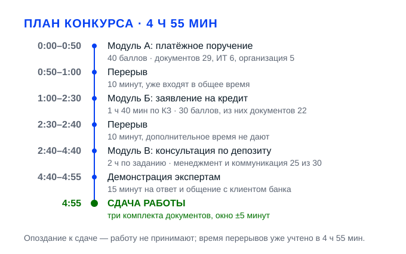
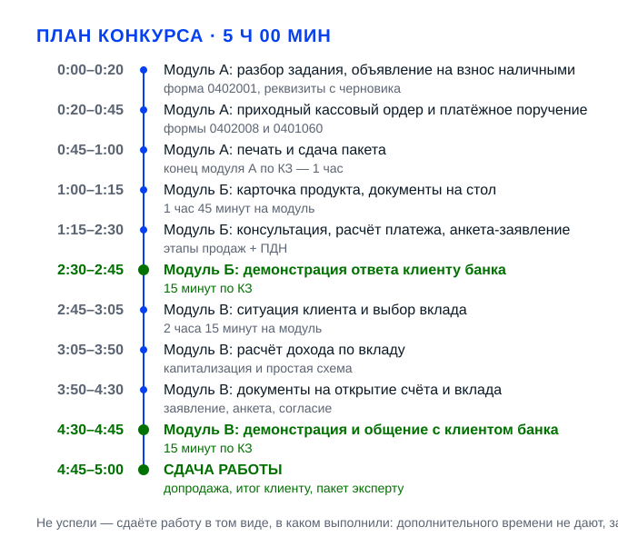
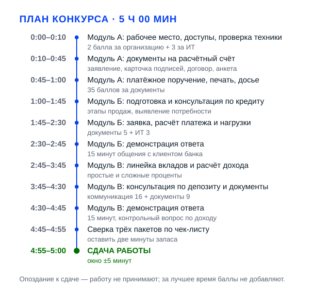

Консультант по банковским продуктам (Р)
Задания ниже — официальные файлы «Абилимпикс» (источник: abilympics-russia.ru), разложенные по категориям. Решения написаны по тексту задания, регламенту и критериям оценки; в них указано, что именно проверяет эксперт.
Школьник
14–16 лет, базовый уровень заданияВыдержка из официального конкурсного задания: страницы, относящиеся к категории «Школьник» (стр. 13–15 источника).
Пошаговое решение
Задание для школьников состоит из трёх модулей на 100 баллов и идёт 4 ч 55 мин: модуль А — 1 час и 40 баллов за платёжное поручение, модуль Б — 1 час 40 минут и 30 баллов за заявление на кредит, модуль В — 2 часа 15 минут, включая 15 минут на демонстрацию ответа, и ещё 30 баллов за консультацию по депозиту по этапам продаж. Вес критериев разный: организация рабочего процесса и охрана труда — 5, 3 и 3 балла, действия с банковской документацией — 29, 22 и часть баллов модуля В, информационные технологии — 6, 5 и остаток, а в модуле В почти всё отдано менеджменту и коммуникации: 25 баллов из 30. Документы должны быть распечатаны, а не сохранены в файле, и перед соревновательным днём в задание вносят не менее 30 процентов изменений, поэтому реквизиты и условия продуктов нельзя заучить. Ниже каждый шаг разобран целиком: что делать, зачем, как проверить, что ломается и что смотрит эксперт.

Задача 1. Оформить платёжное поручение в модуле АМодуль А · 40 баллов
Первый модуль — самый дорогой: 40 баллов из 100, из них 29 дают за действия с банковской документацией, 6 за работу на компьютере и с принтером и 5 за организацию рабочего места. На всё отведён ровно час, и внутри этого часа нужно успеть разобрать задание, собрать реквизиты, заполнить платёжное поручение, проверить его и отдать распечатанный лист эксперту. Здесь выигрывает не тот, кто быстрее печатает, а тот, кто ни разу не ошибся в цифрах: двадцать знаков счёта, девять знаков БИК, сумма цифрами и прописью — всё это проверяется построчно.
Действие 1.1. Развернуть рабочее место по требованиям охраны труда
Шаг 1.1.1
Заходим на площадку и первые две минуты не трогаем ни клавиатуру, ни бланки: сначала осматриваем рабочее место. Стол освобождаем от всего, что не относится к заданию, — сумка, телефон, лишние листы уходят со стола, потому что каждый посторонний предмет на столе это повод для замечания по организации рабочего процесса. Стул ставим так, чтобы стопы стояли на полу, а верхний край монитора был на уровне глаз, экран отодвигаем на 50–60 см от лица: по п.6.2 задания это обязательное требование. Свет должен падать слева, блики на экране недопустимы, поэтому доворачиваем монитор боком к окну.
Организация рабочего процесса, охрана труда и техника безопасности — это первые 5 баллов модуля А, и снимаются они не за результат, а за состояние места и порядок действий. Кроме того, впереди 4 часа 55 минут за одним столом: неверная высота стула и слишком близкий экран дают к третьему часу головную боль и ошибки в реквизитах, а одна опечатка в двадцатизначном счёте стоит дороже, чем все организационные баллы вместе.
Сели и положили руки на клавиатуру: локти под углом около девяноста градусов, плечи не подняты, спина касается спинки. Отведите взгляд от экрана — расстояние должно быть не меньше длины вытянутой руки, то есть те самые 50–60 см. На выключенном экране не должно быть видно отражения окна или лампы.
Типичная ошибка — сразу начать печатать, оставив куртку на спинке стула, бутылку воды рядом с системным блоком и сумку под ногами: по п.6.1 и 6.3 задания жидкости на устройствах и посторонние вещи на площадке запрещены, замечание идёт в протокол. Вторая — придвинуть монитор к самому краю стола, чтобы «лучше видеть»: ближе 50 см работать нельзя.
Эксперт обходит площадку до старта и в первые минуты модуля, отмечая чистоту места, положение монитора и отсутствие посторонних предметов. Отдельно он отмечает, убраны ли со стола телефон и сумка: по заданию посторонние предметы на площадке запрещены.
Шаг 1.1.2
Включаем питание в той последовательности, что записана в инструкции на столе: сначала сетевой фильтр, потом системный блок, потом монитор, — это требование п.6.2 задания. Пока загружается система, проверяем принтер: лоток не пустой, бумага формата А4 лежит ровно, без загнутых углов, лоток задвинут до щелчка, на панели нет горящей лампы ошибки. Печатаем пробный лист и смотрим, нет ли полос и бледных участков. Заодно проверяем раскладку клавиатуры и цифровой блок: реквизиты набираются цифрами, и промах по соседней клавише в счёте не виден до сверки.
Информационные технологии и работа с офисным оборудованием — 6 баллов в модуле А и еще по 5 баллов в остальных модулях конкурса, то есть это отдельный критерий, а не фон. Результат модуля А по заданию — оформленный и распечатанный документ, значит неисправный принтер или мятая бумага превращают готовую работу в неоценённую, а время на перезапуск и повторную печать из часа модуля никто не вернёт.
Пробный лист читается без полос и замятий, поля не обрезаны, текст не бледный. Если дефект есть, сразу зовём эксперта: по п.6.2 при выявлении неполадок к работе не приступают, пока их не устранят. Если после пробной печати на листе осталась полоса, второй лист не печатаем, пока принтер не проверен.
Самая частая ошибка — обнаружить пустой лоток в момент, когда документ уже готов и до сдачи пять минут: печать срывается, участник паникует и правит реквизиты «на скорость». Вторая — включить только системный блок и забыть про монитор: экран остаётся тёмным, минуты уходят на выяснение, а бумага и время утекают из модуля.
Эксперт смотрит, как участник запускает оборудование и что делает при сбое: спокойный вызов эксперта ценится выше попыток починить принтер самостоятельно, что прямо запрещено п.6.3.
Шаг 1.1.3
Раскладываем бумаги в три зоны: слева задание и раздаточный материал с реквизитами, по центру чистый бланк или открытая форма в программе, справа то, что уже заполнено и проверено. Ручку берём одну, с синей пастой и без «перьев» на стержне, потому что исправления в банковском документе не приветствуются, а замазка и зачёркивания читаются как порча бланка. Всё, чем не пользуемся, — карандаши, чужие листы, телефон — убираем в сумку, а сумку уносим со стола, чтобы она не мешала и не считалась посторонним предметом.
Действия с банковской документацией — 29 из 40 баллов модуля А, и работа с бланком начинается с того, в каком состоянии бланк и на чём участник пишет. Испорченный бланк на конкурсе не всегда можно заменить: если чистых листов ровно по числу попыток, каждая ошибка становится окончательной, поэтому бумагу расходуем только после проверки на черновике.
На столе остались только задание, бланк, черновик и ручка, правая зона свободна для готового документа. Бланк не помят, без пятен, и в нём нет заранее вписанных чужих данных из образца. Отдельно проверьте, что на бланке нет следов ластика и залома на уголке: такой лист в банке считают испорченным.
Типичная ошибка — держать бланк под локтем вместе с черновиком и перенести на него черновые цифры или пятно от руки. Вторая — взять гелевую ручку, которая мажет: касание ладонью размазывает только что написанную сумму, и документ приходится переписывать целиком.
Эксперт оценивает культуру работы с документом: аккуратность бланка, отсутствие исправлений, единый цвет пасты. Если бланк свисает с края стола, это тоже попадает в замечание по организации места.
Действие 1.2. Разобрать задание и собрать реквизиты
Шаг 1.2.1
Читаем задание дважды: первый раз целиком, чтобы понять, кто кому и за что платит, второй раз с карандашом, подчёркивая пять обязательных вещей — плательщика с его счётом и банком, получателя с его счётом и банком, сумму, назначение платежа и очерёдность. Формулировку назначения выписываем из задания дословно, потому что именно она чаще всего переписывается «по смыслу» и теряет баллы: в назначении должны быть основание платежа с номером и датой документа и, если указано, сумма НДС.
По п.2.3 задания участник обязан изучить конкурсное задание и выделить ключевые моменты — это прописанный этап, а не пожелание. Платёжное поручение оценивают по реквизитам, и если участник неверно понял, кто получатель, он аккуратно оформит не тот документ: техника заполнения будет безупречной, а 29 баллов за действия с документацией уйдут почти полностью.
Проверьте себя тремя вопросами: чей счёт списывается, чей зачисляется, на каком основании идёт платёж. Если хотя бы на один ответ приходится искать в тексте второй раз, ключевой момент не найден и надо вернуться к заданию.
Классическая ошибка — поменять местами плательщика и получателя, особенно когда задание написано от лица организации-поставщика: реквизиты те же, а документ перевёрнут. Вторая — придумать назначение платежа своими словами и потерять ссылку на договор, после чего платёж считается невыясненным.
Эксперт слушает, как участник объясняет, что за операция перед ним: умение назвать операцию словами входит в защиту результата. Ему важно услышать не термин, а понимание: кто теряет деньги, кто получает и по какому документу.
Шаг 1.2.2
Заводим на черновике таблицу из двух колонок — «плательщик» и «получатель» — и переносим в неё построчно: наименование, ИНН, КПП, счёт, банк, БИК, корсчёт. Переносим по одному реквизиту и сразу ставим галочку, чтобы не потерять строку: двадцать цифр счёта глазом не запоминаются, а при переносе из раздатки в форму теряются крайние цифры. Длины служат быстрой проверкой: счёт 20 знаков, БИК 9, корсчёт 20, КПП 9, ИНН организации 10, ИНН физлица или ИП 12 — цифр меньше или больше, значит при переносе что-то съехало.
Действия с банковской документацией дают модулю А 29 баллов из 40, и почти все потери идут от реквизитов, а не от незнания формы. Черновик нужен ещё и потому, что в бланк данные попадают один раз: банковский документ не терпит повторного вписывания, зато черновик можно править сколько угодно без риска испортить бланк.
Сверяем черновик с раздаткой в обратном порядке — от последней цифры к первой: так глаз не «дочитывает» то, что ожидает увидеть. Контрольная проверка: длина каждого реквизита совпадает с ожидаемой, а счёт получателя начинается с балансового счёта, указанного в задании.
Типичная ошибка — копировать счёт «мышкой» вместе с пробелами и получить 22 знака вместо 20. Вторая — взять ИНН из шапки бланка, где напечатан ИНН банка, а не клиента: документ уйдёт в чужой банк, и платёж вернётся.
Эксперт подходит и смотрит на черновик: наличие выписанных реквизитов сразу показывает, работает участник системно или заполняет бланк «с листа». Если реквизиты выписаны столбиком и с галочками, видно, что участник сверит их ещё раз перед печатью.
Шаг 1.2.3
Проверяем не отдельные цифры, а связки: счёт получателя с его БИК, корсчёт банка с тем же БИК. Девятый разряд двадцатизначного счёта — контрольный ключ, он рассчитывается от БИК, поэтому счёт, скопированный из другого договора с другим банком, почти наверняка не сойдётся. Если на площадке есть форма проверки или программа, прогоняем реквизиты через неё: она подсветит неверную длину и несоответствие ключа быстрее, чем ручная сверка, а время в модуле А идёт быстро.
Ошибка в контрольном ключе — это не опечатка в тексте, а гарантированный возврат платежа: банк получателя отбраковывает документ автоматически, и деньги не уходят. На конкурсе такой платёж означает, что результат модуля не достигнут, хотя бланк заполнен аккуратно, и 29 баллов за действия с документацией при этом теряются почти целиком.
Счёт, БИК и корсчёт каждого банка выписаны в одной строке черновика и сверены между собой. При проверке в программе нет красных отметок; при ручной проверке сходятся длины 20 и 9 знаков, а девятый разряд счёта не вызывает сомнений по ключу.
Типичная ошибка — оставить счёт из образца, который лежит на столе как пример оформления: в нём чужие цифры, и они выглядят «правильно». Вторая — перепутать корсчёт банка получателя с корсчётом своего банка, они отличаются всего несколькими цифрами.
Эксперт проверяет именно связки реквизитов: несовпадение ключа видно в его чек-листе сразу и относится к грубым ошибкам. Для него это маркер: участник понимает, что счёт и банк связаны, а не просто переписывает цифры из раздатки.
Действие 1.3. Заполнить платёжное поручение
Шаг 1.3.1
Открываем бланк платёжного поручения или форму в программе и начинаем сверху: номер документа, дата, вид платежа. Сумму пишем цифрами в отдельном поле, рубли отделяем от копеек знаком «-», например 15 480-00, и не ставим в этом поле никаких лишних знаков. Номер и дату берём из задания, а если номера там нет, ставим текущую дату площадки: придумывать номер «на глаз» не нужно, но и повторять номер прошлого документа нельзя, потому что документы в пакете должны различаться.
Верхняя часть бланка — та, с которой начинают читать документ и эксперт, и банк: по ней определяют, что за операция и на какую сумму. Сумма цифрами и сумма прописью связаны между собой, и расхождение между ними считается грубой ошибкой, из-за которой документ не принимают к исполнению.
Дата совпадает с датой из задания или с датой конкурса, номер не повторяется, сумма цифрами читается без двусмысленности: видно, где рубли, а где копейки. Проговорите сумму вслух — так быстрее ловится лишний ноль.
Ошибка с лишним нулём самая дорогая: 154 800 вместо 15 480 выглядит правдоподобно и глазом не проверяется. Вторая — забыть копейки и оставить прочерк там, где в задании сумма с копейками. Третья по частоте — оставить поле вида платежа пустым, хотя в бланке оно относится к обязательным.
Эксперт сверяет сумму и дату построчно с заданием; расхождение по сумме фиксируется как ошибка в реквизитах. Сумма и дата — первые поля, которые он вообще смотрит, ещё до банковских блоков.
Шаг 1.3.2
Заполняем блоки банка плательщика и банка получателя: наименование банка, БИК, корсчёт. Работаем строго по выписанным реквизитам, не дополняя и не сокращая название: если в раздатке указано полное наименование с организационно-правовой формой, так и пишем, а не «ВТБ» и не «Сбер». Корсчёт вписываем тот, что относится к этому БИК, и проверяем, что блоки не перепутаны: у плательщика и получателя они одинаковы по форме, и именно на них теряется внимание к концу заполнения.
БИК и корсчёт определяют маршрут денег: по ним платёж уходит в конкретное подразделение банка. Банковская документация оценивается по формальным признакам, и верный счёт получателя при чужом БИК не приведёт к зачислению, поэтому 29 баллов модуля А держатся на этих двух блоках.
БИК в блоке получателя совпадает с БИК из раздатки до последней цифры, корсчёт состоит из 20 знаков и начинается так же, как в образце. Наименование банка не содержит лишних слов и не сокращено. Блоки банка плательщика и получателя заполнены разными реквизитами, а не скопированы один в другой.
Характерная ошибка — заполнить только верхний блок банка, а нижний оставить с данными из шаблона: в шаблоне обычно чужой банк, и документ уходит не туда. Вторая — сократить название банка «для красоты» и потерять организационно-правовую форму, из-за чего документ не проходит формальную проверку.
Эксперт сверяет оба банковских блока отдельно, потому что ошибки в них типовые и легко проверяются. Если БИК получателя совпадает с БИК плательщика, он задаёт вопрос: так бывает, но редко, и участник должен объяснить.
Шаг 1.3.3
Заполняем наименования плательщика и получателя, их счета, назначение платежа, НДС и очерёдность. В назначении пишем одной строкой, без сокращений, непонятных банку: за что платим, по какому документу и от какой даты, и отдельно оговариваем налог, например «Оплата по договору поставки № 14 от 12.05.2026, в т.ч. НДС 20% — 2580-00». Очерёдность ставим ту, что указана в задании: для обычного добровольного платежа это 5, для платежей по требованию — ниже. Поле УИН заполняем только тогда, когда в задании есть идентификатор, иначе оставляем ноль.
Назначение платежа — единственное место, где видно основание операции: без него платёж считается невыясненным и может быть возвращён. НДС тоже указывается в назначении, а не в отдельном поле, поэтому забытая фраза про налог — ошибка содержания, которая оценивается по критерию действий с документацией.
Прочитайте назначение так, как его прочитает получатель: понятно ли, за что пришли деньги и по какому документу. Сумма НДС, если она упомянута, арифметически соответствует сумме платежа и ставке из задания, а очерёдность стоит в своём поле.
Типичная ошибка — написать «оплата по счёту» без номера и даты: такой платёж сложно зачесть. Вторая — поставить очерёдность 1 «на всякий случай», хотя первая очередь относится к исполнительным документам о возмещении вреда.
Эксперт читает назначение платежа целиком и сверяет формулировку с заданием, это одна из самых весомых позиций модуля. Заученная формулировка без ссылки на документ его не убеждает: он ищет в назначении номер и дату.
Шаг 1.3.4
Пишем сумму прописью: рубли словами с заглавной буквы, копейки цифрами, без сокращений посередине фразы, например «Пятнадцать тысяч четыреста восемьдесят рублей 00 копеек». Проверяем окончания: «один рубль», «два рубля», «пять рублей» — эти формы глаз замечает только при чтении вслух. Внизу ставим подпись и, если в задании указана печать организации, оттиск; обязательных пустых полей на бланке остаться не должно.
Расхождение суммы цифрами и прописью — формальное основание не принимать документ, причём банк в этом случае не ищет, какая из сумм верна. Подпись тоже обязательна: без неё поручение недействительно, и это относится к базовым требованиям к оформлению банковской документации, о которых прямо сказано в п.2.3.1 задания.
Читаем прописью вслух и сверяем с цифрами разряд за разрядом: тысячи, сотни, десятки. Подпись на месте, оттиск не перекрывает текст, обязательные поля заполнены. Сверьте также, что копейки записаны цифрами, а не словами: в банковской практике принято именно так.
Самая частая ошибка — написать «восемьсот сорок» там, где в цифрах стоит 480: цифры меняются местами в голове. Вторая — забыть копейки и написать «00 рублей» там, где сумма заканчивается на копейки. Третья — поставить оттиск печати так, что он закрывает сумму прописью.
Эксперт проверяет пару «цифрами — прописью» практически всегда: это быстрый способ увидеть, насколько участник контролирует документ. Если сумма прописью написана с маленькой буквы или без указания копеек, это фиксируется отдельной строкой.
Действие 1.4. Проверить, распечатать и сдать документ
Шаг 1.4.1
Берём задание и проходим документ сверху вниз, палец на строке задания, палец на строке документа: сверяем все перенесённые реквизиты и отдельно те, что вводили руками, — сумму, номер, дату, назначение. Второй проход делаем по логике: сходятся ли суммы, тот ли банк у получателя, совпадает ли назначение с операцией. На исправления времени уже нет, поэтому найденную ошибку фиксируем на черновике и, если бланк ручной, аккуратно переписываем, а не зачёркиваем.
Сверка — отдельный навык, который в критериях идёт по линии действий с банковской документацией: 29 баллов модуля А набираются не заполнением, а отсутствием ошибок. Практика чемпионатов показывает, что большинство потерь идёт не от незнания формы, а от спешки на последних минутах, когда документ уже кажется готовым.
Пройдите шесть пунктов: сумма цифрами, сумма прописью, счета, БИК и корсчета, назначение с основанием, подпись и дата. Если хоть один пункт вызвал паузу, значит, он не проверен до конца. Полезно перевернуть лист и посмотреть на него как на чужой документ: так видны записи, которые глаз уже не замечает.
Типичная ошибка — проверить документ один раз и по диагонали, потому что «всё писал сам, помню». Вторая — начать переписывать бланк за две минуты до сдачи и внести новую ошибку уже в чистовик. Третья — исправлять ручкой прямо в бланке, оставляя зачёркнутую цифру видимой.
Эксперт может подойти в момент сверки и попросить показать, как участник проверяет реквизиты; системная проверка читается как профессиональный навык. Ему важно увидеть движение: участник вернулся к заданию, а не пролистал документ наскоро.
Шаг 1.4.2
Печатаем документ, не меняя масштаб: если форма не влезает на лист, правим параметры страницы, а не уменьшаем до восьмидесяти процентов, иначе эксперту будет трудно читать. Проверяем лист сразу, не отходя от принтера: все поля на месте, края не обрезаны, цифры в счёте не слиплись, оттиск и подпись видны. Если печать смазана, печатаем второй экземпляр, а первый не бросаем в общую стопку, чтобы не сдать его по ошибке.
Результат модуля А по заданию — оформленный и распечатанный документ, то есть баллы начисляются за бумагу, а не за файл на экране. Обрезанное поле с суммой или счётом делает документ нечитаемым, и эксперт физически не сможет проверить соответствие реквизитов, сколько бы правильных цифр ни было внутри.
Лист читается целиком: правый и нижний край не срезаны, все двадцать цифр счёта видны, подпись не ушла за поле. Проверьте на просвет, что на обороте нет прогона от предыдущей печати. Отдельно проверьте, что на листе нет серых полос от тонера и что подпись пропечаталась полностью.
Ошибка масштаба — классика: участник печатает «по размеру страницы», и половина реквизитов уезжает вниз, на второй лист. Вторая — не проверить пробный лист и получить бледную печать, в которой не читается назначение платежа.
Эксперт оценивает именно распечатанный лист, поэтому качество печати и читаемость полей входят в оценку напрямую. Если участник печатает документ дважды и сдаёт второй экземпляр, это не ошибка, а нормальная осторожность.
Шаг 1.4.3
Укладываем готовые листы в один комплект, скрепляем так, как требует площадка, и сдаём эксперту, называя документ своими словами: «платёжное поручение номер двенадцать на сумму 15 480 рублей, плательщик такой-то, получатель такой-то». Если эксперт просит пояснить, откуда взята очерёдность или формулировка назначения, отвечаем коротко, ссылаясь на строку задания, и не начинаем рассказывать всю историю работы.
По п.2.3 задания участник обязан предоставить результаты работы перед экспертами и ответить на их вопросы, поэтому сдача — часть задания, а не формальность после него. Спокойное и точное название документа показывает, что участник понимает, что сделал; путаница в собственных реквизитах читается как случайно заполненный бланк.
Документ у эксперта, комплект полный, номер и сумма названы верно. Убедитесь, что сдан именно проверенный лист: если в стопке лежат два варианта, второй нужно забрать со стола. Проверьте также, что в папку не попал лист из другого модуля: документы трёх модулей не смешиваются.
Типичная ошибка — положить лист в общую стопку и уйти, не назвав документ: эксперту приходится выяснять, чья это работа, а участник теряет возможность объяснить спорный реквизит. Вторая — сдать черновик, перепутав его с чистовиком.
Эксперт фиксирует сдачу в протоколе и может задать два-три вопроса по реквизитам: здесь же видно, понимает ли участник смысл операции. Он может попросить назвать получателя платежа: на этом простом вопросе видно, читал ли участник задание.
Задача 2. Оформить заявление на получение кредитаМодуль Б · 30 баллов
Второй модуль длится 1 час 40 минут и стоит 30 баллов: 22 из них дают за действия с банковской документацией, 5 за работу на компьютере и с принтером и 3 за организацию рабочего места. Результат по заданию — оформленное и распечатанное заявление на кредит, то есть документ, который должен быть внутренне согласован: сумма и срок из расчёта нагрузки, доход из справки, паспортные данные посимвольно. Здесь нет «творческой части» — есть кейс клиента и бланк, и выигрывает тот, кто сначала считает, а потом пишет.
Действие 2.1. Понять ситуацию клиента и параметры кредита
Шаг 2.1.1
Читаем кейс клиента как историю, а не как набор полей: кто он, где работает, сколько получает, что хочет купить и на какой срок, есть ли у него другие кредиты. Выписываем на черновик четыре числа — доход в месяц, сумму запроса, желаемый срок и сумму обязательных платежей по другим кредитам, — потому что дальше эти четыре числа управляют всем: и расчётом, и выбором продукта, и заполнением заявления. Всё, чего в кейсе нет, помечаем как «уточнить» и не додумываем: выдуманная цифра в документе хуже пустого поля, которое можно согласовать.
Модуль Б стоит 30 баллов, из которых 22 приходятся на действия с банковской документацией: заявление на кредит заполняется строго из кейса, и любая выдуманная цифра — это ошибка в документе. Кроме того, при 1 часе 40 минутах на модуль первые пять минут чтения экономят двадцать минут переделок в середине.
Четыре числа выписаны, и по каждому понятно, откуда оно взялось — из какой строки кейса. Если по какому-то пункту стоит «уточнить», проверьте, есть ли он в дополнительных материалах на столе, прежде чем идти к эксперту.
Типичная ошибка — начать заполнять заявление с первой страницы, не дочитав кейс, и узнать про второй кредит клиента на середине: расчёт платежеспособности к этому моменту уже неверен, и заявление приходится переделывать.
Эксперт смотрит, как участник работает с исходными данными: выписанные числа и пометки на черновике — прямой признак анализа. Ему также видно, сколько времени ушло на чтение: пять минут чтения и двадцать минут переделок заметны в хронометраже.
Шаг 2.1.2
Считаем нагрузку: складываем все обязательные платежи клиента, включая новый кредит, и делим на его доход за месяц. Полученную долю сравниваем с ориентиром пятьдесят процентов: если выходит больше, кредит по этой сумме и сроку не проходит, и нужно либо увеличивать срок, либо уменьшать сумму, либо предлагать другое обеспечение. Считаем на бумаге или в таблице, а не в голове, и записываем оба варианта — до и после корректировки, чтобы на защите было что показать.
Показатель долговой нагрузки — то, чем банк обосновывает решение, и именно его эксперт попросит объяснить. Кредит выдаётся не по желанию клиента, а по расчёту, поэтому в заявлении сумма и срок должны быть такими, при которых нагрузка остаётся в допустимых пределах, иначе документ внутренне противоречив.
Пересчитайте на калькуляторе: сумма всех платежей делится на доход, результат получается в процентах. Если выходит 52 процента, а в заявлении стоит сумма, которую просил клиент, расчёт и документ не сходятся.
Ошибка — посчитать только новый платёж и забыть про действующий кредит клиента: нагрузка занижается почти вдвое, и заявление выглядит красиво, но неверно. Вторая — округлить доход в большую сторону «для запаса», из-за чего расчёт перестаёт совпадать со справкой.
Эксперт просит показать расчёт и слушает объяснение: арифметика проверяется по шагам, а не по конечной цифре. Если участник считает в уме и называет только результат, эксперт просит показать слагаемые: сумма обязательств важнее итога.
Шаг 2.1.3
Сравниваем два-три варианта из продуктовой линейки, которая лежит в раздаточном материале: срок, ставка, требования к обеспечению и способу подтверждения дохода. Выбираем тот, который закрывает цель клиента и проходит по нагрузке, и записываем на черновик обоснование в одну строку: срок, ставка, платёж, получившаяся нагрузка. Если в кейсе есть залог или поручитель, отдельно отмечаем, что именно будет обеспечением, потому что это поле тоже есть в заявлении.
Параметры заявления выбираются не произвольно: банк оценивает и цель, и обеспечение, и подтверждение дохода. Обоснованный выбор продукта — то, что отличает оформленный документ от формально заполненного, и на защите это первое, о чём спрашивают. В ответе должны звучать цифры, а не общие слова о надёжности банка.
У выбранного варианта сходятся четыре вещи: сумма равна запросу или обоснованно меньше, срок реалистичен для цели, платёж проходит по нагрузке, обеспечение соответствует условиям продукта. Если вариант не проходит по нагрузке, у вас есть второй вариант с увеличенным сроком и готовое объяснение.
Типичная ошибка — взять продукт с самой низкой ставкой, не заметив, что он требует залога, которого у клиента нет. Вторая — растянуть срок до максимума, чтобы снизить платёж, и забыть, что переплата при этом растёт.
Эксперт оценивает обоснование выбора: названы ли параметры и причина, а не только итоговая сумма. Он просит назвать, чем выбранный продукт отличается от соседнего по линейке, и слушает, есть ли в ответе цифры.
Действие 2.2. Проверить документы заёмщика и данные для заявления
Шаг 2.2.1
Берём перечень документов из задания и проверяем по нему фактический пакет: паспорт, документ о доходе, заполненное заявление, согласия. Каждый документ отмечаем галочкой на черновике, а не держим в памяти, и отдельно смотрим сроки действия: паспорт должен быть действующим на дату заявления, справка о доходах — за тот период, который указан в условиях. Если какого-то документа нет, фиксируем это в черновике и сообщаем, что именно нужно донести.
Проверка полноты документов заёмщика — обязательный этап кредитной работы, без которого заявление не рассматривается. В критериях модуля Б на действия с документацией приходится 22 балла из 30, и комплектность пакета — первое, что проверяет эксперт. Пропущенная справка обнаруживается на первом же листе пакета.
По каждому пункту перечня есть документ на столе, галочка стоит, срок действия не истёк. Количество листов в пакете совпадает с количеством отмеченных пунктов. Отдельно проверьте, что копии читаемы и что на них видны все страницы, а не только первая.
Типичная ошибка — считать, что паспорт «и так все знают», и не сверить серию и номер с данными, которые переносятся в заявление. Вторая — принять справку о доходах за период, который не совпадает с требуемым.
Эксперт может выборочно проверить комплектность и соответствие документов данным в заявлении. Если в пакете лежит документ с истёкшим сроком действия, он отмечает это как ошибку комплектности, а не как описку.
Шаг 2.2.2
Переносим из паспорта фамилию, имя, отчество, дату рождения, серию и номер, кем и когда выдан, код подразделения — посимвольно, сверяя каждую строку с оригиналом. Отдельно проверяем адрес регистрации: он должен совпадать с паспортом, а не с фактическим адресом проживания. Данные о занятости берём из справки: наименование организации, должность, стаж, и сверяем ИНН организации, если он указан, потому что расхождение в одной цифре ломает проверку по базам.
Расхождение хотя бы в одном символе паспортных данных делает заявление недействительным: банк идентифицирует клиента по ним, а по законодательству о персональных данных ещё и обязан обеспечить их точность. Это прямая потеря баллов по критерию действий с банковской документацией.
Сверьте в обратном порядке: от кода подразделения к фамилии. Отдельно проверьте дату рождения, потому что в ней чаще всего меняются местами день и месяц. Проверьте отдельно адрес: он переписывается из паспорта целиком, вместе с индексом и наименованием региона.
Классическая ошибка — написать дату рождения в формате, отличном от указанного в бланке, и получить день, которого нет в месяце. Вторая — сократить наименование региона в адресе до аббревиатуры, что в банковском документе недопустимо.
Эксперт сверяет паспортные данные с оригиналом выборочно, но всегда смотрит на дату рождения и адрес. Если участник сверяет данные вслух, проговаривая цифры, это читается как профессиональная привычка, а не как заученность.
Шаг 2.2.3
Проверяем, что в заявлении отмечены согласия: на обработку персональных данных и на запрос кредитной истории в бюро кредитных историй. Если в форме под согласия отведены отдельные поля под дату и подпись, заполняем и их, а не оставляем пустыми, потому что согласие без даты считается неполученным. Отдельно смотрим, нет ли в кейсе ограничений: если клиент просил не передавать данные третьим лицам, формулировка согласия должна этому соответствовать.
Без согласия на запрос кредитной истории банк не имеет права проверять заёмщика, то есть заявление физически не проходит дальше. Это одна из немногих позиций, где формальная галочка решает судьбу всей работы, а в критериях она относится к действиям с документацией.
Обе галочки стоят, дата и подпись на месте, формулировка не противоречит кейсу. Проверьте, что согласие относится к тому банку, от имени которого оформляется заявление. Проверьте также, что галочки не переставлены: согласие на обработку данных и согласие на запрос истории — разные поля.
Типичная ошибка — поставить галочку и не поставить дату, потому что «подпись же есть». Вторая — подписать согласие от имени клиента, хотя в кейсе указано, что подписывает сам заявитель. Третья — оставить согласие неподписанным, решив, что за клиента подпишет эксперт.
Эксперт проверяет блок согласий почти всегда: это место, где формальные пропуски встречаются чаще всего. При этом он смотрит не на наличие подписи, а на её принадлежность: кто именно подписал и в какой строке.
Действие 2.3. Заполнить заявление на кредит
Шаг 2.3.1
Начинаем с шапки: наименование банка и подразделения, вид продукта, номер и дата заявления, фамилия и инициалы заявителя. Номер ставим по правилу площадки, обычно порядковый, дату — текущую или указанную в кейсе. В поле продукта пишем то же название, что в продуктовой линейке, а не «кредит наличными» своими словами, иначе эксперт не сможет сопоставить заявление с обоснованием выбора из первого действия.
Шапка связывает документ с продуктом и датой: по ней заявление регистрируется. В модуле Б 22 балла из 30 дают за действия с банковской документацией, и оценка идёт по реквизитам, поэтому название продукта и дата — проверяемые поля, а не украшение. Название продукта он сверяет с линейкой, а дату — с датой конкурса или кейса, и оба поля отмечает в чек-листе.
Название продукта дословно совпадает с линейкой, дата не раньше даты кейса, номер не повторяет номер другого документа в пакете. Проверьте также, что в шапке нет данных из шаблона: демонстрационного клиента, чужого отделения и чужой даты.
Типичная ошибка — заполнить шапку «примерно», потому что это не реквизиты клиента. Вторая — поставить дату, которая ещё не наступила, перепутав месяц и день. Третья — оставить в шапке наименование отделения из образца, хотя по заданию оформление идёт от другого подразделения.
Эксперт сверяет шапку с заданием и продуктовой линейкой перед тем, как читать суммы. Он также смотрит, совпадает ли номер заявления с номером, под которым документ зарегистрирован в пакете приложений.
Шаг 2.3.2
Вносим параметры: сумму цифрами и прописью, срок в месяцах, ставку, размер ежемесячного платежа и дату первого платежа. Платёж берём из своего расчёта, а не из примерного графика: если в задании есть формула аннуитета, считаем по ней, подставляя ставку, делённую на двенадцать, и число месяцев. Проверяем, что сумма прописью совпадает с цифрами и что валюта указана в рублях, если кредит рублёвый.
Параметры — ядро заявления: по ним банк строит график и считает нагрузку. Ошибка в сроке на шесть месяцев меняет и платёж, и переплату, а расхождение суммы цифрами и прописью делает документ непригодным точно так же, как в платёжном поручении из модуля А.
Пересчитайте платёж вторым способом — через таблицу или калькулятор — и сравните до рубля. Сумма прописью прочитана вслух и совпадает с цифрами. Отдельно проверьте, что ставка указана в процентах годовых, а не за весь срок: эти цифры отличаются в разы и путаются чаще всего.
Типичная ошибка — подставить в расчёт годовую ставку целиком вместо ставки, делённой на двенадцать, и получить платёж в двенадцать раз больше. Вторая — забыть указать дату первого платежа, без которой график не строится.
Эксперт проверяет расчёт платежа и его сходимость с параметрами: здесь видно, считал участник или переписал цифру из примера. Если платёж в заявлении не совпадает с расчётом на черновике, он просит объяснить, какой из двух верен.
Шаг 2.3.3
Заполняем блок сведений о клиенте: доход, источник дохода, работодатель, стаж, наличие других кредитов и сумму платежей по ним. Данные берём из справки и кейса, а обязательства перечисляем те, что есть, не добавляя «на всякий случай» и не убирая неудобные. Если в форме есть поле для совокупного дохода семьи, а в кейсе он не указан, оставляем поле незаполненным, а не придумываем цифру.
Этот блок — то, на чём строится решение по заявке, и он же сверяется с расчётом нагрузки. Если в заявлении доход выше, чем в справке, документ противоречит приложенному пакету, и это грубая ошибка по критерию работы с документацией. Это прямое противоречие документам пакета, а не мелкая неточность.
Доход в заявлении равен доходу в справке до рубля, обязательства совпадают с кейсом, стаж на дату заявления не прерывается. Наименование работодателя сверено посимвольно. Проверьте также, что дата приёма на работу и стаж не противоречат друг другу: полгода стажа при приёме в прошлом месяце — ошибка.
Типичная ошибка — округлить доход до удобной суммы, чтобы нагрузка выглядела лучше: расхождение со справкой видно сразу. Вторая — забыть указать действующий кредит, о котором сказано в кейсе. Третья — указать доход в тысячах, забыв дописать три нуля.
Эксперт сверяет блок доходов со справкой и с расчётом нагрузки, это ключевая точка модуля Б. Если обязательства в заявлении меньше, чем в кейсе, он проверяет расчёт нагрузки: занижение всегда проявляется именно там.
Шаг 2.3.4
Завершаем заявление: подпись заявителя, дата, перечень приложений — копия паспорта, справка о доходах, согласия. Приложения перечисляем те, что реально есть в пакете, и в том же порядке, в каком они лежат, чтобы эксперт мог проверить состав, не перебирая листы. Если форма предполагает подпись сотрудника банка, а по кейсу участник и есть сотрудник, ставим подпись в это поле, но за клиента не подписываем.
Подпись и приложения превращают заполненный бланк в документ, который принимают к рассмотрению. Перечень приложений — тоже проверяемая часть: заявление без указанных приложений считается некомплектным, сколько бы правильных цифр в нём ни было. Перечень приложений — часть документа, а не свободная строка.
Подписи на своих местах, дата стоит, приложения перечислены и физически присутствуют в пакете, их количество совпадает с перечнем. Отдельно проверьте, что подпись не перекрывает текст и что дата проставлена тем же числом, что и в шапке заявления.
Частая ошибка — подписать заявление за клиента, хотя по кейсу подписывает он сам. Вторая — перечислить приложения, которых в пакете нет: несоответствие обнаруживается на сверке и читается как небрежность.
Эксперт проверяет подписи и перечень приложений; по ним видно, понимает ли участник, кто и что подписывает. Он может попросить назвать, какие документы приложены и зачем: ответ показывает, понимает ли участник логику пакета.
Действие 2.4. Сверить заявление, распечатать и сдать
Шаг 2.4.1
Проходим заявление с кейсом в руках: каждое поле, где есть данные клиента, сверяем с источником — паспортом, справкой, кейсом. Отдельно проверяем три пары, в которых данные расходятся чаще всего: сумма цифрами и прописью, доход в заявлении и в справке, обязательства в заявлении и в кейсе. Найденное расхождение исправляем сразу и только в одном месте: если правим сумму, проверяем, не тянет ли она за собой расчёт платежа и нагрузку.
Сверка — это способ не потерять 22 балла из 30, которые даются за действия с банковской документацией. Ошибки здесь не стилистические: любое расхождение между документами пакета означает, что заявление не пройдёт проверку банка, а на конкурсе — что работа не соответствует заданию.
Заявление не спорит ни с одним документом пакета. Проговорите ключевые данные вслух — сумму, срок, доход, фамилию: слух ловит несовпадение быстрее глаза. Отдельно проверьте графы, которые заполняли руками: в них ошибки встречаются чаще, чем в перенесённых из паспорта.
Типичная ошибка — сверять документ с черновиком, а не с источником: если ошибка была уже в черновике, она просто переедет в чистовик. Вторая — исправить сумму, но забыть пересчитать платёж. Третья — сверить только первую страницу и не дойти до блока доходов.
Эксперт смотрит на заявление и на пакет одновременно; расхождение между ними — самая заметная ошибка модуля. Если в заявлении доход выше, чем в справке, он сразу задаёт вопрос о расчёте нагрузки: это связанная пара.
Шаг 2.4.2
Печатаем заявление целиком, включая приложения, если по заданию их нужно распечатать. Проверяем, что страницы не обрезаны, таблицы не разъехались и что на листах нет данных другого клиента из шаблона. Собираем пакет в порядке, указанном в перечне приложений, и скрепляем так, чтобы листы не выпадали при передаче эксперту. Если принтер зажевал лист, печатаем заново, а не вытаскиваем мятую страницу и не сдаём её.
Результат модуля Б по заданию — оформленные и распечатанные документы, и эксперт оценивает бумажный пакет. Разъехавшаяся таблица параметров делает нечитаемыми как раз те поля, за которые дают баллы, а лишние страницы из шаблона читаются как небрежность.
Все страницы на месте, нумерация не сбита, таблицы читаемы, чужого текста нет. Пакет собран в перечисленном порядке и не рассыпается. Проверьте отдельно последнюю страницу: при двусторонней печати она чаще всего уходит на оборот и остаётся незамеченной.
Ошибка — распечатать только первую страницу заявления и забыть, что параметры кредита на второй. Вторая — оставить в шаблоне демонстрационные данные и не заметить их. Третья — скрепить листы так, что при перелистывании часть текста уходит под скобу.
Эксперт листает пакет; наличие всех страниц и читаемость таблиц влияют на оценку напрямую. Если страницы перепутаны по порядку, он всё равно найдёт нужные поля, но отметит небрежность комплектации.
Шаг 2.4.3
Сдаём пакет, называя документ и его ключевые параметры: сумма, срок, платёж, нагрузка. Готовимся к вопросу, почему выбрана такая сумма, и отвечаем через расчёт: доход, обязательства, допустимая доля, отсюда срок и платёж. Если участник корректировал запрос клиента, объясняем, что именно изменилось и почему, показывая черновик с двумя вариантами расчёта.
По п.2.3 задания нужно предоставить результаты и ответить на вопросы экспертов, а в кредитной работе решение всегда обосновывается расчётом. Ответ «так написано в задании» показывает, что участник не видит связи между доходом, нагрузкой и параметрами кредита, и снимает часть оценки за понимание.
Ответ укладывается в три предложения: какой доход, какая нагрузка, почему такой срок. Черновик с расчётом лежит под рукой, значит при вопросе не придётся вспоминать. Проверьте, что вы можете назвать и ставку, и срок, и итоговую переплату: эти три цифры спрашивают чаще остальных.
Типичная ошибка — назвать сумму и растеряться на вопросе о нагрузке: выглядит так, будто расчёт был случайным. Вторая — спорить с экспертом вместо объяснения своей логики. Третья — называть сумму из другого модуля: документы похожи по форме, а цифры в них разные.
Эксперт задаёт один-два вопроса по расчёту и оценивает, держится ли участник своей логики. Он также смотрит, готов ли участник защищать параметры, которые сам изменил относительно запроса клиента.
Задача 3. Провести консультацию по открытию депозитаМодуль В · 30 баллов
Третий модуль — вариативная часть задания, 2 часа 15 минут, и из 30 баллов 25 дают за менеджмент и коммуникацию, то есть за сам разговор с клиентом, а не за бумагу. Здесь участник играет роль сотрудника банка и консультирует клиента по открытию депозита с соблюдением этапов продаж: контакт, выявление потребности, презентация, работа с возражениями, оформление и завершение. На демонстрацию ответа и общение с клиентом по заданию отводят 15 минут, и внутри этих минут должны прозвучать все этапы целиком.
Действие 3.1. Подготовить продуктовую линейку и расчёт
Шаг 3.1.1
Начинаем не с клиента, а с линейки: выписываем на один лист все вклады из раздаточного материала — название, срок, ставка, минимальная сумма, пополнение, снятие, капитализация процентов. Каждому вкладу даём одну строку «кому подходит»: один вариант для тех, кто положил деньги и не трогает их до конца срока, другой для тех, кто копит постепенно и может снять часть. Этот лист держим перед собой во время консультации: подглядывать в него нормально, выдумывать условия на ходу — нет.
Модуль В — 30 баллов, из которых 25 дают за менеджмент и коммуникацию, это самая дорогая часть конкурса. Владение информацией о продуктах проверяется первым: сотрудник банка, путающий условия, теряет доверие клиента с первой же минуты, и дальше разговор идёт вхолостую.
По каждому вкладу на листе есть все шесть параметров, и по любому из них вы отвечаете клиенту без поиска. Проверьте себя вопросом, что будет, если клиент снимет часть денег через полгода, — ответ должен быть по двум-трём вкладам сразу.
Типичная ошибка — выучить одну ставку и предлагать её всем: на вопросе о минимальной сумме или о снятии консультация рассыпается. Вторая — перепутать ставку с капитализацией и пообещать клиенту доход, которого не будет.
Эксперт слушает консультацию и отмечает точность названных условий; ошибка в цифрах фиксируется как потеря по критерию коммуникации. Он также замечает, говорит ли участник «примерно» и «около»: на условиях вклада такие слова недопустимы.
Шаг 3.1.2
Считаем доход по формуле простых процентов: сумма умножается на ставку и на число дней, делится на количество дней в году; для капитализации считаем по периодам и прибавляем проценты к телу вклада. Считаем в таблице или на калькуляторе сразу в двух вариантах — с капитализацией и без, — чтобы клиент увидел разницу. Результат записываем на лист рядом с параметрами вклада и не держим в голове: цифру придётся называть вслух и повторять при вопросе.
В задании для школьников прямо сказано, что результатом модуля В является консультация по открытию депозита с соблюдением этапов продаж, а доход по вкладу клиент спрашивает практически всегда. Способность посчитать доход на месте отличает консультанта от пересказчика буклета и напрямую влияет на 25 баллов коммуникации.
Сумма процентов за год при ставке десять процентов на 100 000 рублей равна 10 000, это быстрый тест на порядок величины. Если расчёт даёт в десять раз больше, значит сумма не поделена на сто. Проверьте также доход за неполный срок: при вкладе на шесть месяцев проценты берутся за половину годовой суммы.
Самая частая ошибка — умножить сумму на ставку, не поделив на сто, и пообещать клиенту нереальный доход. Вторая — посчитать доход за весь срок по годовой ставке, не учтя, что вклад открывается на шесть месяцев.
Эксперт может попросить посчитать доход на своих числах прямо в консультации; ошибка в арифметике видна сразу. Он может назвать сумму и ставку и попросить доход за год: ответ показывает, работает формула или заученная цифра.
Шаг 3.1.3
Пишем для себя план из пяти этапов: приветствие и установление контакта, выявление потребности, презентация продукта, работа с возражениями, оформление и завершение. Под каждым этапом одна-две фразы и время: на контакт минута, на вопросы четыре, на презентацию пять, на возражения три, на оформление две. План держим перед собой, но не читаем с листа: он нужен, чтобы не проскочить этап, а не чтобы зачитывать его клиенту.
В задании результат модуля В сформулирован как консультация с соблюдением этапов продаж, и это не фигура речи: эксперт оценивает наличие каждого этапа отдельно. Пропущенный этап выявления потребности означает, что продукт предложен наугад, и это самая частая потеря баллов в модуле.
В плане пять этапов, у каждого есть время, и ни один не сводится к «рассказать про вклад». Проверьте, что выявление потребности занимает не меньше времени, чем презентация. Отдельно проверьте, что в плане есть заготовка для возражений: без неё экспромт почти всегда звучит как спор.
Типичная ошибка — начать консультацию с презентации вклада: клиент ещё не сказал, что ему нужно, а участник уже продаёт. Вторая — забыть этап завершения и оборвать разговор на середине. Третья — держать план открытым и читать этапы вслух, превращая разговор в отчёт.
Эксперт ведёт протокол по этапам; отсутствие одного этапа вычёркивает соответствующую часть баллов. Если участник весь разговор держит лист перед глазами, это допустимо, но чтение с листа он отмечает отдельно.
Действие 3.2. Установить контакт и выявить потребность
Шаг 3.2.1
Встречаем клиента стоя, здороваемся, называем себя и свою роль, предлагаем сесть и садимся так, чтобы не быть напротив через стол, а чуть под углом. Первые фразы — не про продукт: уточняем, удобно ли клиенту время, и говорим, что консультация займёт около пятнадцати минут. Голос ровный, темп спокойный, зрительный контакт есть; ручку и лист держим наготове, чтобы записывать ответы, а не переспрашивать дважды.
Установление контакта — первый этап продаж, и в критерии менеджмента и коммуникации он оценивается отдельно. От первых тридцати секунд зависит, станет ли клиент отвечать на вопросы: без ответов не будет выявленной потребности, а без неё презентация превращается в монолог на пятнадцать минут.
Клиент сел и назвал свою ситуацию сам, без нажима. Вы успели представиться и сказать, сколько времени займёт разговор, а в листе уже есть первые записи. Проверьте также, что вы не начали говорить о продуктах раньше, чем клиент сел: первые фразы должны быть о нём.
Типичная ошибка — начинать с вопроса о сумме: это допрос, а не контакт. Вторая — не представиться, из-за чего весь разговор клиент не понимает, с кем говорит. Третья — сесть первым и начать с анкеты, из-за чего разговор сразу становится процедурой.
Эксперт в роли клиента оценивает, комфортно ли начался разговор: приветствие, представление, посадка и темп речи фиксируются в протоколе. Он также смотрит, представился ли участник по имени и назвал ли свою роль в банке: это часть стандарта обслуживания.
Шаг 3.2.2
Задаём пять вопросов по порядку: на какую цель копятся деньги, какая сумма уже есть, нужен ли доступ к деньгам до конца срока, планирует ли клиент пополнять, что важнее — доходность или возможность снять в любой момент. Вопросы открытые, вроде «расскажите, на что планируете потратить», а не «вам нужен вклад на год». Ответы записываем коротко, по одному слову на пункт: цель, сумма, срок, доступность, пополнение.
Выявление потребности определяет, какой продукт предложить: без него любой вклад продаётся наугад. В критерии коммуникации это оценивается как умение слушать и задавать вопросы, а ошибка здесь стоит дороже всего, потому что дальше весь разговор идёт не о том продукте.
После вопросов на листе пять записанных пунктов, и вы можете одной фразой пересказать ситуацию клиента. Клиент подтвердил пересказ словами «да, всё так». Проверьте, что ни один вопрос не был закрытым: на вопрос «вам нужен вклад на год?» клиент ответит одним словом.
Типичная ошибка — задать вопрос и тут же перебить ответ своей презентацией. Вторая — не уточнить про доступность денег и предложить вклад без снятия клиенту, которому деньги нужны в любой момент. Третья — записывать ответы после разговора, по памяти, и потерять половину деталей.
Эксперт-клиент отвечает так, как ответил бы настоящий: он проверяет, слушает ли участник ответы и учитывает ли их дальше. Он также отмечает паузы: если участник не даёт клиенту договорить, ответы становятся короче.
Шаг 3.2.3
Проговариваем услышанное вслух и коротко: сумма, срок, цель, готовность пополнять и требование к снятию, и заканчиваем вопросом, правильно ли понято. После подтверждения берём паузу и говорим, что покажем два подходящих варианта. Это и есть переход к презентации: клиент уже согласился слушать, потому что услышал свою ситуацию, а не перечень ставок.
Резюме потребности проверяет, правильно ли понят клиент, до того как звучат цифры. В критерии коммуникации он читается как структурированность: эксперт видит, что консультация идёт по этапам, а не перескакивает с продукта на продукт. Без резюме этапы сливаются, и разговор теряет структуру.
Клиент подтвердил резюме и не поправил ни один пункт. Если поправил, возвращаемся к вопросу, который не до конца выяснили, и не идём дальше. Отдельно проверьте, что в резюме прозвучала цифра: сумма или срок, а не только общие слова про цель.
Типичная ошибка — пропустить резюме и сразу перейти к ставкам: клиент не успевает включиться, а участник рискует предложить не тот продукт. Вторая — сделать резюме в форме подсказки, на которую неудобно ответить «нет».
Эксперт отмечает, прозвучало ли подтверждение потребности до презентации: это разделительная точка между двумя этапами. Если резюме сделано формально, без цифр, он задаёт вопрос по деталям, и становится видно, слушал ли участник.
Действие 3.3. Презентовать вклад, посчитать доход и снять возражения
Шаг 3.3.1
Показываем два вклада из линейки, а не пять: первый с максимальной ставкой под срок клиента, второй с возможностью снятия и пополнения. Каждый описываем по схеме «условие — выгода»: ставка такая, потому что деньги работают весь срок, значит к концу года клиент получит столько-то; минимальная сумма такая, значит можно начать с той суммы, которая уже есть. Цифры называем точно, из своей выписки, и не округляем в свою пользу.
Презентация — третий этап продаж, и её качество входит в 25 баллов менеджмента и коммуникации. Клиент принимает решение не по ставке, а по понятности: продукт, описанный через выгоду и точную цифру, выбирают, а перечень условий выслушивают и забывают.
После презентации клиент может своими словами сказать, чем отличаются два варианта. Вы назвали не больше трёх ключевых параметров на каждый вклад и не перегрузили разговор. Отдельно проверьте, что вы назвали выгоду, а не только условие: «минимальная сумма 50 000» — условие, «начать можно с той суммы, что у вас уже есть» — выгода.
Типичная ошибка — вывалить условия всех вкладов: клиент перестаёт различать варианты и выбирает наугад. Вторая — назвать ставку, не сказав, при каких условиях она действует, и пообещать больше, чем даст продукт.
Эксперт-клиент задаёт уточняющий вопрос по одному из вариантов: ответ показывает, владеет ли участник продуктом. Он также отмечает, назвал ли участник срок и способ выплаты процентов: без этих двух параметров вклад не описать.
Шаг 3.3.2
Считаем доход по выбранному варианту при клиенте, проговаривая шаги вслух: берём сумму, умножаем на ставку, делим на сто и на количество месяцев, получаем доход за срок. Если клиент спрашивает про капитализацию, пересчитываем с ней и показываем разницу. Расчёт записываем на листе и оставляем клиенту: цифра на бумаге убеждает лучше, чем цифра в воздухе, и к ней можно вернуться при оформлении документов.
Умение рассчитать доход по вкладу — отдельное требование к результату модуля В; в критериях оно идёт по линии коммуникации и владения продуктом. Расчёт при клиенте снимает главное возражение — недоверие к цифрам — и делает разговор предметным. Без расчёта разговор остаётся на уровне буклета.
Проверьте расчёт обратным действием: разделите доход на сумму и на срок, должно получиться около ставки. Клиент увидел и цифру дохода, и итоговую сумму на конец срока. Отдельно проверьте, что вы назвали доход именно за срок вклада, а не за год, если вклад открывается на другой период.
Типичная ошибка — считать медленно и с ошибкой, оправдываясь тем, что сейчас посчитаете ещё раз: клиент теряет доверие. Вторая — назвать доход, не назвав, за какой срок он получен. Третья — считать проценты за весь срок, забыв, что ставка указана годовых.
Эксперт следит за арифметикой и за тем, объясняет ли участник, откуда берутся цифры. Если расчёт расходится с его собственной проверкой, он просит повторить шаги вслух и смотрит, где участник сбивается.
Шаг 3.3.3
На возражение сначала соглашаемся частично, потом уточняем, потом отвечаем фактом: понимаю, что в другом банке ставка выше, давайте посмотрим, что стоит за этой разницей, — там вклад без пополнения и с потерей процентов при досрочном снятии, а здесь часть можно снять без потери дохода. Не спорим и не обесцениваем выбор клиента; каждый ответ заканчиваем вопросом, сняли ли сомнение.
Работа с возражениями — четвёртый этап продаж, и он оценивается отдельно: возражение, оставленное без ответа, почти всегда означает отказ. В критерии коммуникации видно, умеет ли участник слушать аргумент, а не перебивать его новой презентацией. Возражение — это запрос на аргумент, а не отказ.
После ответа клиент либо согласился, либо задал следующий уточняющий вопрос, и то и другое значит, что возражение снято. Если клиент повторяет то же возражение, ответ не попал в его причину. Отдельно отметьте, не начали ли вы оправдываться: оправдание звучит как неуверенность в собственном продукте.
Типичная ошибка — отвечать «у нас надёжный банк» на конкретное возражение о ставке: это не ответ. Вторая — спорить и доказывать, что клиент неправ, из-за чего разговор становится конфликтным. Третья — повторять один и тот же аргумент громче, когда клиент его уже не принимает.
Эксперт-клиент специально проверяет одно-два возражения и смотрит, как участник держится. Он также смотрит на паузу перед ответом: профессиональный ответ начинается с уточнения, а не с готовой фразы.
Действие 3.4. Оформить документы, завершить консультацию и выступить перед экспертами
Шаг 3.4.1
После того как основной продукт выбран, предлагаем одно-два дополнения, привязанные к ситуации клиента: карту для выплаты процентов, чтобы не ходить в отделение, или автопополнение со счёта, если клиент копит регулярно. Предлагаем не списком, а одной фразой с причиной: раз вы планируете пополнять раз в месяц, удобно настроить автоплатёж, и документы каждый раз заполнять не придётся. Если клиент отказался, фиксируем отказ и не настаиваем.
Дополнительные продукты — часть работы консультанта, и в модуле В за менеджмент дают 25 баллов из 30: инициатива в предложении оценивается, навязчивость — нет. Кросс-продажа, привязанная к потребности, читается экспертом как профессиональный приём, а не как попытка продать побольше.
Предложение прозвучало после выбора основного продукта, а не до него, и было связано с тем, что клиент сказал о себе. При отказе разговор продолжился спокойно. Отдельно проверьте, что дополнение прозвучало один раз: повторное предложение после отказа читается как давление.
Типичная ошибка — начать с карты и страхования, не оформив вклад: клиент воспринимает это как давление. Вторая — предлагать то, что не относится к ситуации, например накопительное страхование клиенту, которому деньги нужны через год.
Эксперт отмечает наличие и уместность предложения, а также реакцию на отказ. Ему также важно, чтобы предложение было связано с выявленной потребностью: карта для выплаты процентов логична, если клиент говорил, что не хочет ходить в отделение.
Шаг 3.4.2
Оформляем документы по вкладу: заявление на открытие, договор или его реквизитную часть, реквизиты для перечисления. Заполняем по паспорту клиента, сверяя каждую строку; ставку и срок берём из выбранного варианта, сумму вносим цифрами и прописью. Если в пакете есть поле для способа выплаты процентов, отмечаем тот, который обсуждали: капитализация или выплата на счёт.
Требования к оформлению письменных материалов в задании одинаковы для всех модулей: документы оформляются по правилам банковской документации. За действия с документацией в модуле В также дают баллы, поэтому аккуратность оформления входит в результат наравне с качеством разговора.
Сумма, срок, ставка и способ выплаты в документах совпадают с тем, что прозвучало в консультации. Паспортные данные сверены с оригиналом, подпись клиента на месте. Отдельно проверьте, что в документах указан именно тот вклад, который обсуждали, а не соседний по линейке с похожим названием.
Типичная ошибка — заполнить документы по памяти после консультации и перепутать срок: клиент соглашался на один, а подписывает другой. Вторая — оставить в документе ставку из буклета, отличную от выбранного варианта.
Эксперт сверяет оформленные документы с содержанием консультации: это проверка на связность всей работы. Он также сверяет дату открытия: она не должна быть раньше дня консультации, если в задании не сказано иначе.
Шаг 3.4.3
Завершаем разговор по правилам этапа: коротко повторяем, что оформлено, называем дату, когда вклад начнёт работать и когда поступят первые проценты, и спрашиваем, остались ли вопросы. Даём клиенту возможность задать последний вопрос и отвечаем на него, а не отправляем в договор. Прощаемся, провожаем и только после этого отмечаем в плане, что консультация завершена.
Этап завершения замыкает продажу: именно здесь клиент уходит с ощущением, что его поняли, и именно этот этап чаще всего пропускают, теряя баллы по менеджменту. В критерии коммуникации завершение оценивается наравне с приветствием, потому что показывает структуру всей консультации. Этап кажется формальностью, а на деле именно он держит весь разговор в рамке.
Клиент ушёл с ответами на свои вопросы и с пониманием, что дальше произойдёт. Вы сказали вслух дату начала вклада и порядок выплаты процентов. Отдельно проверьте, прозвучало ли резюме оформленного: сумма, срок и ставка в одной фразе, иначе клиент уходит без цельной картины.
Типичная ошибка — закончить на подписании документов и молча отпустить клиента. Вторая — ответить на последний вопрос тем, что всё есть в договоре: это читается как уход от разговора. Третья — попрощаться раньше, чем клиент задал последний вопрос.
Эксперт фиксирует, прозвучало ли завершение: благодарность, резюме оформленного и вопрос о дополнительных нуждах. Он также отмечает, поблагодарил ли участник клиента: это мелочь, которая идёт отдельной строкой протокола.
Шаг 3.4.4
На демонстрацию по заданию отводят 15 минут: за это время нужно провести консультацию целиком, не растягивая и не сокращая этапы. Время распределяем заранее: минута на контакт, четыре на вопросы, пять на презентацию и расчёт, три на возражения, две на оформление и завершение. Если чувствуете, что отстаёте, сокращаем презентацию до одного основного варианта, но не выбрасываем вопросы и завершение.
Пятнадцать минут — жёсткая рамка, прямо указанная в задании для категории школьников: за её пределами консультацию останавливают, и незавершённая работа теряет баллы по всем этапам сразу. Умение уложиться в отведённое время — тоже часть профессиональной коммуникации.
По ходу демонстрации отмечайте этапы: к пятой минуте вопросы должны быть закончены, к десятой — презентация с расчётом, к тринадцатой — возражения. Если к десятой минуте вы всё ещё выявляете потребность, темп надо ускорять.
Типичная ошибка — потратить десять минут на презентацию всех вкладов и не оставить времени на возражения и завершение. Вторая — начать демонстрацию с расчёта, не поздоровавшись и не представившись. Третья — уложиться в пятнадцать минут за счёт ответов на вопросы.
Эксперт ведёт хронометраж и оценку по этапам; незавершённая консультация фиксируется отдельной строкой протокола. Он же может остановить демонстрацию по регламенту: время фиксируется, и дополнительного не дают.
Задача 4. Сдать работу, ответить экспертам и закрыть сменуМодули А–В · защита результата
Финальная часть не добавляет новых баллов за документы, но именно здесь теряется то, что уже набрано: непереданный лист, сданный черновик, невыключенное оборудование, разбросанные бумаги. По п.2.3 задания участник обязан предоставить результаты работы перед экспертами и ответить на их вопросы, а по разделу 6 — завершить работу на оборудовании в установленной последовательности. Двадцать минут порядка и спокойных ответов сохраняют больше баллов, чем любая дополнительная правка в документе.
Действие 4.1. Собрать и сдать пакет документов
Шаг 4.1.1
Перед сдачей раскладываем результаты трёх модулей отдельными стопками: платёжное поручение, заявление на кредит с приложениями, документы по вкладу. По каждой стопке проверяем комплектность по перечню из задания: все листы, все приложения, все подписи. Не смешиваем модули между собой, даже если листы похожи: эксперт оценивает модули раздельно, а перепутанный лист в чужой стопке означает, что конкретный документ не найден.
Результаты по заданию — оформленные и распечатанные документы по каждому модулю, и оцениваются они по отдельным критериям: 40 баллов за модуль А, 30 за модуль Б и 30 за модуль В. Один потерянный лист обнуляет часть своего модуля, при этом остальные баллы сохраняются, поэтому комплектность важнее скорости.
В каждой стопке листы идут в порядке перечня, ничего не выпадает, подписи видны. Сверьте количество листов с количеством документов, которые вы готовили по каждому модулю. Отдельно проверьте, что в каждой стопке верхний лист узнаваем, чтобы эксперт не тратил время на разбор.
Типичная ошибка — сдать всё одной пачкой и надеяться, что эксперт разберётся. Вторая — оставить приложение к заявлению на столе, потому что оно лежало отдельно. Третья — перепутать стопки модулей между собой, потому что бланки похожи по формату.
Эксперт принимает работу по модулям и фиксирует комплектность в протоколе; недостача листа отмечается как ошибка модуля. Он сверяет количество принятых листов с перечнем и при расхождении задаёт вопрос сразу, а не после конкурса.
Шаг 4.1.2
Проверяем каждый лист на читаемость: поля не обрезаны, текст не бледный, таблицы не разъехались, на обороте нет прогона от предыдущей печати. Убираем из стопок всё лишнее — черновики, тестовые распечатки, листы с чужими данными из шаблона. Если на листе осталась пометка карандашом, стираем её: документ должен выглядеть так, как его приняли бы в отделении банка.
Требования к оформлению письменных материалов в задании сформулированы одинаково для всех модулей: документы оформляются по правилам банковской документации. Нечитаемый лист эксперт не сможет оценить по реквизитам, а лишние страницы создают риск, что в оценку попадёт черновик с ошибками.
Каждый лист читается целиком, посторонних пометок нет, черновики лежат отдельно и не сдаются. Пролистайте стопку так, как её будет листать эксперт, сверху вниз и не задерживаясь. Отдельно проверьте лоток принтера: в нём не должно остаться бумаги с вашими тестовыми надписями.
Типичная ошибка — сдать вместе с чистовиком черновик с зачёркнутыми цифрами: эксперт видит две версии одного документа. Вторая — оставить на листе карандашные пометки, которые в банковском документе недопустимы.
Эксперт оценивает лист таким, каким он его получил: пометки и нечитаемость относятся к качеству оформления. Он также смотрит, лежит ли на столе что-то постороннее: это относится к тем же 5, 3 и 3 баллам за организацию.
Шаг 4.1.3
Сдаём работу эксперту, называя каждый документ и его суть: платёжное поручение на такую-то сумму в пользу такого-то получателя, заявление на потребительский кредит на такой-то срок с расчётом нагрузки, документы по вкладу с суммой и сроком. Если по какому-то модулю участник не успел что-то сделать, говорит об этом прямо и коротко, а не надеется, что никто не заметит.
По п.2.3 задания участник обязан предоставить результаты работы и ответить на вопросы экспертов: сдача — это этап задания, за который выставляются оценки по модулям. Точное название документа показывает понимание своей работы, а честно названная недоделка обычно стоит меньше, чем обнаруженный обман.
Эксперт знает, что сдано по каждому из трёх модулей, и время сдачи отмечено в протоколе. Все готовые документы у эксперта, на столе не осталось ни одного листа из работы. Отдельно проверьте, что вы назвали хотя бы одну цифру по каждому модулю: сумму платежа, сумму кредита, сумму вклада.
Типичная ошибка — молча положить стопку и отойти: часть работы может оказаться без владельца. Вторая — скрыть незавершённый модуль, который обнаруживается при проверке и читается как попытка обмана. Третья — отдать документы без папки, и часть листов остаётся на столе.
Эксперт фиксирует сдачу и состав работы; при вопросах о недоделке оценивает, насколько участник владеет ситуацией. Он также может попросить показать электронную версию, если работа велась в программе: сохранённый файл остаётся у вас.
Действие 4.2. Ответить на вопросы экспертов
Шаг 4.2.1
На вопрос эксперта отвечаем в три шага: что сделано, на каком основании, как проверено. Например: оформил платёжное поручение, реквизиты взял из задания, проверил связку счёта и БИК и сверил сумму цифрами и прописью. Такой ответ укладывается в двадцать секунд и показывает и результат, и логику, а не только результат, поэтому он выгоднее подробного пересказа всего хода работы.
Ответы на вопросы экспертов прямо предусмотрены в п.2.3 задания: это отдельная часть работы, где проверяется понимание, а не память. Односложное «сделал» оставляет эксперту только формальную оценку документа, тогда как структурированный ответ подкрепляет её пониманием.
В вашем ответе есть действие, источник данных и проверка. Если хотя бы одного элемента нет, ответ звучит как пересказ, а не как объяснение. Проверьте также, что вы не начинаете ответ с извинений и оговорок: они занимают время и сбивают собственную мысль.
Типичная ошибка — начинать издалека и рассказывать весь ход работы вместо ответа на заданный вопрос. Вторая — отвечать «так в задании написано», что снимает вопрос о понимании, но не добавляет баллов.
Эксперт задаёт вопросы по слабым местам работы; структурированный ответ помогает удержать оценку, если в документе есть спорный реквизит. Он может задать вопрос дважды, в разных формулировках, чтобы понять, устойчив ли ответ.
Шаг 4.2.2
К вопросам о нормативной базе готовим короткие точные формулировки: платёжное поручение оформляется по установленной форме, реквизиты заполняются по правилам безналичных расчётов, счёт состоит из двадцати знаков, БИК из девяти, назначение платежа содержит основание. Если точной формулировки не помните, отвечаем по существу — что именно проверяется и зачем, — а не выдумываем номер документа и дату.
В требованиях к квалификации по компетенции указано знание нормативных документов, регулирующих безналичные расчёты, и порядка заполнения расчётных документов. Эксперт проверяет не заученный номер, а понимание: что регулирует документ и какое требование из него следует.
На каждый вопрос у вас есть ответ длиной в одно-два предложения, и в нём нет выдуманных номеров и дат. Если ответа нет, честно говорите, где бы вы его посмотрели. Отдельно проверьте, что вы не путаете номер формы платёжного поручения с номером закона: это разные вещи.
Типичная ошибка — назвать наугад номер положения или закона: неверная ссылка хуже отсутствия ссылки. Вторая — отвечать общими словами о том, что есть какие-то правила, не называя требования. Третья — отвечать так, будто нормативный акт знаком, но не называть ни одного требования из него.
Эксперт оценивает точность и уместность ответа; выдуманные реквизиты нормативных актов фиксируются как ошибка. Он также слушает, говорите ли вы о требованиях к самому документу, а не только о его названии.
Шаг 4.2.3
К вопросам по расчётам готовим ту же логику, что использовали: доход, обязательные платежи, доля нагрузки, из неё сумма и срок; по вкладу — сумма, ставка, срок, доход. Держим перед собой черновики с расчётами: показывать свою арифметику нормально и даже выигрышно. Если эксперт предлагает изменить одно условие, отвечаем, как изменится результат: при сроке тридцать шесть месяцев платёж снизится, а нагрузка упадёт.
Обоснование расчёта связывает три модуля в одну работу: в кредитном считается нагрузка, в консультации — доход по вкладу, и эксперт проверяет, понимает ли участник обе формулы. Способность пересчитать на ходу показывает, что расчёт не был скопирован из примера.
Вы можете назвать формулу своими словами и пересчитать один параметр на калькуляторе за полминуты. Черновик с расчётом лежит перед вами. Отдельно проверьте, что вы можете назвать цифру нагрузки и цифру дохода по вкладу без поиска в бумагах.
Типичная ошибка — услышав изменённое условие, замолчать: это читается как отсутствие понимания. Вторая — назвать новую цифру без пересчёта, примерно. Третья — отвечать по памяти, путая сроки и ставки двух разных модулей.
Эксперт проверяет понимание связи параметров; это самая содержательная часть защиты. Он также просит объяснить, почему именно этот срок, и следит, чтобы ответ был про клиента, а не про продукт.
Действие 4.3. Закрыть смену по требованиям охраны труда
Шаг 4.3.1
После защиты закрываем документы, сохраняя файлы, если работа велась в программе, и завершаем все задачи на компьютере, — так требует п.6.5 задания. Затем выключаем питание в обратном порядке: монитор, системный блок, сетевой фильтр. Кабели не трогаем и не перекладываем, заднюю панель системного блока при включённом питании не трогаем вообще, потому что это прямо запрещено требованиями безопасности.
Действия после окончания работ — часть требований охраны труда, за которые в каждом модуле дают баллы по критерию организации рабочего процесса. Неправильное выключение — это одновременно риск потерять несохранённый файл и формальное нарушение, которое эксперт видит и фиксирует.
Все программы закрыты, файлы сохранены, экран погас, индикатор на системном блоке не горит, на столе нет включённых устройств. Отдельно проверьте, что на устройстве не осталось открытых окон с вашими документами: следующий участник не должен их видеть.
Типичная ошибка — выдернуть сетевой фильтр, не закрыв программу: несохранённый документ теряется, и восстановить его на конкурсе нечем. Вторая — начать отключать кабели, что запрещено требованиями безопасности.
Эксперт следит за завершением работы; нарушение порядка выключения фиксируется в протоколе по охране труда. Он также отмечает, не остались ли на площадке ваши файлы на экране: это относится к работе с информацией.
Шаг 4.3.2
Убираем стол до состояния, в котором его сдавали: черновики и лишние распечатки в макулатуру, ручки и линейки на место, бумага в лотке принтера лежит ровно, крошки и пыль со стола стёрты. Стул задвигаем, сумку забираем, ничего из инструментов площадки с собой не уносим. Если что-то пролилось, вытираем насухо, а не оставляем досыхать. Если на столе остался мусор, убираем его в контейнер, а не перекладываем на соседнее место.
Организация рабочего процесса оценивается и в конце: чистое место — это часть тех же баллов, которые начислялись в начале модулей. Кроме того, порядок на столе снижает риск, что ваши черновики с расчётами попадут в чужую работу и будут приняты за часть сданного пакета.
На столе остались только предметы, которые были до старта. Пол вокруг сухой, мусор в контейнере, принтер закрыт, лоток не перекошен. Отдельно проверьте зону вокруг розеток и сетевого фильтра: там не должно остаться бумаг, закрывающих доступ к питанию.
Типичная ошибка — оставить черновики с расчётами на столе, где их могут принять за часть работы. Вторая — уйти, не выключив монитор, что относится к нарушениям по оборудованию. Третья — оставить в лотке принтера бумагу с тестовой печатью и посторонними надписями.
Эксперт осматривает место после сдачи; состояние стола входит в оценку организации рабочего процесса. Он обходит площадку после сдачи и отмечает общее состояние места в протоколе, отдельно от оценки документов.
Шаг 4.3.3
Если во время работы что-то ломалось — зажевал принтер, не открывался файл, не работала программа, — сообщаем эксперту до ухода с площадки, коротко и по делу: что случилось, в какой момент и что вы сделали. Кроме того, говорим, если какой-то документ получился не полностью: это фиксируется сразу, а не выясняется после конкурса. Если неполадку удалось устранить самостоятельно в разрешённых рамках, всё равно называем её: эксперту нужно знать.
Пункт 6.4 задания требует сообщать обо всех неисправностях и аварийных ситуациях непосредственно эксперту. Скрытая неполадка, из-за которой документ не распечатался, обнаружится при оценке, и тогда объяснить её будет сложнее, чем сказать сразу. Молчание здесь всегда дороже, чем короткое объяснение.
Вы назвали все проблемы, которые возникли, и получили от эксперта подтверждение, что информация принята. В протоколе отмечено время сдачи и состояние оборудования. Отдельно проверьте, что вы назвали момент, когда неполадка возникла: по времени эксперту проще восстановить картину.
Типичная ошибка — промолчать о зажёванном листе, надеясь, что всё обойдётся: при проверке не хватает страницы, и модуль теряет баллы. Вторая — уйти, не сообщив о неполадке, из-за которой следующий участник теряет время.
Эксперт фиксирует сообщения о неполадках; открытость в этом вопросе обычно работает в пользу участника. Он может предложить допечатать недостающий лист, если неполадка подтверждена: промолчавший участник такой возможности не получает.
Студент
учащиеся колледжей и техникумовВыдержка из официального конкурсного задания: страницы, относящиеся к категории «Студент» (стр. 13–16 источника).
Пошаговое решение
Решение разобрано по официальному конкурсному заданию регионального чемпионата «Абилимпикс» 2026 для категории «Студенты» по компетенции «Консультант по банковским продуктам». Задание состоит из трёх модулей и оценивается в 100 баллов: модуль А — приём платежей и расчётно-кассовое обслуживание, 1 час, результат — оформленный и распечатанный платёжный документ; модуль Б — организация кредитной работы, 1 час 45 минут, консультация клиента по кредиту с соблюдением этапов продаж и оформлением документов для подачи заявки; модуль В — продажа банковских продуктов и услуг, 2 часа 15 минут, консультация по депозиту, расчёт дохода по вкладу, открытие счёта и предложение дополнительных продуктов. Всего на работу отводится 5 часов 00 минут, и в модулях Б и В отдельно выделены 15 минут на демонстрацию ответа и общение с клиентом банка. Модули идут строго последовательно, дополнительного времени не дают, а баллы за лучшее время не начисляют: поэтому в каждом модуле сначала оформляются документы, а потом время тратится на разговор. Главная ловушка задания — не отдельная цифра, а согласованность: сумма в объявлении и в платёжном поручении, платёж в расчёте и в анкете, доход по вкладу в презентации и в заявлении должны совпадать до копейки. Цифры в решении взяты из типового задания: кредит 600 000 рублей под 22 % на 36 месяцев, доход заёмщика 55 000 рублей, вклад 400 000 рублей под 16 % годовых на 12 месяцев.

Задача 1. Оформить документы на внесение денежных средствМодуль А · 1 час · общий зачёт 100 баллов
Первая половина модуля А: клиент приносит в кассу наличные, и вы оформляете на них комплект — объявление на взнос наличными и приходный кассовый ордер, в котором суммы и источник поступления совпадают с объявлением до копейки. Результат модуля по конкурсному заданию — оформленный и распечатанный платёжный документ, поэтому оценивают не рассказ о порядке приёма денег, а листы, которые вы положите перед экспертом. На эту часть из часа модуля уходит примерно половина времени, и вся она строится вокруг одной дисциплины: данные берутся из задания, а не из памяти.
Действие 1.1. Разобрать задание и собрать реквизиты на черновик
Шаг 1.1.1
Задание читаем целиком, не открывая бланки, и выписываем на черновик пять строк: кто вносит наличные — полное наименование организации, ИНН и КПП; на какой её расчётный счёт идут деньги; какая сумма вносится, цифрами и прописью; из какого источника поступили наличные — торговая выручка или иные поступления; кому и по каким реквизитам уйдёт платёж после зачисления. Пишем словами и цифрами, а не «запомним»: в модуле участвуют два документа, где плательщик и получатель меняются местами, и перепутать их проще, чем кажется.
Модуль А идёт ровно 1 час и завершается сдачей оформленных и распечатанных документов — оценивают готовый пакет, а не процесс. Черновик нужен, чтобы каждая цифра переносилась в бланк из одного проверенного источника: расхождение в одном знаке ИНН или БИК делает документ недействительным, и весь блок теряет баллы из общих 100. Заодно черновик показывает, каких данных в задании нет и о чём спросить эксперта заранее.
На черновике пять строк, в каждой — число или точное наименование, и ни одной пометки «уточнить». Перечитайте черновик против текста задания, ведя пальцем по строкам: на этом шаге обычно и находится пропущенный источник поступления наличных или перепутанный номер счёта.
Типичная ошибка — начать заполнять объявление, держа задание на втором экране, и брать реквизиты глазами по ходу. К середине часа внимание падает, в поле ИНН получателя попадает ИНН плательщика, документ выглядит заполненным, но недействителен, а времени переписать его заново уже нет.
Эксперт подходит в первые минуты и смотрит, есть ли черновик и порядок действий. Заполненные бланки без единой записи читаются как угадывание, даже если цифры случайно верны.
Шаг 1.1.2
Сверяем собранные реквизиты с образцом заполнения и справочником: проверяем ИНН на двадцать знаков у юридического лица, КПП на девять, расчётный счёт на двадцать, коррéспондентский счёт на двадцать и БИК на девять. Отдельно смотрим, что счёт плательщика и счёт получателя — разные, а банк получателя соответствует своему БИК. Найденное расхождение вычёркиваем и исправляем на черновике, а не в бланке.
Конкурсное задание прямо требует, чтобы документы были оформлены по требованиям к банковской документации, а эти требования держатся на контрольных разрядах и разрядности реквизитов. Ошибка в разрядности не «мелкая описка»: платёж по такому документу не пройдёт, и эксперт, проверяя пакет, увидит нарушение формы раньше, чем содержание. Сверка на черновике занимает три минуты и снимает половину рисков модуля.
Каждый реквизит на черновике проверен по разрядности, БИК и банк получателя совпадают, счета плательщика и получателя не повторяются. Если под рукой есть справочник БИК, сверьте банк по нему — название в задании иногда дано сокращённо, а в документе нужно то, что в справочнике.
Самая частая ошибка — переносить реквизиты автозаменой из задания в бланк, не глядя на разрядность: лишний пробел в счёте или потерянный ноль в БИК визуально не видны, но документ становится недействительным, и баллы за блок уходят целиком.
Эксперт проверяет разрядность и соответствие БИК банку в готовом пакете. Отдельно он смотрит, не перепутаны ли счета плательщика и получателя между объявлением и платёжным поручением.
Шаг 1.1.3
Раскладываем час модуля по шагам: примерно 20 минут на объявление на взнос наличными и приходный кассовый ордер, около 25 минут на платёжное поручение и сверку реквизитов, 10 минут на печать и комплектацию пакета, 5 минут оставляем запасом на очередь к принтеру. Время записываем на том же черновике, рядом с реквизитами, и дальше сверяемся с ним, когда закончили очередной документ.
По условиям задания не успевший участник сдаёт работу в том виде, в каком её выполнил, без права на дополнительное время, а выполнивший раньше отдыхает — баллы за скорость не начисляют. Значит, единственный способ не потерять баллы — закончить вовремя и в правильном порядке: сначала кассовые документы, потом платёжное поручение, потому что сумма и источник в них связаны. План на бумаге снимает панику, которая и съедает последние десять минут.
На черновике три-четыре отметки времени, и когда вы закрыли первый документ, до конца модуля остаётся не меньше 40 минут. Если отставание больше пяти минут, сокращайте не проверку, а оформление: печатать в конце, но проверять обязательно.
Ошибка — идти по документам без плана и обнаружить, что до конца часа осталось пятнадцать минут, а платёжное поручение не начато. Тогда печать идёт в спешке, листы выходят с перекосом, а сверку реквизитов уже никто не делает.
Эксперт отмечает, в каком порядке участник сдаёт документы и успел ли он распечатать всё до конца модуля. Незаконченный пакет оценивают по факту, скидок на нехватку времени не делают.
Действие 1.2. Заполнить объявление на взнос наличными
Шаг 1.2.1
Берём бланк объявления на взнос наличными формы 0402001 и начинаем с верхней части: наименование банка получателя и его БИК, затем наименование организации-клиента и её расчётный счёт, на который вносятся деньги. Наименования вписываем полностью, как в задании, без сокращений и кавычек-ёлочек внутри строки, а номер счёта — двадцатью знаками без пробелов и дефисов. Клиентскую часть заполняем от организации, хотя деньги приносит её представитель.
Объявление — документ, по которому касса принимает наличные, и его верхняя часть задаёт, куда именно эти деньги попадут. Если банк или счёт в шапке не совпадут с платёжным поручением, наличные окажутся зачислены на один счёт, а перечислены с другого. По требованиям к банковской документации исправления в объявлении не допускаются, поэтому шапку заполняем один раз и аккуратно.
БИК в шапке совпадает с БИК на черновике, номер счёта ровно двадцать знаков, наименование организации читается полностью и без сокращений. Проверьте, что вы не вписали в шапку банк плательщика из второй части задания — это разные банки.
Ошибка — заполнить шапку по памяти, «как в прошлом году», и подставить реквизиты другого банка. Документ придётся переписывать целиком, а исправления и зачёркивания в кассовых документах недопустимы, так что переписать его набело нужно до конца модуля.
Эксперт смотрит шапку и подписи, а не сумму. Несовпадение банка или счёта с остальными документами пакета он находит первым делом. Отдельно он смотрит, не стоит ли в шапке банк плательщика вместо банка получателя.
Шаг 1.2.2
Вносим сумму: цифрами в отведённом поле и прописью в строке ниже, с копейками, если они есть в задании. Пропись пишем с большой буквы, рубли — словом, копейки — цифрами, и следим, чтобы количество нулей в цифровой записи совпадало со словами. Рядом указываем источник поступления наличных: торговая выручка, поступления от оказания услуг или иные поступления, и соответствующий символ — 02 для выручки, 32 для прочих поступлений, если в бланке есть поле символа.
Сумма цифрами и прописью — то место, где расхождения встречаются чаще всего: цифры пишут быстро, прописью медленно, и один потерянный ноль превращает восемьдесят тысяч в восемь. Касса принимает деньги строго по объявлению, и по инструкции при расхождении цифровой и письменной суммы документ считается недействительным. Источник поступления тоже проверяют: от него зависит, как сумма отражается по кассе.
Прочитайте пропись вслух и сравните с цифрами: разрядность, рубли, копейки. Убедитесь, что символ источника совпадает с формулировкой в задании — выручка и прочие поступления не взаимозаменяемы. Поля без значений не оставляем пустыми: ставим прочерк.
Классика — написать цифрами 85 000, а прописью «восемьдесят пять тысяч рублей 00 копеек» при сумме 85 500 в задании, или наоборот. Документ недействителен, приём наличных по нему не проводится, и баллы за весь блок теряются, даже если остальные поля заполнены образцово.
Эксперт читает сумму дважды — в цифрах и в прописи — и сверяет с заданием. Расхождение он отмечает как ошибку формы, а не как описку. Пропись с сокращением «руб.» вместо слова «рублей» он тоже отмечает.
Шаг 1.2.3
Заполняем нижнюю часть: дату документа, подпись вносителя денежных средств, при наличии — оттиск печати организации, и поле для подписи кассового работника, принявшего деньги. Дату ставим ту, что указана в задании, а не сегодняшнюю; подпись вносителя — в отведённой строке, не выходя за её границы, чтобы при сканировании она не перекрыла реквизиты. Если бланк предусматривает номер документа, нумеруем по порядку и переносим этот номер на второй документ.
Объявление без подписи вносителя и без даты — незаполненный бланк, а не документ: именно подпись подтверждает, что сумму и источник заявил клиент, а не придумал сотрудник. Дата связывает пакет с ситуацией в задании: поставленная «сегодняшняя» дата разорвёт связь с ордером и выпиской, и пакет перестанет читаться как единое целое.
Дата совпадает с датой из задания, подпись стоит в своей строке, номер документа записан и запомнен. Пройдитесь по бланку сверху вниз: пустых полей быть не должно, в незаполненных местах стоят прочерки.
Ошибка — оставить поле подписи или даты пустым, рассчитывая, что «клиент подпишет при сдаче». На конкурсе клиента нет, подпись ставит участник от имени вносителя, и пустая строка означает, что документ не оформлен.
Эксперт проверяет наличие даты, подписи и номера на каждом листе пакета. Пустые обязательные поля он фиксирует как незаконченное оформление. Пустую строку вместо прочерка в незаполненном поле он считает незаконченным оформлением.
Шаг 1.2.4
Перед тем как отложить объявление, перечитываем его целиком, сверяя с черновиком по одному реквизиту: наименование и ИНН, счёт, сумму цифрами и прописью, символ источника, дату. Читаем не «своими глазами», а ведя по строкам черновика и находя каждое значение в бланке. Найденную ошибку исправляем только переписыванием бланка: зачёркивать, подчищать и заклеивать в банковских документах нельзя.
Требование к оформлению письменных материалов в задании одно и жёсткое: документы должны соответствовать требованиям к банковской документации, а они запрещают исправления и неоговорённые пометки. Сверка по черновику в обратном порядке — от черновика к бланку — находит пропуски, которые не видны при обычном чтении: глаз «дорисовывает» знакомые цифры. Одна такая сверка занимает две минуты и обычно спасает весь блок.
Все значения с черновика найдены в бланке, исправлений и зачёркиваний нет, бланк чистый. Если пришлось переписать — старый бланк убираем в сторону, чтобы он случайно не попал в пакет вместо нового. Черновик при этом остаётся рядом: по нему видно, что сверка была.
Типичная ошибка — проверять документ «на глаз» и пропустить перепутанные местами ИНН и КПП, потому что обе цифры знакомые. Второй вариант — исправить ручкой и поставить «исправленному верить»: на чемпионате такая пометка не заменяет переписывание.
Эксперт просматривает бланк на наличие исправлений и потёртостей. Чистый лист без помарок он отмечает как соблюдение требований к оформлению. Отдельно он смотрит, нет ли следов подчистки или заклеенного фрагмента.
Действие 1.3. Оформить приходный кассовый ордер и связать его с объявлением
Шаг 1.3.1
Берём приходный кассовый ордер формы 0402008 и заполняем его по объявлению, не заглядывая в задание: номер и дату переносим из объявления, в строке «Принято от» пишем наименование вносителя, в основании указываем «взнос наличных на расчётный счёт», сумму — цифрами и прописью точно как в объявлении, ниже разносим её по источникам поступления, если бланк это предусматривает.
Ордер — внутренний документ кассы: он подтверждает, что в кассу поступила именно заявленная в объявлении сумма. Поэтому данные берутся из объявления, а не из задания: так два документа не могут разойтись. Результат модуля по заданию — платёжный документ, и проверяется пакет целиком: несвязанные объявление и ордер выглядят как два разных упражнения.
Номер, дата, сумма цифрами, сумма прописью и наименование вносителя в ордере совпадают с объявлением символ в символ. Сумма по источникам в разбивке даёт ровно ту же величину, что указана в строке «Принято».
Ошибка — заполнять ордер параллельно с объявлением и брать сумму из задания в одном документе и из черновика в другом. Расхождение даже на копейку означает, что касса «не сходится», и оба документа приходится переделывать, а времени на это в часовом модуле нет.
Эксперт сравнивает объявление и ордер построчно. Совпадение суммы и номера — первый признак, по которому он понимает, что участник работал осмысленно.
Шаг 1.3.2
Заполняем служебную часть ордера: корреспондирующий счёт, шифр документа, приложение и подписи. В поле приложения перечисляем объявление на взнос наличными как основание, в подписях — кассира, принявшего деньги, и проверяющего, если строки предусмотрены бланком. Отдельно проверяем, что сумма прописью в ордере записана без сокращений и с указанием копеек, а на обороте или в нижней части, если бланк двусторонний, ничего не осталось пустым.
Служебные поля — то, что отличает заполненный бланк от документа. Корреспондирующий счёт показывает, куда касса отнесла поступление, а ссылка на приложение связывает ордер с объявлением: без неё непонятно, на каком основании приняты деньги. В задании отдельно сказано про умение работать с предоставленными документами и нормативной документацией — это как раз такие поля.
Все служебные строки заполнены или закрыты прочерком, в приложении названо объявление, подписи стоят на своих местах. Проверьте, что шифр документа не противоречит источнику поступления, указанному в объявлении.
Частая ошибка — оставить корреспондирующий счёт и приложение пустыми, посчитав их «техническими». Документ получается без основания, и в пакете он висит отдельно от объявления, а эксперт отмечает незаполненные обязательные реквизиты.
Эксперт смотрит служебные поля и ссылку на приложение. Именно по ним он понимает, знает ли участник, зачем нужен второй документ. Если приложение не названо, он просит объяснить, на каком основании приняты деньги.
Шаг 1.3.3
Складываем два готовых листа рядом и сверяем их между собой по четырём позициям: номер и дата, наименование вносителя, сумма в цифрах, сумма в словах. Дальше проверяем логику: деньги вносятся на расчётный счёт организации, значит, в объявлении счёт клиента, а в ордере — тот же счёт по корреспонденции; источник поступления в обоих документах один и тот же. Совпавшие листы откладываем в папку для пакета, не смешивая с черновиками.
Оценивают результат модуля — оформленный и распечатанный документ, и пакет читается как единая работа только тогда, когда листы согласованы. Сверка двух документов между собой занимает меньше минуты, но находит именно те ошибки, которые не видны внутри одного листа: расхождение даты, перепутанный счёт, разную разбивку по источникам. Кроме того, порядок в папке экономит время на сдаче.
Четыре позиции совпадают, счёт в обоих документах один и тот же, разбивка по источникам не противоречит. Листы лежат в папке в правильном порядке: сначала объявление, за ним ордер. Проверьте также, что в папке нет второго экземпляра с исправлениями.
Ошибка — сверять документы по одному и не сравнивать между собой. Тогда в пакет уходят листы с разными датами или разной разбивкой, и эксперт видит, что участник оформлял их как два независимых упражнения.
Эксперт берёт оба листа и смотрит их вместе, а не по очереди. Согласованность пакета — отдельный признак качества работы в модуле А. Если листы противоречат друг другу, он отмечает это как ошибку согласования.
Задача 2. Оформить платёжное поручение и сдать пакет модуля АМодуль А · вторая половина часа · общий зачёт 100 баллов
Вторая половина модуля А: по указанным в задании реквизитам нужно оформить платёжное поручение на перечисление денежных средств, то есть перевести зачисленные на счёт наличные дальше — поставщику, в бюджет или другой организации. Здесь проверяют не только поля, но и логику: очередь платежа, статус составителя, назначение с точным указанием основания. Заканчивается модуль печатью и сдачей пакета, и эти десять минут тоже входят в час.
Действие 2.1. Заполнить платёжное поручение по полям
Шаг 2.1.1
Открываем бланк платёжного поручения формы 0401060 и заполняем сначала банковскую часть: наименование банка плательщика и его БИК, наименование банка получателя и его БИК, номера корреспондентских счетов. Обратите внимание, что в этой форме два банка, а не один: плательщик обслуживается в своём, получатель — в своём, и оба БИК берутся из задания, а не по памяти. Наименования банков пишем так, как они даны в справочнике БИК.
Платёжное поручение — документ, по которому деньги уходят из одного банка в другой, и в нём участвуют четыре счёта: расчётный и корреспондентский у плательщика, расчётный и корреспондентский у получателя. Перепутанный БИК означает, что платёж уйдёт не туда, и на конкурсе это главная ошибка формы. В задании результат модуля — оформленный платёжный документ, поэтому банковская часть проверяется первой и целиком.
В бланке два разных БИК, два разных корреспондентских счёта, наименования банков не повторяются. Сверьте каждую пару «банк — БИК» с черновиком: если БИК один и тот же в двух полях, вы скопировали строку и не заметили.
Самая частая ошибка — заполнить только банк получателя, а банк плательщика оставить по образцу с прошлого задания. Тогда в документе фигурирует банк, который к ситуации отношения не имеет, и поручение считается оформленным неверно.
Эксперт смотрит сначала на банковские поля — оба БИК и корреспондентские счета. Это самый быстрый способ понять, разбирается ли участник в форме. Отдельно он проверяет, не перепутаны ли корреспондентские счета между банками.
Шаг 2.1.2
Заполняем стороны: плательщик — организация, которая вносила наличные, с её ИНН, КПП, расчётным счётом и банком; получатель — организация из задания, с её ИНН, КПП, счётом и банком. Затем вносим сумму: цифрами в поле справа и прописью в строке ниже, рубли словом, копейки цифрами. В поле «Вид операции» ставим код 01 — перечисление средств по поручению, если задание не требует другого.
Плательщиком в этом документе выступает ваш клиент, а не банк: он распоряжается деньгами, которые уже лежат на его счёте. Перепутанные стороны — ошибка, которая не видна при проверке отдельных полей, но полностью меняет смысл документа. Сумма в двух записях страхует от опечатки: расхождение цифр и прописи делает поручение недействительным, как и в объявлении на взнос наличными.
ИНН плательщика совпадает с ИНН в объявлении на взнос наличными, ИНН получателя — с заданием. Сумма цифрами и прописью читаются одинаково, вид операции проставлен, пустых полей нет. Вид операции проставлен кодом, а не словом.
Ошибка — взять ИНН и счёт из первой части задания, где они принадлежали получателю бюджета, и поставить их в поле плательщика. Документ выглядит правдоподобно, но платёж идёт «от чужого имени», и это стоит всех баллов за модуль.
Эксперт сверяет ИНН и счета плательщика с объявлением: если организация одна и та же, значит, участник понимает связь документов. Если ИНН в двух документах разные, он просит объяснить, кто здесь плательщик.
Шаг 2.1.3
Заполняем назначение платежа: пишем, за что и по какому документу перечисляются деньги — например, оплата по счёту с номером и датой, — и отдельной строкой выделяем НДС. Если товар или услуга облагаются, указываем сумму налога цифрами, если не облагаются — пишем «НДС не облагается» с основанием. Если платёж идёт в бюджет, добавляем статус составителя, ОКТМО и КБК и проверяем очередь платежа по группе.
Назначение платежа — единственное место, где получатель понимает, за что пришли деньги; без ссылки на документ платёж зависает как невыясненное поступление. НДС в назначении — требование налогового учёта: без него документ непригоден, даже если деньги ушли по адресу. Очередь платежа в бюджетных поручениях определяет, пройдёт платёж сегодня или встанет в очередь.
В назначении есть основание с номером и датой, НДС указан цифрой или прямой оговоркой об отсутствии, для бюджетного платежа заполнены статус, ОКТМО и КБК, очередь соответствует характеру платежа. Назначение умещается в поле целиком и не обрезается при печати.
Типичная ошибка — написать «оплата по договору» без номера и даты, а НДС не указать вовсе. Получатель не сможет сопоставить платёж с отгрузкой, а эксперт увидит, что назначение заполнено формально. В бюджетном поручении к этому добавляется пустой КБК.
Эксперт читает назначение платежа полностью — это поле он проверяет внимательнее остальных. Отсутствие НДС или основания он отмечает как содержательную ошибку.
Действие 2.2. Проверить обязательные реквизиты поручения
Шаг 2.2.1
Проходим по документу сверху вниз и отмечаем карандашом на черновике каждое обязательное поле: номер и дата поручения, вид операции, сумма цифрами и прописью, плательщик с ИНН, КПП и счётом, банк плательщика с БИК и коррéспондентским счётом, получатель с тем же набором, назначение, очередь, подписи и оттиск печати. Номер и дату поручения ставим те, что следуют из задания, и записываем их на черновик — они понадобятся при описи пакета.
По требованиям к банковской документации поручение без любого обязательного реквизита к исполнению не принимается, и проверяют его формально, по списку. Пройти по списку один раз дешевле, чем искать пропуск после печати, когда бланк уже нельзя исправить. Кроме того, отметки на черновике показывают эксперту, что проверка была системной, а не «на память».
На черновике отмечены все поля, у каждого стоит галочка, ни одного пропуска. Отдельно проверьте поля, которые чаще всего забывают: вид операции, очередь платежа, КПП получателя. Отдельно проверьте, что номер поручения не повторяет номер объявления.
Ошибка — проверить только суммы и назначение, а вид операции и очередь оставить пустыми. Формально документ заполнен на девяносто процентов, но именно пустое обязательное поле эксперт отмечает как нарушение требований к оформлению.
Эксперт идёт по тому же списку обязательных реквизитов и отмечает пропуски. Системная проверка участника ему видна по пометкам на черновике. Пропуск в очереди платежа или в виде операции он отмечает первым.
Шаг 2.2.2
Сверяем поручение с объявлением на взнос наличными по трём линиям: организация-плательщик одна и та же, её счёт и банк совпадают, сумма поручения не превышает сумму, внесённую в кассу. Если в задании сумма перечисления меньше внесённой, это нормально — остаток остаётся на счёте; если больше, вы где-то перепутали документ. Проверяем и дату: поручение не может быть датировано раньше объявления.
Документы модуля связаны логикой движения денег: сначала наличные вносятся на счёт, потом перечисляются. Поручение на сумму больше внесённой означает, что денег на счёте не хватает, и в реальном банке оно ушло бы в картотеку, а на конкурсе читается как арифметическая ошибка. Дата раньше даты объявления разрывает эту же цепочку и хорошо заметна при проверке пакета целиком.
Сумма поручения меньше или равна сумме объявления, организация и счёт совпадают, дата поручения не раньше даты объявления. Разницу между суммами, если она есть, вы можете объяснить одной фразой. Если разница между суммами есть, назовите её одной цифрой.
Частая ошибка — механически переписать сумму из первого документа в оба и не заметить, что в задании указана другая сумма перечисления. Тогда либо перечислено больше, чем внесено, либо остаток на счёте «повисает» без объяснения.
Эксперт сравнивает суммы двух документов и даты. Логичная цепочка «внесено — перечислено» для него важнее, чем отдельные мелкие огрехи оформления. Поручение на сумму больше внесённой он считает арифметической ошибкой.
Шаг 2.2.3
Проверяем разрядность всех длинных номеров в последний раз: ИНН двадцать знаков у юридического лица, КПП девять, расчётный счёт двадцать, коррéспондентский двадцать, БИК девять. Смотрим, что в номерах нет пробелов, дефисов и русских букв вместо латинских, а сумма прописью начинается с большой буквы. После этого документ считается выверенным и его можно печатать.
Именно в разрядности прячутся ошибки, которые не видит глаз: двадцать знаков счёта легко превращаются в девятнадцать при копировании из таблицы, а латинская «С» вместо русской ломает реквизит при автоматической проверке. На конкурсе документ проверяют глазами, но эксперт считает знаки в длинных полях, потому что это стандартная процедура приёмки. Три минуты на подсчёт экономят весь пакет.
Пересчитайте знаки в каждом длинном номере, водя карандашом по цифрам. Сумма прописью записана без сокращений и с копейками, если они есть. Отдельно проверьте, что в номерах нет русских букв вместо латинских.
Ошибка — довериться визуальной длине строки: девятнадцать знаков счёта выглядят почти так же, как двадцать. Такой документ возвращают на переоформление, и в часовом модуле это означает потерю второй половины работы.
Эксперт пересчитывает знаки в счетах и БИК. Это тот пункт, где он почти никогда не делает скидок. Он пересчитывает знаки в счёте, БИК и ИНН и отмечает любое расхождение по разрядности.
Действие 2.3. Распечатать документы и сдать пакет
Шаг 2.3.1
Ставим в очередь печати сначала объявление и приходный кассовый ордер, затем платёжное поручение, и печатаем по одному экземпляру каждого. Перед печатью проверяем настройки: книжная ориентация для объявления и ордера, масштаб «по размеру страницы», чтобы поля не обрезались, и поля не меньше двух сантиметров слева — иначе лист подшивать некуда. Из лотка забираем листы сразу и смотрим, не съехал ли бланк.
Результат модуля по заданию — оформленные и распечатанные документы, то есть без печати работа не сдана вообще. Обрезанное поле или перекошенный бланк эксперт отмечает как нарушение требований к оформлению, даже если на экране всё было заполнено верно. Одного экземпляра достаточно: пакет сдают в одном экземпляре, а лишние копии только путают порядок листов.
На распечатке видны все поля целиком, включая верхний колонтитул с наименованием формы, ничего не обрезано, лист ровный. Сверьте распечатку с тем, что было на экране: иногда принтер теряет тонкие линии бланка.
Классическая ошибка — печатать в альбомной ориентации или с масштабом «уместить всё», из-за чего бланк сжимается и мелкие поля становятся нечитаемыми. Вторая — печатать сразу три экземпляра «на всякий случай» и потом сдавать листы вперемешку.
Эксперт смотрит распечатку, а не файл на экране. Нечитаемые поля и обрезанные края он фиксирует как дефект оформления. Отдельно он смотрит, читается ли наименование формы в верхнем колонтитуле.
Шаг 2.3.2
Собираем пакет в логичном порядке: объявление на взнос наличными, приходный кассовый ордер, платёжное поручение. Скрепляем листы скрепкой в левом верхнем углу, не прошивая и не сгибая; черновики и испорченные бланки убираем со стола в папку для черновиков, чтобы они не попали в сдачу. Сверху можно положить опись на половину листа с перечнем документов, если времени хватает.
Порядок листов в пакете — часть оформления: эксперт должен проверять документы в той последовательности, в какой они возникают в работе, иначе он тратит время на разбор. Скрепка вместо степлера — не придирка: банковские документы не прокалывают, а скрепляют. Испорченные бланки, лежащие рядом, создают риск, что в сдачу уйдёт именно они.
Три листа лежат в нужном порядке, скрепка в левом верхнем углу, на столе нет лишних распечаток. Пересчитайте листы: их должно быть ровно три. Проверьте, что черновики убраны со стола, а не лежат под пакетом.
Ошибка — сдать листы в том порядке, в каком они выходили из принтера, и вместе с черновиками. Эксперт тратит время на сортировку, а часть листов может уйти не в тот блок. Тогда порядок восстанавливает эксперт, а не вы.
Эксперт берёт пакет и проверяет его как единый документ. Порядок и комплектность он отмечает до того, как начнёт читать содержание. Перепутанные листы он отмечает как нарушение комплектации.
Шаг 2.3.3
Сдаём пакет в отведённое время, называя состав вслух: «объявление на взнос наличными, приходный кассовый ордер, платёжное поручение на сумму такую-то». Если эксперт задаёт вопрос по ходу, отвечаем коротко и по существу: откуда взята сумма, почему выбрана эта очередь платежа, чем подтверждается источник поступления. После сдачи возвращаемся на место и убираем рабочее место до того, как начнётся модуль Б.
Полтора-два балла из общих 100 в реальной практике уходят не за содержание, а за то, что участник не смог объяснить собственный документ. Кроме того, проговаривание состава пакета — это проверка самого себя: если вы не можете назвать, что именно сдаёте, значит, в папке чего-то не хватает. Убранное место нужно вам же: модуль Б начинается с консультации, и искать бланки в разложенных бумагах некогда.
Пакет сдан, состав назван, вопросы эксперта закрыты, на рабочем месте нет лишних листов, ручка и черновик лежат там, где вы их найдёте. До конца модуля остаётся время, а не секунды. Уберите со стола всё, что не понадобится в модуле Б.
Ошибка — молча положить папку и уйти, а потом на вопрос «а где ордер?» выяснить, что один лист остался на столе. Вторая — начать спорить с экспертом о том, как «правильно», вместо того чтобы объяснить логику своего документа.
Эксперт задаёт два-три вопроса по сумме и назначению. Уверенные ответы по существу он отмечает отдельно — это часть оценки коммуникации. Если участник отвечает «не знаю», он смотрит, предлагает ли тот способ уточнить.
Задача 3. Провести консультацию по кредиту и оформить заявкуМодуль Б · 1 час 45 минут · общий зачёт 100 баллов
Модуль Б идёт 1 час 45 минут и заканчивается не бумагами, а демонстрацией: 15 минут вы работаете с «клиентом банка» — его играет эксперт — и одновременно заполняете документы для подачи заявки. По конкурсному заданию результат этого модуля — проявление умений и навыков сотрудника банка при обращении клиента в банк, то есть оценивают и разговор по этапам продаж, и анкету-заявление, и расчёт, который вы показываете клиенту. Ошибка здесь дороже, чем в модуле А: неверный платёж виден сразу, а проваленный этап продаж замечают, только когда клиент уходит без заявки.
Действие 3.1. Подготовиться к консультации до прихода клиента
Шаг 3.1.1
До начала модуля выписываем на карточку параметры продукта, по которому пойдёт разговор: сумма кредита из задания, ставка, срок в месяцах, вид платежа — аннуитетный или дифференцированный, требования к заёмщику по возрасту и стажу, набор документов. В отдельную строку выписываем то, что клиент спросит почти наверняка: можно ли досрочно погасить, есть ли комиссия за выдачу, что будет при просрочке. Карточка лежит перед вами весь разговор.
По заданию сотрудник банка должен продемонстрировать владение информацией о продуктах и услугах, и проверяется это в живом диалоге: пауза на поиск ставки в распечатке клиент читает как неуверенность. Карточка с пятью-шестью цифрами закрывает девять из десяти вопросов и не даёт уйти в сторону. Кроме того, на ней удобно проверять себя: если в разговоре вы назвали не ту ставку, что на карточке, ошибку видно сразу.
На карточке есть сумма, ставка, срок, вид платежа, требования и ответы на четыре частых вопроса, и все цифры совпадают с заданием. Прочитайте карточку вслух один раз: то, что вы не можете произнести без запинки, вы не сможете и объяснить клиенту.
Типичная ошибка — выучить продукт «в целом» и поплыть на конкретной цифре: назвать ставку, а через минуту другую. Клиент в роли эксперта замечает расхождение мгновенно, и дальше весь разговор идёт под сомнением.
Эксперт слушает, называете ли вы цифры уверенно и одинаково. Расхождение в собственных данных он считает невладением продуктом. Отдельно он отмечает, называет ли участник условия досрочного погашения без напоминания.
Шаг 3.1.2
Раскладываем на столе документы в том порядке, в каком они понадобятся: бланк анкеты-заявления, согласие на обработку персональных данных, согласие на запрос кредитной истории, чистый лист для расчёта, калькулятор и ручку. Проверяем, что в бланках видны все поля и ничего не закрыто папкой. Рядом кладём карточку с параметрами продукта — так, чтобы её было видно вам, но не клиенту через стол.
Пятнадцать минут демонстрации — это ещё и проверка организации: если половину времени вы ищете бланк, вы не успеваете ни выявить потребность, ни закрыть сделку. Заранее разложенные документы позволяют вести разговор и заполнять анкету одновременно, не прерываясь на поиск. Порядок листов важен и потому, что подписывать клиент будет в конце, и лишние бумаги на столе создают ощущение хаоса.
Все четыре вида документов на столе, бланки чистые, ручка пишет, калькулятор включён. Карточка с параметрами лежит так, что её видно вам и не видно клиенту. Убедитесь также, что в бланке анкеты видны все строки до последней.
Ошибка — начать разговор и только потом обнаружить, что нет бланка согласия на обработку данных. Приходится вставать, искать, и разговор распадается именно в тот момент, когда клиент готов подписывать.
Эксперт отмечает, готов ли стол к работе. Разложенные в порядке документы он читает как признак профессиональной привычки. Если бланк приходится искать, он отмечает это как потерю времени модуля.
Шаг 3.1.3
Проговариваем про себя сценарий разговора по этапам продаж и распределяем время: две минуты на контакт и выявление потребности, четыре — на презентацию и расчёт, три — на работу с возражениями, две — на оформление и следующий шаг. Оставляем запас в две-три минуты на вопросы эксперта. Записываем этот план на обороте карточки четырьмя строками, чтобы в разговоре видеть, на каком этапе вы находитесь.
Задание требует провести консультацию с соблюдением этапов продаж, и этапы оценивают отдельно: пропущенное выявление потребности не заменишь красивой презентацией. Пятнадцать минут — короткий отрезок, и без распределения времени разговор обычно уходит в детали продукта на восемь минут, а на закрытие и следующий шаг не остаётся ничего. План на бумаге ещё и держит вас в роли сотрудника, а не рассказчика.
На обороте карточки четыре этапа с минутами, сумма 11–12 минут, остальное — запас. Перед началом вы можете назвать, с чего начнёте и чем закончите. План должен помещаться на обороте карточки целиком, без переносов.
Частая ошибка — решить, что «поговорим по ситуации», и первые пять минут рассказывать про условия кредита, не спросив ни цели, ни дохода. К этапу закрытия клиент так и не понял, зачем ему этот продукт, и сделка не закрывается.
Эксперт следит, проходит ли участник этапы в правильном порядке. Отсутствие выявления потребности он отмечает как методическую ошибку независимо от качества презентации.
Действие 3.2. Провести консультацию по этапам продаж
Шаг 3.2.1
Начинаем с приветствия и представления: называем себя и должность, уточняем имя клиента и удобное время, предлагаем сесть. Первые вопросы задаём открытые, без цифр: с какой целью обращаетесь, на что планируете потратить средства, случалось ли раньше брать кредит и как проходило погашение. Слушаем не перебивая, киваем и записываем ключевые слова клиента на лист расчёта — они пригодятся в презентации.
Первый этап продаж — установление контакта и выявление потребности, и именно его чаще всего проскакивают, торопясь к ставке. Цель клиента определяет, какой продукт предлагать: ремонт, обучение и покупка техники — разные сроки и суммы, и продукт под них разный. Записанные слова клиента потом работают в презентации: вы говорите его формулировками, а не своими, и это заметно повышает доверие.
Вы задали минимум три открытых вопроса, записали цель, сумму и срок, которые называет клиент. Клиент сам рассказал про свою ситуацию больше, чем вы успели спросить, — значит, контакт установлен. Проверьте, что записали не только сумму, но и цель клиента.
Ошибка — начать с фразы «у нас есть кредит под двадцать два процента», не поздоровавшись и не спросив цель. Клиент в роли эксперта реагирует холодно, а следующие минуты уходят на попытку вернуть контакт, которого не было.
Эксперт оценивает первый этап отдельно: приветствие, представление, открытые вопросы. Пропуск контакта он фиксирует сразу, дальнейшая работа это уже не компенсирует.
Шаг 3.2.2
Переходим к выявлению потребности в деньгах и возможностях: спрашиваем сумму, которая нужна, срок, за счёт каких доходов клиент планирует платить, есть ли другие кредиты и обязательные платежи — аренда, алименты, содержание семьи. Уточняем, что для клиента важнее: минимальный платёж или меньшая переплата. Ответы сразу записываем в черновик анкеты, чтобы не спрашивать дважды.
Второй шаг потребности — это не любопытство, а основание для расчёта: без суммы обязательств по другим кредитам нельзя посчитать долговую нагрузку, а без неё нельзя честно сказать клиенту, дадут ему кредит или нет. Вопрос «что важнее — платёж или переплата» определяет срок: длинный срок снижает платёж и увеличивает переплату, и клиент должен выбрать осознанно. Записанные ответы экономят время на заполнении анкеты в конце.
В черновике есть сумма, срок, доход, сумма других обязательств и приоритет клиента. Вы можете повторить клиенту его запрос одной фразой и получить подтверждение «да, всё так». Если клиент называет обязательства позже, допишите их сразу.
Типичная ошибка — не спросить про другие кредиты и узнать о них уже при заполнении анкеты, когда расчёт сделан под другой доход. Приходится пересчитывать на ходу, а клиент видит, что его ситуацию выясняли наполовину.
Эксперт в роли клиента специально называет свои обязательства не сразу. Замеченный вопрос про действующие кредиты он считает признаком профессионального подхода.
Шаг 3.2.3
Презентуем продукт через выгоду клиента, а не через характеристики: не «ставка двадцать два процента», а «при вашей сумме шестьсот тысяч на три года платёж двадцать две тысячи девятьсот четырнадцать рублей, и это чуть больше сорока процентов вашего дохода, то есть банк такую заявку рассматривает». Показываем расчёт на листе: сумма, срок, платёж, общая сумма выплат, переплата. Проговариваем условия досрочного погашения и отсутствие комиссии за выдачу, если это так.
Третий этап продаж — презентация решения, и оценивают её по тому, связана ли она с потребностью, которую вы выявили. Клиенту нужен не процент, а понятный платёж и уверенность, что он его потянет: цифра на листе работает сильнее любого описания продукта. Расчёт, показанный клиенту сразу, снимает половину возражений, которые иначе всплывут на этапе закрытия.
На листе четыре цифры: сумма кредита, срок, ежемесячный платёж, общая переплата. Клиент повторяет платёж своими словами и кивает — значит, презентация дошла. Вы назвали условия досрочного погашения, не дожидаясь вопроса.
Ошибка — пересказывать условия продукта списком, не связывая их с целью клиента: «ставка, срок, страховка, досрочное погашение». Клиент слушает, но не понимает, что именно он получит, и на вопрос «а сколько платить в месяц» отвечать приходится заново.
Эксперт отмечает, говорите ли вы о выгоде клиента или о свойствах продукта. Привязка презентации к выявленной потребности — главный признак третьего этапа.
Шаг 3.2.4
Работаем с возражениями, не споря: сначала соглашаемся с правом клиента так думать, потом уточняем, что именно его смущает, и только затем отвечаем цифрой. На «дорого» показываем платёж в доле дохода и предлагаем удлинить срок; на «а если я досрочно погашу» объясняем порядок и отсутствие штрафа; на «в другом банке дешевле» сравниваем не ставку, а полную стоимость кредита с учётом комиссий. Каждое возражение закрываем до перехода к следующему.
Четвёртый этап продаж — работа с возражениями, и его провал виден по финалу: клиент уходит «подумать». Спор («ничего не дорого») закрывает разговор, а признание права на сомнение и точный ответ цифрой возвращает его в конструктивное русло. Сравнение по полной стоимости кредита, а не по ставке, — профессиональный аргумент, который отличает подготовленного сотрудника от пересказывающего рекламу.
После каждого ответа клиент либо соглашается, либо задаёт уточняющий вопрос — но не возвращается к тому же возражению. Возражений не осталось, и вы можете переходить к оформлению. Если возражение вернулось, значит, ответ был недостаточным.
Частая ошибка — отвечать на возражение вопросом «а почему вы так думаете?» с вызовом в голосе или сразу давать скидку, которой у вас нет. Разговор превращается в торг, а на конкурсе такие ответы читаются как неуверенность.
Эксперт в роли клиента поднимает два-три возражения и смотрит на структуру ответа. Спор или обещание несуществующих условий он отмечает как ошибку этапа.
Действие 3.3. Рассчитать платёж и долговую нагрузку
Шаг 3.3.1
Считаем аннуитетный платёж по формуле: сумма кредита умножается на месячную ставку и делится на единицу минус выражение в степени минус срок. Проще сделать это на калькуляторе в два шага: сначала месячная ставка — годовая, делённая на двенадцать, затем платёж. Для шестисот тысяч под двадцать два процента годовых на тридцать шесть месяцев получается двадцать две тысячи девятьсот четырнадцать рублей двадцать семь копеек; округляем до рублей и подписываем на листе рядом с суммой.
Расчёт платежа — центральная цифра всего модуля Б: на неё опирается и презентация, и проверка долговой нагрузки, и график, который клиент подписывает. Ошибка в расчёте разваливает весь разговор, потому что клиент в роли эксперта пересчитывает за вами. Поэтому считаем дважды: калькулятором и обратным действием — платёж, умноженный на тридцать шесть месяцев, должен дать около восьмисот двадцати пяти тысяч рублей.
Платёж около 22 914 рублей, общая сумма выплат около 824 914, переплата около 224 914 рублей. Если ваша цифра отличается на тысячи, значит, в формуле взята годовая ставка вместо месячной или срок в годах вместо месяцев.
Типичная ошибка — поделить сумму на срок и получить 16 667 рублей «плюс проценты». Такой платёж занижен почти на треть, клиент на него соглашается, а при сверке с графиком выясняется, что цифры не сходятся, и доверие к остальному расчёту пропадает.
Эксперт проверяет порядок величины платежа и пересчитывает его на своём калькуляторе. Расхождение более чем на сотню рублей он отмечает как ошибку расчёта.
Шаг 3.3.2
Считаем долговую нагрузку: делим платёж по новому кредиту на подтверждённый доход клиента, а если у него есть другие кредиты — на доход за вычетом платежей по ним. При доходе пятьдесят пять тысяч и платеже двадцать две тысячи девятьсот рублей получается около сорока двух процентов; с учётом других обязательств в восемь тысяч — около сорока девяти. Результат сравниваем с предельным уровнем, который задан в условиях, и честно называем клиенту.
Долговая нагрузка — то, по чему банк принимает решение, и в модуле Б оценивают умение её считать и объяснять. Клиенту важно услышать не «мы посмотрим», а конкретное «ваш платёж — сорок два процента дохода, заявка проходит» или «с другими кредитами получается сорок девять процентов, и это на границе». Честный ответ снимает будущее возражение «почему отказали» и показывает, что участник понимает логику кредитного процесса.
Доля платежа в доходе посчитана в процентах, с учётом и без учёта других обязательств, и вы можете назвать оба числа. Если показатель выше предельного, у вас готов вариант: увеличить срок или уменьшить сумму.
Ошибка — считать нагрузку от дохода без вычета других кредитов и объявить клиенту, что всё хорошо. На этапе заполнения анкеты выясняется, что обязательств больше, и вывод приходится менять на ходу. Тогда вывод о нагрузке приходится менять прямо при клиенте.
Эксперт проверяет, считаете ли вы нагрузку с другими обязательствами. Разговор о предельном уровне он оценивает как понимание кредитной процедуры. Если участник считает нагрузку без других кредитов, он просит пересчитать.
Шаг 3.3.3
Показываем клиенту полную стоимость кредита и структуру выплат: сколько он вернёт всего, какая часть — проценты, что входит в расчёт, а что оплачивается отдельно — страховка, оценка, нотариус. Если продукт предполагает страховку, проговариваем её стоимость и то, что отказ от неё может изменить ставку. Итог записываем на лист рядом с платежом, чтобы клиент ушёл с одной понятной картиной, а не с набором цифр.
Полная стоимость кредита — обязательный показатель, который банк раскрывает заёмщику, и в задании прямо сказано про оформление документов по требованиям к банковской документации: показатель входит в индивидуальные условия. Клиент, который видит полную сумму возврата и понимает, из чего она сложена, не возвращается с претензией, что «про проценты не сказали». На конкурсе это отличает консультацию от пересказа буклета.
На листе есть общая сумма выплат, сумма процентов и перечень того, что оплачивается отдельно. Клиент может своими словами сказать, сколько он вернёт за три года. Проверьте, что страховку назвали отдельной суммой, а не словом «включена».
Частая ошибка — назвать только ставку и платёж, умолчав про страховку и общую сумму возврата. Такое умолчание на конкурсе читается как недобросовестная продажа, и этап оценки доверия теряет баллы. Клиент узнаёт о платеже уже после подписания документов.
Эксперт проверяет, раскрыли ли вы полную стоимость и дополнительные платежи. Умолчание о платной услуге он отмечает отдельно — это нарушение требований к раскрытию информации.
Действие 3.4. Оформить документы для подачи заявки
Шаг 3.4.1
Заполняем анкету-заявление: данные заёмщика из документа, удостоверяющего личность, — фамилия, имя, отчество полностью, дата и место рождения, паспортные данные, адрес регистрации и фактического проживания, контактный телефон. Дальше идут сведения о занятости: место работы, должность, стаж на последнем месте и общий, доход. Каждое поле заполняем печатными буквами или на компьютере, пустые строки закрываем прочерком.
Анкета-заявление — документ, на основании которого банк принимает решение, и по заданию требуется оформить документы для подачи заявки. Данные в ней должны совпадать с паспортом символ в символ: расхождение в одной букве фамилии или в дате рождения приводит к отказу на этапе проверки. Прочерки в незаполненных полях — требование к банковской документации, которое не даёт потом дописать в бланк что угодно.
Все поля заполнены или закрыты прочерком, паспортные данные переписаны без сокращений, стаж разнесён на последнее место работы и общий. Сверьте фамилию и дату рождения с документом, читая вслух. Отдельно проверьте, что адрес указан полностью, с индексом.
Ошибка — заполнить анкету по памяти клиента, а не по документу: «родился в марте» вместо точной даты. Такие расхождения находятся при сверке, и анкету приходится переписывать на пятнадцатой минуте модуля.
Эксперт сверяет анкету с данными, которые называл клиент, и с документом. Расхождения он отмечает как ошибку оформления заявки. Он сверяет дату рождения и паспортные данные с тем, что называл клиент.
Шаг 3.4.2
Оформляем согласие на обработку персональных данных и согласие на запрос кредитной истории: вписываем фамилию, имя, отчество, паспортные данные, дату и подпись. В согласии отдельно проверяем, что указан банк, который запрашивает данные, и цель обработки — рассмотрение заявки на кредит. Подпись клиента ставим в отведённой строке, дату — ту, что в задании.
Без подписанного согласия банк не имеет права ни запрашивать кредитную историю, ни обрабатывать данные, и заявка физически не может быть рассмотрена. Это не формальность, а условие законности всей процедуры, и в конкурсном задании оно входит в комплект документов для подачи заявки. Проверка цели обработки нужна потому, что согласие «на всё» клиент подписывать не обязан.
Оба согласия подписаны и датированы, паспортные данные в них совпадают с анкетой, цель обработки указана. Комплект документов полный: анкета, два согласия. Проверьте, что дата в согласиях не раньше даты анкеты.
Частая ошибка — положить в папку только анкету, забыв согласия, или подписать их «задним числом» с другой датой. Комплект получается неполным, и заявку в реальном банке просто не примут. Заявку в этом случае не регистрируют вовсе.
Эксперт проверяет комплектность: анкета, согласие на обработку данных, согласие на запрос истории. Отсутствие любого документа он фиксирует как неполный пакет.
Шаг 3.4.3
Проверяем, какие документы клиент приложил и что нужно запросить дополнительно: документ, удостоверяющий личность, документ о доходах за последние месяцы, при наличии — документы по другим кредитам. Составляем короткий перечень на листе и отмечаем, что уже есть на руках, а что клиент донесёт. Если чего-то не хватает, проговариваем это клиенту сразу и записываем срок, к которому документы нужно принести.
Заявка рассматривается по документам, и нехватка справки о доходах останавливает процесс независимо от того, как хорошо прошла консультация. По заданию результат модуля — проявление умений и навыков сотрудника банка, а одна из базовых привычек — сразу сказать клиенту полный список, а не выяснять его по одному документу в течение недели. Записанный срок возврата документов закрывает и вопрос клиента «что дальше».
Перечень документов составлен, отмечено, что есть и чего нет, срок назван вслух и записан. Клиент может повторить, что ему нужно принести. Отдельно проверьте, что в перечне есть документ о доходах за последние месяцы.
Ошибка — принять заявку без справки о доходах и не сказать об этом, рассчитывая, что «потом донесёт». Заявка висит без движения, а клиент считает, что её уже рассматривают. В итоге клиент приходит второй раз и всё начинается заново.
Эксперт слушает, назвали ли вы полный перечень документов и срок. Замалчивание недостающих документов он оценивает как слабую организацию работы. Отдельно он слушает, назван ли срок, к которому документы нужно принести.
Шаг 3.4.4
Завершаем оформление: клиент подписывает анкету-заявление и согласия, вы проверяете, что подписи стоят во всех предусмотренных местах, ставите дату приёма и свою отметку о принятии. Складываем документы в порядке анкета — согласия — перечень недостающих, скрепляем и убираете в папку заявок. Клиенту отдаём второй экземпляр или короткую памятку с перечнем документов и сроком.
Подпись заёмщика превращает заполненный бланк в юридический документ, и её отсутствие — самая обидная потеря: работа сделана целиком, а заявка недействительна. Порядок листов и папка заявок нужны для сдачи пакета эксперту: он проверяет документы так же, как в модуле А, и неполный или перепутанный комплект снижает оценку. Памятка клиенту закрывает этап «следующий шаг» — разговор заканчивается не паузой, а понятным действием.
Подписи и даты стоят во всех местах, документы сложены в папку в нужном порядке, клиент держит памятку с перечнем документов. Вы можете назвать, что именно лежит в папке заявки. Проверьте, что второй экземпляр памятки действительно передан клиенту.
Типичная ошибка — забрать подписанную анкету и оставить согласия неподписанными, потому что «их подпишут при выдаче». Второй вариант — сложить документы в стопку вместе с черновиками расчёта и потерять один лист при сдаче.
Эксперт проверяет подписи на каждом листе и порядок в папке. Пакет с неподписанным согласием он считает незавершённой заявкой. Если подпись стоит не во всех местах, он считает заявку незавершённой.
Действие 3.5. Провести демонстрацию и ответить на вопросы
Шаг 3.5.1
На пятнадцатиминутную демонстрацию выходите с карточкой продукта, листом расчёта и папкой заявки. Ведёте разговор, не читая с листа: цифры называете по памяти, расчёт показываете рукой на листе. Если эксперт в роли клиента меняет вводные — просит другую сумму или говорит, что доход меньше, — пересчитываете сразу, вслух проговаривая шаги, и показываете новый платёж. Заканчиваете фразой о следующем шаге и сроке.
Демонстрация — отдельная часть модуля Б, на неё отведено 15 минут, и оценивают её как работу сотрудника банка, а не как ответ у доски. Умение пересчитать на ходу при изменении вводных — то, что отличает подготовленного участника: именно так выглядит реальная консультация. Проговорённый следующий шаг закрывает разговор так, как требует методика продаж, и хорошо запоминается экспертом.
Вы уложились в 15 минут, назвали все цифры без запинки, пересчитали при изменении вводных и закончили конкретным следующим шагом. Лист расчёта и папка лежат перед экспертом. Проверьте по часам, что уложились в отведённые пятнадцать минут.
Ошибка — читать условия с распечатки и теряться, когда клиент меняет сумму: разговор останавливается, и половина отведённого времени уходит на поиск цифры. Вторая — закончить словами «ну, приходите», без срока и перечня документов.
Эксперт ведёт диалог и меняет вводные, проверяя гибкость. Уверенность с цифрами и логичный финал он оценивает в первую очередь. Отдельно он смотрит, не читает ли участник цифры с листа.
Шаг 3.5.2
Отвечаете на вопросы эксперта коротко и по существу: почему выбран такой срок, как считали нагрузку, что будет при просрочке, чем отличается ваш продукт от соседнего. Если вопрос выходит за пределы того, что вы знаете, говорите прямо, что уточните, и называете, где именно будете уточнять, вместо того чтобы придумывать. После ответов сдаёте папку заявки и убираете со стола листы расчёта, оставив один — итоговый.
В задании отдельным пунктом стоит умение ответить на вопросы экспертов, и оценивают не только правильность, но и манеру: спокойный точный ответ начисляет баллы, а придуманная на ходу цифра их снимает. Признание границы своей компетенции с указанием, где уточнить, читается как профессионализм, а не как слабость. Убранный стол важен перед модулем В: там снова нужны место и документы, и искать их в развалах некогда.
На каждый вопрос дан ответ по существу, ни одной выдуманной цифры, папка заявки сдана, на столе остался один итоговый лист расчёта. Вопросов без ответа не осталось. Папка должна лежать перед экспертом, а не на краю стола.
Ошибка — на вопрос о том, чего вы не знаете, придумать ставку или условие, а потом самому себе противоречить. Эксперт замечает это мгновенно, и доверие к остальным вашим цифрам падает. Тогда исправляться приходится на следующем вопросе.
Эксперт задаёт вопросы по расчёту и документам. Он оценивает точность, краткость и готовность признать границу знаний. Отдельно он оценивает, коротко ли участник отвечает и не уходит ли в сторону.
Задача 4. Провести консультацию по вкладу, рассчитать доход и открыть счётМодуль В · 2 часа 15 минут · общий зачёт 100 баллов
Модуль В — вариативная и самая длинная часть задания: 2 часа 15 минут, из которых 15 минут отводятся на демонстрацию ответа и общение с клиентом банка. По конкурсному заданию нужно провести консультирование по депозитным операциям с соблюдением этапов продаж, рассчитать доход по вкладу, оформить документы при открытии банковского счёта и предложить клиенту дополнительные продукты и услуги. Здесь оценивают всё сразу: арифметику, документы и разговор, и провал любого из трёх блоков виден в итоговой оценке модуля.
Действие 4.1. Разобрать ситуацию клиента и подобрать вклад
Шаг 4.1.1
Читаем в задании ситуацию клиента и выписываем на карточку пять параметров: сумму, которую он готов разместить, срок, на который деньги не понадобятся, цель — сохранить или накопить, нужен ли доступ к части суммы в течение срока, и как клиент относится к капитализации процентов. Каждый параметр записываем словами клиента, а не своими: «хочу, чтобы можно было снять часть, если срочно». Карточка лежит перед вами весь модуль.
Депозит подбирается не по максимальной ставке, а по совпадению с потребностью: клиенту с вероятным снятием не подходит вклад без расходных операций, даже если ставка по нему выше. Параметры из задания — единственный источник для выбора продукта, и выписанные отдельно они не дают вам уйти в презентацию «самого выгодного» вклада. На демонстрации карточка показывает эксперту, что вы работали с ситуацией.
На карточке пять параметров, у каждого — конкретное значение из задания. Вы можете одной фразой объяснить, почему выбрали именно этот вклад, и назвать параметр клиента, который к нему привёл. Карточка должна лежать так, чтобы её было видно вам в любой момент.
Ошибка — выбрать вклад по самой высокой ставке, не посмотрев на условия снятия и срок. Клиент по заданию снимает часть суммы через полгода, а вы предлагаете продукт без расходных операций: разговор рассыпается на первом же вопросе.
Эксперт слушает, на что вы опираетесь при выборе продукта. Обоснование через параметры клиента он оценивает выше, чем перечисление ставок. Если выбор продукта не обоснован, он просит назвать параметр клиента.
Шаг 4.1.2
Сравниваем два-три вклада из предоставленных условий по четырём признакам: ставка, срок, капитализация, возможность пополнения и снятия. Выписываем их в таблицу на листе — три строки, четыре столбца, — и отмечаете, какой из вкладов закрывает потребность клиента лучше. В таблицу сразу вносим минимальную сумму и условия досрочного расторжения, потому что именно они чаще всего ломают выбор.
Задание требует продемонстрировать владение информацией о продуктах и услугах банка, а владение проверяется сравнением, а не пересказом одного продукта. Таблица на листе удобна в разговоре: клиент видит, что вы действительно выбирали. Условия досрочного расторжения важны потому, что при досрочном закрытии проценты обычно пересчитываются по ставке до востребования, и клиент об этом должен узнать до подписания, а не после.
В таблице три продукта и четыре признака, по каждому продукту заполнены все клетки, выбранный вариант отмечен. Вы можете назвать, чем он хуже и чем лучше двух остальных. Проверьте, что минимальная сумма записана для каждого продукта.
Типичная ошибка — сравнить только ставки и не посмотреть на минимальную сумму и условия снятия. Тогда выбранный вклад может оказаться недоступен клиенту по сумме или неудобен по доступу к деньгам. Тогда предложение приходится менять прямо в разговоре.
Эксперт смотрит на таблицу и просит обосновать выбор. Сравнение по нескольким признакам он оценивает как владение продуктовой линейкой. Таблицу он просит показать, а не пересказать по памяти.
Шаг 4.1.3
Проверяем выбранный вклад на соответствие ограничениям: сумма не ниже минимальной по продукту, срок совпадает с тем, на который клиент готов разместить деньги, условия пополнения и снятия не противоречат его планам. Отдельно уточняем, что происходит по окончании срока: пролонгация автоматическая или вклад закрывается, и по какой ставке он будет продлён. Все выводы записываем на карточку двумя-тремя строками.
Согласование продукта с ограничениями — то, что в реальном банке отделяет консультацию от последующего скандала: клиент узнаёт о минимальной сумме или автопролонгации уже после открытия вклада. По заданию результат модуля — навыки сотрудника банка в конкретной ситуации, а если вклад не подходит по сумме, предлагать его нельзя вовсе. Записанные выводы пригодятся, когда эксперт спросит, почему выбран этот продукт.
Три соответствия проверены и записаны: сумма, срок, доступ к деньгам. Вы знаете, что произойдёт по окончании срока и по какой ставке вклад продлится. Отдельно проверьте, что записали ставку пролонгации.
Частая ошибка — не уточнить условия пролонгации и не сказать клиенту, что по окончании срока ставка может снизиться. Клиент узнаёт об этом через год, а на конкурсе вопрос эксперта застаёт участника врасплох.
Эксперт спрашивает про окончание срока и автопролонгацию. Точный ответ он отмечает как знание продукта, а не только ставки. Если участник не знает условий пролонгации, он отмечает пробел в знании продукта.
Действие 4.2. Рассчитать доход по вкладу
Шаг 4.2.1
Определяем схему расчёта: простые проценты, если капитализации нет, или сложные, если проценты причисляются к вкладу каждый месяц. Смотрим, как в условиях указана ставка — годовая, и как считается срок: в месяцах или днях. Записываем формулу на листе словами: сумма умножается на ставку, делится на количество дней в году и умножается на фактическое количество дней вклада при простой схеме; при капитализации считаем по месяцам, каждый раз увеличивая базу на начисленные проценты.
Расчёт дохода по вкладу — отдельное требование задания, и ошибка здесь видна мгновенно: клиент в роли эксперта сверит вашу цифру со своей. Выбор схемы определяет результат сильнее, чем кажется: на четырёхстах тысячах под шестнадцать процентов разница между капитализацией и простыми процентами за год — около пяти тысяч рублей. Поэтому сначала фиксируем схему на бумаге, потом считаем.
На листе написана формула и указано, какая схема применяется — простая или с ежемесячной капитализацией. Вы можете объяснить, почему выбрали эту схему, ссылаясь на условия продукта. Проверьте, что в формуле указано количество дней в году.
Типичная ошибка — считать всё по простой формуле, хотя в условиях вклада есть капитализация. Клиент получает заниженную цифру, выбирает другой банк, а на конкурсе расхождение с условиями продукта считается ошибкой расчёта.
Эксперт проверяет, выбрана ли схема по условиям продукта. Формула, написанная на листе, помогает ему увидеть ход мысли. Отдельно он смотрит, считает ли участник по месяцам или по дням.
Шаг 4.2.2
Считаем доход при ежемесячной капитализации: делим годовую ставку на двенадцать, прибавляем единицу, возводим в двенадцатую степень и умножаем на сумму вклада. Для четырёхсот тысяч под шестнадцать процентов годовых на двенадцать месяцев получается доход около шестидесяти восьми тысяч девятисот восьми рублей, а итоговая сумма на счёте — около четырёхсот шестидесяти восьми тысяч девятисот восьми. Цифры записываем на лист с округлением до рублей и подчёркиваем итог.
Капитализация — главный аргумент в пользу вклада, и цифра дохода должна быть посчитана, а не обещана. На сумме четыреста тысяч разница с простыми процентами составляет около пяти тысяч рублей за год, и именно её вы показываете клиенту как выгоду. Округление до рублей делаем осознанно: копейки в презентации не нужны, но итог должен совпадать с расчётом, который клиент проверит на калькуляторе.
Доход около 68 908 рублей, итог около 468 908. Проверьте обратным счётом: если бы процентов не было, вы бы получили ровно сумму вклада, а разница и есть доход. Расхождение больше сотни рублей означает ошибку в ставке или в числе периодов.
Ошибка — умножить сумму на шестнадцать процентов и прибавить двенадцать раз одно и то же, то есть посчитать капитализацию как двенадцать отдельных вкладов. Цифра получается завышенной, и при сверке клиент ловит вас на арифметике.
Эксперт пересчитывает доход на своём калькуляторе. Расхождение более чем на сотню рублей он отмечает как ошибку расчёта дохода. Если цифра завышена, он просит объяснить, как считали капитализацию.
Шаг 4.2.3
Считаем тот же вклад по простой схеме и показываем разницу: четыреста тысяч под шестнадцать процентов без капитализации дают шестьдесят четыре тысячи рублей дохода за год. Кладём оба числа рядом на листе и подписываем: с капитализацией — шестьдесят восемь тысяч девятьсот восемь, без неё — шестьдесят четыре тысячи, выгода около четырёх тысяч девятисот рублей. Проговариваем, что выгода возникает потому, что проценты каждый месяц начинают работать вместе с основной суммой.
Сравнение двух схем — самый убедительный аргумент в консультации: клиент видит не абстрактную выгоду, а конкретную сумму. Кроме того, это страховка от собственной ошибки: если оба числа посчитаны верно, их разница обязана быть положительной и примерно равной произведению дохода за месяц на средний срок работы процентов. На демонстрации такое сравнение экономит вам целую минуту объяснений.
На листе два числа и их разница, разница положительная и близка к пяти тысячам. Вы можете объяснить происхождение выгоды одной фразой, без формул. Проверьте, что оба расчёта сделаны для одной и той же суммы.
Частая ошибка — назвать выгоду «примерно пять тысяч» без расчёта и ошибиться в два раза. Вторая — перепутать схемы местами и объявить, что капитализация даёт меньше: такая ошибка обнуляет доверие ко всей консультации.
Эксперт смотрит, объясняете ли вы разницу между схемами. Сравнение двух расчётов он оценивает как умение обосновывать продукт цифрой. Отдельно он спрашивает, почему выгода получилась именно такая.
Шаг 4.2.4
Проговариваем клиенту защиту вклада и налоги: суммы до полутора миллионов рублей в одном банке застрахованы системой страхования вкладов, поэтому четыреста тысяч защищены полностью. Отдельно обсуждаем проценты по вкладам и налог: необлагаемый лимит считается как миллион рублей, умноженный на максимальную ключевую ставку года, и до этого уровня налог не возникает. Если сумма клиента вырастет, объясняем, как разделить её между банками.
Клиент, приносящий деньги в банк, почти всегда спрашивает про сохранность и налоги, и вопрос этот входит в консультирование по депозитным операциям. Честный ответ про лимит страхования в полтора миллиона рублей показывает, что вы знаете границу гарантии: сверх неё вкладывать в один банк рискованно. Упоминание налогового лимита снимает будущее недовольство, когда клиент увидит в выписке не ту сумму, которую ожидал.
Вы назвали лимит страхования вкладов — полтора миллиона рублей — и объяснили, что сумма клиента в него укладывается. Про налог сказано, что он возникает не сразу, а по достижении расчётного лимита. Проверьте, что лимит назвали словами, а не «примерно полтора миллиона».
Ошибка — уверенно сказать, что вклады не облагаются налогом вообще. Клиент, который разбирается в теме, теряет доверие к остальным вашим словам, а эксперт отмечает неточность в знании продукта. Тогда остальные ваши цифры он проверяет особенно внимательно.
Эксперт слушает ответ про страхование и налоги. Точность в этих двух пунктах он считает признаком настоящей подготовки. Отдельно он смотрит, названо ли, где именно застрахован вклад.
Действие 4.3. Провести консультацию по этапам продаж
Шаг 4.3.1
Начинаем с контакта: приветствие, представление, предложение сесть, вопрос о цели визита. Дальше задаём открытые вопросы про срок и цель: на сколько лет клиент готов расстаться с суммой, нужны ли проценты как доход сейчас или их лучше оставлять на вкладе, что будет, если деньги понадобятся раньше. Ответы фиксируем на карточке и не перебиваем, даже если ответ кажется очевидным.
Этапы продаж в модуле В оценивают так же, как в модуле Б: задание требует провести консультирование с их соблюдением. Пропущенное выявление потребности в депозитах встречается чаще, чем в кредитах, потому что «вклад» кажется простым продуктом: участник сразу называет ставку и теряет этап. Между тем именно вопрос «проценты нужны сейчас или оставить на вкладе» определяет выбор между вкладом с выплатой и вкладом с капитализацией.
Задано минимум три открытых вопроса, ответы записаны, клиент сам рассказал про свой срок и планы. Вы можете повторить его потребность одной фразой и получить подтверждение. Проверьте, что записали срок, а не только цель.
Типичная ошибка — поздороваться и сразу перейти к ставке, потому что «вклад — простой продукт». Эксперт отмечает пропущенный этап, и дальше презентация висит в воздухе: непонятно, почему предложен именно этот вклад.
Эксперт оценивает этапы продаж по порядку. Отсутствие выявления потребности в депозитном разговоре он фиксирует как методическую ошибку. Если участник сразу называет ставку, он отмечает пропуск этапа.
Шаг 4.3.2
Презентуем выбранный вклад через выгоду клиента: «четыреста тысяч на год под шестнадцать процентов с ежемесячной капитализацией дадут около шестидесяти девяти тысяч рублей дохода, то есть на счёте будет почти четыреста шестьдесят девять тысяч». Показываем на листе расчёт и сравнение двух схем, затем называем условия: минимальная сумма, срок, пополнение, снятие, автопролонгация. В конце спрашиваем, насколько такое решение подходит.
Третий этап — презентация решения, и здесь важно, чтобы цифра дохода прозвучала раньше условий: клиент покупает результат, а не набор параметров. Сравнение схем на листе превращает презентацию в разговор о его деньгах, а не о продукте банка. Вопрос «насколько подходит» в конце — это переход к следующему этапу, а не вежливость: он вытаскивает возражение, пока его ещё можно закрыть.
Клиент услышал цифру дохода и итоговую сумму, увидел расчёт на листе и ответил на вопрос, подходит ли ему решение. Условия названы все, без пропусков. Проверьте, что назвали минимальную сумму вклада и срок.
Ошибка — начать с перечня условий и только в конце упомянуть доход, да и то приблизительно. Клиент не понимает, что получит, и на этапе закрытия возвращается к вопросу «а сколько я заработаю». Тогда презентацию приходится начинать заново.
Эксперт отмечает, говорите ли вы о выгоде цифрой. Презентация без расчёта на листе оценивается ниже, даже если условия названы верно. Отдельно он смотрит, показан ли расчёт на листе, а не на словах.
Шаг 4.3.3
Закрываем разговор: отвечаем на возражения цифрой, а не спором. На «а если ставка упадёт» объясняем, что ставка фиксируется на срок вклада, а по окончании можно переоформить; на «нужны деньги раньше» показываем вклад с частичным снятием и объясняем, как пересчитываются проценты; на «в другом банке больше» сравниваем с учётом капитализации и условий доступа. Заканчиваем вопросом о готовности открыть вклад сегодня и, получив согласие, переходим к документам.
Этап закрытия — то место, где консультация превращается в сделку, и в модуле В он оценивается отдельно. Возражение, закрытое цифрой из собственного расчёта, звучит убедительнее любого обещания, потому что клиент видит источник. Вопрос о готовности открыть вклад сегодня нужен, чтобы не тратить оставшееся время на документы без согласия клиента: по заданию результат — ещё и оформленные документы при открытии счёта.
Возражения закрыты, клиент согласился открыть вклад, вы перешли к документам без паузы. Ни одно возражение не осталось висеть без ответа. Проверьте, что клиент подтвердил согласие вслух, а не молчаливым кивком.
Частая ошибка — ответить на возражение «ну, у нас надёжный банк» и считать его закрытым. Клиент возвращается к тому же вопросу через минуту, и время демонстрации уходит на повторные объяснения. Тогда разговор возвращается к тому же месту.
Эксперт в роли клиента поднимает возражения и оценивает структуру ответа. Переход к документам без согласия клиента он считает нарушением этапа. Отдельно он оценивает, не обещает ли участник условий, которых в продукте нет.
Действие 4.4. Оформить документы при открытии счёта и вклада
Шаг 4.4.1
Заполняем заявление на открытие вклада: вид вклада и его код из условий, сумма, срок и дата окончания, номер счёта, на который будут зачисляться проценты, порядок выплаты — капитализация или перечисление на счёт. Вписываем данные клиента из документа, удостоверяющего личность, полностью и без сокращений. Сумму пишем цифрами и прописью, дату открытия берём из задания, а не сегодняшнюю.
Заявление на открытие вклада — основной документ модуля В по бумажной части, и именно в нём фиксируются те условия, которые вы обсуждали: срок, капитализация, порядок выплаты процентов. Расхождение между тем, что клиент услышал, и тем, что подписал, — частая причина претензий. Сумма цифрами и прописью нужна по тем же правилам, что и в кассовых документах: расхождение делает документ недействительным.
Вид вклада и срок совпадают с выбранным продуктом, сумма записана дважды и читается одинаково, порядок выплаты процентов указан явно. Данные клиента совпадают с документом. Проверьте, что дата окончания вклада посчитана от даты открытия.
Ошибка — заполнить заявление по памяти после разговора и перепутать порядок выплаты: клиент обсуждал капитализацию, а в документе стоит перечисление на счёт. Расчёт дохода, который вы показывали, перестаёт соответствовать подписанному заявлению.
Эксперт сверяет заявление с расчётом и с условиями продукта. Несовпадение порядка выплаты процентов он отмечает как содержательную ошибку. Если порядок выплаты не указан, он просит назвать его по памяти.
Шаг 4.4.2
Заполняем анкету клиента для идентификации: фамилия, имя, отчество, дата и место рождения, гражданство, адрес, данные документа, удостоверяющего личность, контактные данные, а также сведения о целях открытия счёта и источнике средств. Если бланк предусматривает отметку о проверке по перечням, ставим её. Все незаполненные строки закрываем прочерком, исправления не допускаем.
Открытие счёта по правилам требует идентификации клиента и выяснения источника средств: это обязанность банка, а не пожелание. В конкурсном задании оформить документы при открытии банковского счёта — отдельное требование, и анкета проверяется на полноту так же строго, как заявление. Указание источника средств — та строка, которую участники чаще всего пропускают, а эксперт смотрит на неё в первую очередь.
Анкета заполнена целиком, документ переписан без сокращений, цель открытия счёта и источник средств указаны словами. Прочерки стоят во всех пустых полях. Проверьте, что гражданство и адрес указаны полностью.
Типичная ошибка — оставить поле источника средств пустым, потому что «это же зарплата». Формально анкета неполная, и документы при открытии счёта считаются оформленными с нарушением. Тогда анкету приходится переписывать целиком.
Эксперт проверяет полноту анкеты и наличие строки об источнике средств. Пропуск он фиксирует как нарушение процедуры идентификации. Отдельно он сверяет данные документа с заявлением на вклад.
Шаг 4.4.3
Проверяем комплект и подписываем: заявление на открытие вклада, анкета клиента, согласие на обработку персональных данных, при необходимости — заявление на подключение дополнительных услуг. Проходим по каждому листу и убеждаемся, что подписи и даты стоят во всех отведённых местах, а номер счёта одинаков во всех документах. Складываем листы в порядке заявление — анкета — согласие, скрепляем и кладём в папку.
Подписанный комплект — то, что сдают эксперту как результат бумажной части модуля В. Номер счёта, повторяющийся в трёх документах, — самый частый источник расхождений: его вписывают в каждый бланк отдельно, и один знак легко теряется. Порядок листов и скрепка нужны для той же проверки, что и в модуле А: эксперт смотрит пакет как единое целое.
Все подписи и даты на местах, номер счёта совпадает во всех документах, комплект полный и сложен в правильном порядке. Вы можете перечислить, что лежит в папке, не заглядывая в неё. Проверьте, что согласие подписано, а не только заполнено.
Ошибка — подписать заявление и отложить анкету «на потом», а затем сдать неполный комплект. Второй вариант — переписать номер счёта в одном документе с ошибкой в одном знаке, что делает пакет несогласованным.
Эксперт сверяет номер счёта и подписи по всем листам пакета. Несогласованность документов он отмечает как ошибку оформления. Если листы не скреплены, он считает пакет несобранным.
Действие 4.5. Предложить дополнительные продукты и сдать работу
Шаг 4.5.1
После оформления вклада предлагаем один-два дополнительных продукта, привязанных к ситуации клиента: дебетовую карту с начислением процентов на остаток, если клиенту нужен доступ к деньгам, мобильное приложение для контроля вклада, автоматическое пополнение вклада с зарплатной карты. Каждое предложение объясняем через выгоду и заканчиваем вопросом, интересно ли это. Предлагаем именно то, что решает его задачу, и не больше двух продуктов сразу.
Задание прямо требует уметь предложить клиенту дополнительные продукты и услуги, и оценивают это отдельным признаком. Предложение, привязанное к ситуации, воспринимается как забота, а список из пяти продуктов подряд — как навязывание, и эксперт в роли клиента реагирует соответственно. Ограничение двумя продуктами помогает уложиться в оставшееся время и не размыть основной результат — открытый вклад.
Предложено не больше двух продуктов, каждый привязан к потребности клиента, на каждый задан вопрос о заинтересованности. Клиент отреагировал, и вы зафиксировали решение — согласие или отказ. Проверьте, что отказ клиента тоже зафиксирован.
Частая ошибка — перечислить всю продуктовую линейку, надеясь, что «что-нибудь заинтересует». Время уходит, клиент устаёт, а эксперту видно, что предложение не связано с ситуацией. Тогда на допродажу просто не остаётся времени.
Эксперт отмечает, умеете ли вы предлагать допродажу к месту. Привязка к потребности оценивается выше количества предложенных продуктов. Отдельно он смотрит, задан ли вопрос после предложения.
Шаг 4.5.2
Подводим итог для клиента: коротко повторяем, что открыто, на какую сумму, под какую ставку, какой доход он получит и когда, что происходит по окончании срока и как пополнить или закрыть вклад. Отдаём ему памятку или второй экземпляр заявления, если он предусмотрен, и называем следующий шаг — когда поступят деньги на счёт и где посмотреть начисленные проценты. Говорим не больше минуты и без новых условий.
Итог закрывает разговор так, как требует методика продаж, и снижает вероятность возврата с вопросами. Клиент, который может пересказать условия своими словами, потом не жалуется, что его не предупредили, а на конкурсе этот шаг показывает, что участник ведёт сделку до конца, а не обрывает её на подписи. Никаких новых условий в итоге быть не должно: всё, что не прозвучало раньше, воспринимается как неприятная новость.
Клиент может повторить сумму, ставку и срок, назвать дату окончания вклада. Памятка передана, следующий шаг назван. Итог занял около минуты. Проверьте, что назвали дату окончания вклада голосом, а не показали пальцем.
Ошибка — закончить словами «всё готово, до свидания», не назвав дату окончания вклада и порядок получения процентов. Клиент уходит с ощущением незавершённости, и на демонстрации это заметно. Тогда клиент уходит без понимания, что делать дальше.
Эксперт слушает итог и проверяет, может ли клиент пересказать условия. Чёткое завершение он оценивает как этап закрытия сделки. Отдельно он просит клиента пересказать ставку и срок.
Шаг 4.5.3
Сдаём работу: папку с документами по вкладу, лист расчёта дохода с двумя схемами и карточку с параметрами клиента кладём перед экспертом в этом порядке. Называем вслух, что сдаём и какие цифры получились, затем отвечаем на вопросы. После сдачи убираем рабочие материалы, оставляем стол пустым и проверяем, что в папке не осталось лишних листов и черновиков.
Модуль В заканчивается демонстрацией и общением с клиентом банка — 15 минут, и сдача идёт в том же окне. Порядок «документы, расчёт, карточка» помогает эксперту проверить связку: заявление соответствует расчёту, расчёт соответствует ситуации клиента. Названные вслух цифры дохода и итоговой суммы — последний шанс показать, что вы владеете результатом, а не просто заполнили бланки.
Три позиции сданы в нужном порядке, цифры названы, вопросы эксперта закрыты, стол пуст. До конца модуля остаётся время, а не минуты. Отдельно проверьте, что лист расчёта подписан вашей фамилией и датой.
Ошибка — сдать только папку с документами, оставив лист расчёта на столе: эксперт не видит, как вы получили доход, и расчёт приходится восстанавливать по вашим словам. Вторая — начать сдачу за минуту до конца модуля.
Эксперт проверяет пакет и расчёт вместе. Способность назвать итоговые цифры без подглядывания он оценивает как владение результатом работы. Отдельно он смотрит, может ли участник назвать доход и переплату без пауз.
Специалист
работающие профессионалыВыдержка из официального конкурсного задания: страницы, относящиеся к категории «Специалист» (стр. 13–21 источника).
Пошаговое решение
Конкурсное задание категории «Специалисты» состоит из трёх модулей и идёт пять часов подряд: час на модуль А — приём платежей и расчётно-кассовое обслуживание, час сорок пять на модуль Б — организация кредитной работы и два часа пятнадцать на модуль В — продажа банковских продуктов. Всего 100 баллов, и распределены они неравномерно: в модуле А работа с банковской документацией весит 35 баллов из 40, в модуле Б главное — менеджмент и коммуникация (20 из 30), в модуле В коммуникация даёт 16 баллов, документы 9, а по 2–3 балла в каждом модуле приносят организация рабочего места и работа с офисной техникой. От студентов специалистов отличает объём: пакет на открытие счёта с досье и заявка к консультации. Не менее 30% содержания меняют перед соревнованием, поэтому заучивать реквизиты бессмысленно. За лучшее время баллы не добавляют, но опоздание к сдаче означает, что работу не примут.

Задача 1. Войти в модуль А: рабочее место и настройка автоматизированного рабочего местаМодуль А · 5 баллов (организация процесса 2 + ИТ 3)
Модуль А начинается не с бланков, а с осмотра места: за два балла здесь отвечают организация рабочего процесса, охрана труда и техника безопасности, ещё три балла даёт работа с офисным оборудованием. Эти пять баллов — самые дешёвые на конкурсе, их получают в первые десять минут и теряют тоже в первые десять минут, если сесть за стол с болтающимся кабелем, пустым лотком принтера или не тем масштабом экрана. Поэтому сначала место, потом документы: пока вы печатаете первую страницу, настраивать принтер уже поздно.
Действие 1.1. Осмотреть рабочее место и снять риски
Шаг 1.1.1
Обходим рабочее место по кругу, начиная от входа: проверяем, что стул устойчив и регулируется по высоте, столешница сухая и свободная, а сетевой кабель и провод от системного блока не лежат поперёк прохода. Кабель убираем за стол или крепим пластиковой стяжкой к ножке, блок розеток кладём на пол у стены, а не под ноги. Если на площадке есть порог, скользкий участок или незакрытая розетка — показываем эксперту до старта, а не переставляем мебель сами.
Организация рабочего процесса, охрана труда и техника безопасности стоят в модуле А 2 балла, и это единственный критерий, который эксперт фиксирует до начала работы. Кабель в проходе — типичная причина падения на площадке, а по правилам охраны труда рабочее место должно быть освобождено от посторонних предметов. Кроме того, аккуратно организованное место задаёт темп: вы не тратите минуты на поиск ручки и не спотыкаетесь о сумку.
Проверьте себя по трём признакам: проход к столу свободен на всю ширину, кабели не пересекают зону ног, столешница не качается при нажатии ладонью. Сядьте и убедитесь, что экран находится на уровне глаз, а клавиатура — так, что предплечье лежит горизонтально.
Самая частая ошибка — оставить сумку или куртку на соседнем стуле в проходе: формально это не оценивается, но перекрывает доступ эксперта и создаёт риск. Вторая — молча переставить монитор или удлинитель, не сказав эксперту: изменение конфигурации места без согласования фиксируется как нарушение.
Эксперт обходит площадку в первые минуты модуля и отмечает в листе организацию места: свободный подход, отсутствие лишних вещей, устойчивость мебели. Смотрит он и на то, сообщил ли участник о неисправности.
Шаг 1.1.2
Раскладываем инструменты по зонам и сверяем комплект с описью площадки: бланки платёжных поручений и заявлений, шариковая ручка с чёрной пастой и запасная, линейка, степлер, папка-регистратор, клейкий флажок для закладок, калькулятор, лупа при необходимости. Слева кладём документы клиента, в центре — бланки, которые заполняем, справа — то, что уже готово и уходит в досье. Такой порядок экономит не меньше минуты на каждом документе.
«Действия с банковской документацией» — 35 баллов модуля А, и почти все потери там происходят из-за суеты: бланк смят, ручка не пишет, печать негде поставить. Зонирование стола — это не педантизм, а способ не перепутать черновик с готовым экземпляром, когда до сдачи остаётся десять минут. Опись площадки подтверждает, что требуемое оборудование выдано, и если чего-то нет, вопрос решается до старта.
На столе три различимые зоны, каждая вещь на своём месте, ничего не лежит на клавиатуре. Проверьте ручку на отдельном листе: если паста мажет или рвёт бумагу — меняйте сразу, до первого документа. Убедитесь, что бланков хватает на два экземпляра каждого документа.
Ошибка новичка — начать заполнять бланк ручкой, которая «вроде пишет», и получить затёртую цифру в реквизитах: такой документ придётся переоформлять целиком, а время модуля уже уйдёт. Вторая — положить заполненные листы под бланки и потом искать их в стопке.
Эксперт подходит к столу в начале модуля и смотрит на порядок зон и готовность инструментов; дальше он оценивает уже результат работы. Отдельно он отмечает, лежит ли ручка на бланке или в руке и не закрывает ли стопка бумаг клавиатуру.
Шаг 1.1.3
Проверяем доступы до начала отсчёта времени: входим в программный комплекс площадки под своей учётной записью, открываем справочник БИК и список шаблонов документов, убеждаемся, что виден клиентский блок задания. Если система просит сменить пароль или показывает ошибку — поднимаем руку и зовём технического эксперта сразу, не пытаясь подобрать обходной путь.
Работа с информационными технологиями и офисным оборудованием в модуле А оценивается в 3 балла, и в них входит именно уверенное владение программой: поиск реквизитов по БИК, формирование документа из шаблона, выгрузка и печать. Потеря доступа в середине модуля — это не техническая неприятность, а потерянные двадцать минут, которые никто не вернёт.
Признак готовности простой: вы видите на экране карточку клиента и можете открыть пустой шаблон платёжного поручения. Проверьте, что справочник БИК открывается и находит банк по первым четырём цифрам — это понадобится через десять минут.
Типичная ошибка — начать работу без проверки справочника, а потом обнаружить, что нужного банка нет в локальной базе и коррсчёт приходится вписывать вручную. Вторая — пытаться решить проблему доступа самостоятельно, теряя время, вместо того чтобы позвать эксперта.
Технический эксперт фиксирует время обращения и реакцию участника: спокойное и точное описание проблемы считается плюсом, паника — минусом. Он же сверяет время обращения с началом отсчёта: если участник позвал помощь через двадцать минут, это видно по журналу.
Действие 1.2. Настроить технику под себя и под документ
Шаг 1.2.1
Настраиваем экран и шрифт: масштаб интерфейса увеличиваем до 125–150%, кегль в текстовом редакторе ставим не мельче 12 пунктов, для бланков используем готовые формы, а не набор вручную. Если нозология требует крупного шрифта, выставляем 16–18 пунктов и печатаем документы так, чтобы они читались без лупы: требования к доступности прописаны в конкурсном задании отдельно.
Оформление банковской документации — это читаемость: эксперт держит бумажный экземпляр в руках и сверяет реквизиты, а нечитаемый шрифт превращается в спор о цифре. Настройка масштаба экономит и ваши глаза: пять часов за экраном с мелким кеглем дают к модулю В головную боль и ошибки в последних цифрах.
Проверьте на тестовом листе: строка платёжного поручения не разъезжается, все поля видны целиком, ничего не уходит за границу печати. Цифры различимы без напряжения — если приходится вглядываться, масштаб мал.
Ошибка — печатать форму, которую «подогнали» вручную по ширине листа: при печати рамки съезжают, а часть реквизитов обрезается правым краем. Вторая — оставить настройки по умолчанию и получить документ, в котором не видно кода валюты.
Эксперт смотрит печатный экземпляр: ровные рамки, полные поля, разборчивые цифры. Это часть оценки за работу с офисным оборудованием. Его интересует и то, видит ли участник всю форму целиком, а не листает её по горизонтали.
Шаг 1.2.2
Проверяем принтер до первого серьёзного документа: открываем лоток, смотрим, что бумага А4 лежит ровно и не выше ограничителя, включаем принтер и печатаем тестовую страницу. Если тонер на исходе или полосы идут по краю — сообщаем эксперту и просим замену картриджа, а не дожидаемся, когда испортим чистовик. Печатаем не один лист, а два: на втором проверяем, не сбилась ли подача бумаги.
В модуле А результат — оформленные и распечатанные документы, а досье формируется из бумажных экземпляров: нечитаемая печать означает, что работа не представлена. Три балла за офисную технику дают в том числе за умение проверить оборудование заранее, а не в момент сдачи.
Тестовая страница вышла целиком, текст чёрный и ровный, без полос и бледных участков, край листа не зажат. Убедитесь, что лоток закрыт до щелчка, а на панели нет индикатора ошибки. Если тестовая страница вышла с полосами, меняйте картридж до начала работы, а не после.
Классическая ошибка — загрузить бумагу «примерно» и получить перекос: лист зажёвывает, принтер встаёт на десять минут, а в это время идёт модуль. Вторая — печатать сразу двухстороной, забыв, что вторая сторона банковского документа не предназначена для текста.
Эксперт может подойти на звук замятия и зафиксировать, что оборудование проверялось или не проверялось; в листе оценки это отдельная строка. Проверка оборудования входит в три балла за офисную технику.
Задача 2. Модуль А: открыть расчётный счёт, оформить платёжное поручение и собрать досьеМодуль А · 40 баллов, из них 35 — документы
Основная работа модуля: принять документы юридического лица, проверить их, оформить заявление на открытие расчётного счёта, карточку с образцами подписей и оттиска печати, договор, платёжное поручение, затем напечатать пакет и сформировать досье. Здесь важно не столько скорость, сколько последовательность: каждый следующий документ опирается на реквизиты предыдущего, и одна цифра, вписанная по памяти, разрушает всю цепочку. Тридцать пять баллов из сорока — это ровно тот вес, который имеет аккуратность.
Действие 2.1. Принять и проверить документы клиента
Шаг 2.1.1
Принимаем пакет по описи, проговаривая вслух каждый документ: устав организации, лист записи ЕГРЮЛ или свидетельство о регистрации, свидетельство ИНН, приказ о назначении директора, паспорт директора, доверенность и паспорт представителя, если документы подаёт не директор. Каждый лист отмечаем галочкой в описи — так видно, что именно принято, и не приходится возвращаться к началу.
Действия с банковской документацией — 35 баллов из 40 в этом модуле, и первый источник потерь — неполный пакет: без приказа о назначении нельзя проверить полномочия, без доверенности нельзя принять документы от представителя. Проверка по описи вслух — приём банковского окна: он исключает ситуацию, когда через полчаса выясняется, что листа не было.
Опись закрыта, напротив каждой позиции стоит отметка, отсутствующие документы названы точно. Сверьте количество листов в уставе с описью: недостающая страница — такая же проблема, как отсутствующий документ.
Ошибка — принимать пакет «на глаз», перелистав его: пропущенная доверенность обнаруживается при оформлении карточки подписей, когда время уже ушло. Вторая — не спросить, кто именно будет подписывать договор, и оформить карточку на директора, который отсутствует.
Эксперт следит за приёмом документов в первые минуты и отмечает, работает ли участник по описи или наугад; это видно по движению рук и по вопросам, которые он задаёт.
Шаг 2.1.2
Проверяем полномочия и сроки: паспорт действующий, приказ о назначении подписан и датирован раньше даты обращения, доверенность содержит право подписывать документы на открытие счёта и не просрочена, лист записи ЕГРЮЛ актуален. Отдельно смотрим на наименование организации: оно должно совпадать во всех документах до буквы, включая кавычки и организационную форму.
Расхождение в наименовании или просроченный паспорт — основание для отказа в открытии счёта, и на конкурсе это трактуется как ошибка оформления, а не как форс-мажор клиента. Полномочия проверяются по конкретному признаку: кто имеет право первой подписи, кто второй, и не ограничено ли право доверенностью.
Проверьте три даты — выдачи паспорта, приказа и доверенности — и сопоставьте их с датой обращения. Наименование сверяйте, положив документы рядом, а не по памяти: глаз пропускает лишнюю запятую. Даты удобно выписать столбиком на листе и сравнить между собой.
Типичная ошибка — принять доверенность, в которой оговорено только получение выписок, и оформить по ней открытие счёта. Вторая — не заметить, что приказ подписан лицом, чьи полномочия истекли: такой пакет возвращается целиком.
Эксперт проверяет итоговый пакет и в спорных случаях спрашивает, на каком основании участник признал полномочия подтверждёнными. Отдельно он смотрит, спросил ли участник у клиента, кто будет подписывать документы.
Шаг 2.1.3
Сверяем регистрационные данные с документов и переносим их в рабочий лист: ИНН из десяти цифр у юридического лица, КПП из девяти, ОГРН из тринадцати, коды ОКВЭД из выписки. Проверяем ИНН по контрольной сумме на калькуляторе или в справочнике программы и пересчитываем каждую цифру, читая её вслух. Только после этого данные идут в бланки. Для проверки контрольной суммы достаточно калькулятора, а не программы.
Работа с банковской документацией оценивает именно точность реквизитов: одна перепутанная цифра в ИНН делает платёж невыполнимым, а документ — недействительным. Проверка по контрольной сумме занимает полминуты и отсекает опечатки, которые невозможно заметить глазом, потому что все десять цифр выглядят правдоподобно.
Контрольная сумма сходится, количество знаков в каждом номере соответствует норме, данные в рабочем листе совпадают с документами посимвольно. Если программа выдаёт предупреждение о неверном ИНН, не игнорируйте его и не «исправляйте» номер наугад.
Ошибка — переносить ИНН и ОГРН с копии, на которой цифры слиплись или обрезаны: половина номера восстанавливается «по смыслу» и оказывается неверной. Вторая — перепутать КПП филиала и головной организации.
Эксперт сверяет реквизиты в готовом пакете с исходными документами; при расхождении снимаются баллы за весь блок документов, а не за строку. Сверка идёт по группам цифр, а не по общему впечатлению от документа.
Действие 2.2. Оформить заявление, карточку подписей и договор
Шаг 2.2.1
Заполняем заявление на открытие расчётного счёта: полное и сокращённое наименование, ИНН, КПП, ОГРН, юридический адрес, коды ОКВЭД, валюта счёта, вид счёта, тарифный план, способ получения выписок. Пишем печатными буквами чёрной пастой или заполняем форму на компьютере — второе предпочтительнее, потому что исключает нечитаемые знаки. Пустых полей не оставляем: если пункт не относится к клиенту, ставим прочерк.
Заявление — первый документ досье, и от него зависят все остальные: номер счёта, тариф, режим счёта. Прочерк в пустом поле — не формальность, а защита от дописывания: незаполненное поле эксперт читает как небрежность, а банк — как риск. За это отвечает блок «действия с банковской документацией», где каждая строка имеет вес.
Проверьте по чек-листу: все реквизиты на месте, ни одного пустого поля, дата и подпись клиента стоят, наименование совпадает с уставом. Прочитайте заявление целиком глазами другого человека — так видны перестановки цифр.
Частая ошибка — указать сокращённое наименование там, где требуется полное: документ уходит на переоформление. Вторая — оставить пустым поле «тарифный план» и потом не суметь объяснить, какие операции доступны клиенту.
Эксперт проверяет заявление первым и по нему сверяет остальные документы пакета: совпадение наименования и реквизитов — отдельный пункт оценки. Пустое поле он отмечает как незаполненное, даже если остальное в порядке.
Шаг 2.2.2
Оформляем карточку с образцами подписей и оттиска печати: указываем владельца счёта, номер счёта, фамилии и инициалы лиц, имеющих право первой и второй подписи, срок полномочий, образцы подписей и оттиск печати. Образцы подписей ставятся от руки, чёрной пастой, без исправлений; оттиск печати должен быть читаемым, с различимым наименованием организации.
Карточка — документ, по которому банк в дальнейшем сверяет подписи на платёжных поручениях, поэтому ошибка в ней делает недействительным весь платёжный документ. На конкурсе оценивают и комплектность полей, и читаемость оттиска: смазанная печать читается как нарушение требований к оформлению банковской документации.
Проверьте: право первой подписи у руководителя, второй — у главного бухгалтера или лица, которому оно передано; срок полномочий заполнен; оттиск читается целиком, включая ИНН в печати. Исправлений и замазки на карточке быть не должно.
Ошибка — поставить обе подписи одному человеку, не проверив, предусмотрено ли это уставом: карточка возвращается. Вторая — поставить печать так, что она заходит на текст образцов подписей, и документ становится нечитаемым.
Эксперт смотрит карточку вместе с платёжным поручением и сверяет подписи: совпадение обязательно, это прямой пункт критерия. При расхождении он просит объяснить, почему выбрано именно это лицо.
Шаг 2.2.3
Заполняем договор банковского счёта: номер и дату, стороны, предмет договора, режим счёта, перечень операций, тарифы и порядок расчётов, срок действия. Отдельным пунктом фиксируем согласие на дистанционное банковское обслуживание, если клиент его запросил, и прикладываем заявление на подключение. Если тариф указан в приложении, в тексте договора ставим ссылку на него с номером и датой приложения.
Договор — основание для открытия счёта, и в пакете он связан с заявлением и карточкой: одинаковые номер счёта, наименование и тариф должны повторяться во всех трёх. Баллы за документы дают в том числе за согласованность пакета: эксперт переворачивает листы и сравнивает цифры.
Проверьте, что номер счёта в договоре, заявлении и карточке одинаков, дата договора не раньше даты заявления, а тариф совпадает с выбранным в заявлении. Подписи и печати обеих сторон на месте, приложения перечислены.
Ошибка — оформить договор без ссылки на тариф и потом не суметь обосновать стоимость обслуживания. Вторая — перепутать даты: договор раньше заявления читается как формальность, а не как работа. Такой договор приходится перепечатывать целиком.
Эксперт проверяет договор на связность с остальным пакетом и отдельно смотрит, заполнены ли приложения и реквизиты сторон. В приложениях он проверяет подписи и даты, а не только перечень.
Шаг 2.2.4
Заполняем анкету клиента для идентификации: сведения о руководителях и учредителях, доля участия, данные о выгодоприобретателях, адрес, контакты, вид деятельности, предполагаемые обороты и операции. Отдельно оформляем согласие на обработку персональных данных и подтверждение достоверности сведений подписью клиента. Суммы указываем в тысячах рублей, как в анкете, а не в рублях.
Идентификация клиента и проверка по правилам противодействия легализации доходов — обязательная часть открытия счёта, и в критерии она входит через полноту документов. Анкета без выгодоприобретателей или без описания характера операций считается незаполненной, и пакет теряет целостность.
Проверьте: графа о выгодоприобретателях заполнена или мотивированно отмечена как отсутствующая, вид деятельности соответствует кодам ОКВЭД из выписки, суммы планируемых оборотов указаны, подпись клиента стоит. Все поля анкеты закрыты.
Ошибка — оставить поле о целях финансово-хозяйственной деятельности пустым, потому что «и так понятно». Вторая — указать учредителей без долей участия: такая анкета не даёт представления о структуре владения.
Эксперт проверяет анкету на полноту и на соответствие данным регистрационных документов; несоответствие фиксируется отдельно. Недостающие сведения он отмечает как пробел в идентификации клиента.
Действие 2.3. Оформить платёжное поручение
Шаг 2.3.1
Открываем бланк платёжного поручения и заполняем блок плательщика: наименование, ИНН, КПП, номер расчётного счёта, наименование банка плательщика, БИК из справочника и корреспондентский счёт. БИК берём только из справочника, а не из памяти: последние три цифры означают номер расчётно-кассового центра, и по ним же проверяется коррсчёт. Наименование банка вписываем так, как оно дано в справочнике.
Платёжное поручение — ключевой результат модуля А, и 35 баллов документального блока складываются из точности каждого поля. Ошибка в БИК или коррсчёте означает, что деньги уйдут не туда или вернутся через несколько дней, поэтому в банковской практике эти поля сверяют дважды — сначала при заполнении, потом при проверке.
Сверьте БИК и коррсчёт по справочнику: коррсчёт начинается с цифр, соответствующих БИК, и содержит двадцать знаков. Наименование банка должно совпадать со справочником дословно, включая организационную форму.
Ошибка — вписать БИК из предыдущего задания или из соседнего бланка: цифры похожи, и глаз не замечает подмены. Вторая — указать расчётный счёт с лишним или недостающим знаком: платёж не пройдёт формальный контроль.
Эксперт сверяет блок плательщика с документами клиента: ИНН, КПП и счёт должны совпадать с заявлением и карточкой. Если в блоке плательщика стоит счёт из другого задания, это видно сразу и стоит части баллов.
Шаг 2.3.2
Заполняем блок получателя и назначение платежа: наименование, ИНН, КПП, счёт, банк, БИК, коррсчёт, сумму цифрами и прописью, вид операции, очерёдность платежа, назначение с указанием договора или счёта и ставки НДС. Сумму прописью пишем с большой буквы, копейки — цифрами, слово «рублей» не сокращаем. В назначении сначала указываем вид платежа, затем номер и дату договора, затем сумму НДС.
Назначение платежа — поле, по которому платёж идентифицируют при зачислении; без ссылки на договор и НДС он может быть отнесён к невыясненным поступлениям. Сумма прописью защищает от подмены цифры, и её несоответствие цифровому значению — прямое основание считать документ оформленным с ошибкой.
Проверьте: сумма цифрами и прописью совпадают до копейки, НДС указан или мотивированно отмечен как «без НДС», очерёдность соответствует характеру платежа, назначение содержит номер и дату договора. Вид операции заполнен.
Типичная ошибка — писать сумму прописью с сокращением «руб.» и без копеек: расхождение с цифровым полем. Вторая — оставить назначение общим («оплата по договору») без номера и даты, из-за чего платёж невозможно сопоставить с обязательством.
Эксперт читает назначение платежа и сверяет сумму: это самая заметная часть документа, и ошибки здесь видны сразу. Ещё он смотрит, не сокращено ли назначение до слов «оплата по договору».
Шаг 2.3.3
Если платёж налоговый, заполняем поля статуса плательщика, КБК, ОКТМО, основания платежа, налогового периода, УИН и документа. КБК берём из задания или справочника, ОКТМО — из документов клиента, УИН — только из требования, в остальных случаях ставим ноль. Каждое значение переносим посимвольно, закрывая лишние разряды нулями, а не пробелами. Поля статуса и основания заполняем только при налоговом платеже.
Налоговые реквизиты — самая частая причина возврата платежей: КБК и ОКТМО содержат до двадцати знаков, и любая перестановка делает платёж неразнесённым. В критерии это оценивается как ошибка оформления документа, и вес у неё такой же, как у неверного счёта.
Сверьте количество знаков в каждом коде: КБК — двадцать, ОКТМО — восемь или одиннадцать, УИН — двадцать или ноль. Поля не должны содержать пробелов и букв. Сличение делайте по группам знаков, а не целиком.
Ошибка — заполнить налоговые поля, хотя платёж не налоговый: банк вернёт документ. Вторая — перепутать КБК по видам налогов, что видно только при сверке со справочником. Проверка занимает минуту и стоит дешевле переоформления документа целиком.
Эксперт проверяет налоговый блок только при соответствующем задании, но если он есть — смотрит посимвольно. При налоговом платеже он сверяет КБК и ОКТМО с раздаткой посимвольно.
Шаг 2.3.4
Ставим дату, подпись и оттиск печати плательщика, затем штамп банка и подпись ответственного исполнителя, если по заданию платёж проходит через банк. После этого читаем документ вслух от первой строки до последней, сверяя каждую цифру с источником, и только потом отправляем на печать. Если по заданию платёж проходит через систему дистанционного обслуживания, дополнительно фиксируем номер документа в выписке.
Подписи и печать — обязательные реквизиты платёжного документа: без них он не имеет силы, и эксперт отмечает это отдельным пунктом. Чтение вслух — приём банковских контролёров: слух ловит перестановку цифр там, где глаз её пропускает, потому что видит привычный образ номера.
Проверьте: дата не позже даты сдачи, подпись соответствует образцу в карточке, печать читается и не закрывает текст, штамп банка на месте. Поля не имеют исправлений и замазки — если ошиблись, переоформляйте документ заново.
Ошибка — подписать документ «как получится», не сверив с карточкой: подпись не совпадает с образцом, и весь пакет теряет логику. Вторая — поставить штамп банка поверх суммы и сделать её нечитаемой. Исправленный от руки документ не принимается.
Эксперт проверяет подписи и печати в последнюю очередь, когда пакет собран, и оценивает именно совпадение с карточкой. Смазанную печать он отмечает как нарушение требований к оформлению.
Действие 2.4. Напечатать пакет и сформировать досье
Шаг 2.4.1
Печатаем пакет в порядке формирования: заявление, карточка подписей, договор с приложениями, анкета, платёжное поручение. Перед печатью проверяем предпросмотр: рамки не обрезаны, все поля внутри листа, ориентация книжная, масштаб 100%, без «уместить на страницу», потому что эта настройка сжимает шрифт до нечитаемого. Бумагу берём из лотка площадки, а не из личных запасов.
Результат модуля А — оформленные и распечатанные документы, поэтому печать входит в оценку наравне с заполнением. Обрезанный правый край или сжатый шрифт превращают правильный документ в брак: эксперт физически не может сверить реквизиты и вынужден снижать баллы.
Пролистайте распечатку: все поля видны, ни одна строка не ушла на следующую страницу в одиночку, даты и суммы читаются. Сверьте количество страниц с ожидаемым — лишняя страница часто означает разрыв таблицы.
Ошибка — печатать с настройкой «уместить на одну страницу» и получить микроскопический шрифт. Вторая — не заметить, что принтер захватил два листа и часть документа ушла в макулатуру. Тогда пакет выглядит собранным наспех, и часть баллов уходит именно за это.
Эксперт берёт в руки бумажный пакет и проверяет читаемость: это первое, что он видит, ещё до сверки реквизитов. Он же смотрит, не осталось ли на листах следов черновика.
Шаг 2.4.2
Проверяем каждый печатный экземпляр по чек-листу: наличие всех листов, подписи и печати, отсутствие пустых полей, совпадение номера счёта и наименования во всех документах. Складываем листы по порядку, разглаживаем и убираем скрепки, если они мешают подшивке. Отдельно проверяем последние страницы договора и анкеты: подпись и дата чаще всего отсутствуют именно там, потому что лист переворачивают и забывают.
Целостность пакета — то, что отличает специалиста от студента: у специалистов документов больше, и вероятность потерять лист выше. Сверка по чек-листу занимает три минуты и сохраняет баллы, которые невозможно вернуть после сдачи. Кроме того, целый пакет производит впечатление, и эксперт начинает проверку с доверием.
Чек-лист закрыт полностью, листы пронумерованы, порядок совпадает с описью. Проверьте пакет на столе при хорошем свете: пропущенная подпись видна сразу, если смотреть на последнюю страницу каждого документа.
Ошибка — проверять только первый лист каждого документа: подпись обычно стоит на последнем. Вторая — оставить в пакете черновик с пометками, который эксперт воспринимает как рабочий вариант. Эксперт видит разницу сразу, потому что сверяет по описи.
Эксперт сверяет комплектность пакета с описью и отмечает, все ли документы подписаны. Если лист лежит не по порядку, он просит участника переложить пакет и смотрит, насколько быстро тот находит нужный документ.
Шаг 2.4.3
Формируем досье: подписываем опись, пробиваем листы, закрепляем в папке-регистраторе в порядке описи, заполняем корешок с номером дела и наименованием клиента. Внутрь вкладываем опись первым листом, документы — по номерам, чтобы эксперт мог проверить досье, не вынимая листы. Опись подписываем своей фамилией и должностью, номер дела ставим по журналу регистрации, который лежит на площадке рядом с принтером.
Досье — отдельное требование категории «Специалисты», которого нет у школьников: проверяется не только наличие документов, но и умение сформировать юридическое дело клиента. Опись и нумерация превращают стопку бумаги в документ, и это прямо влияет на оценку за действия с банковской документацией.
Опись подписана, номера листов совпадают с фактическими, листы закреплены и не выпадают при перелистывании, корешок заполнен. Проверьте, что первый лист досье — именно опись, а не заявление. Если лист выпадает при перелистывании, пробивайте ближе к корешку.
Ошибка — сформировать досье без описи: документы есть, а дела нет, и баллы за формирование досье теряются полностью. Вторая — пробить листы так, что закрывается текст в верхнем левом углу. Тогда досье рассыпается в руках эксперта, и это видно без всякой сверки.
Эксперт открывает досье и проверяет опись, нумерацию и порядок документов — это финальная проверка модуля А. Он же проверяет, подписана ли опись и совпадает ли её дата с датой последнего документа.
Задача 3. Модуль Б: провести консультацию по кредиту по этапам продажМодуль Б · 20 баллов за менеджмент и коммуникацию
Модуль Б начинается с консультации: клиент приходит с ситуацией из задания, и ваша задача — пройти все этапы продаж, не перескакивая. Двадцать баллов из тридцати здесь дают именно за коммуникацию, поэтому выигрывает не тот, кто быстрее назовёт ставку, а тот, кто сначала выяснит потребность и только потом предложит продукт. На демонстрацию ответа и общение с клиентом отводится 15 минут — это время нужно распределить заранее, иначе разговор оборвётся на середине презентации.
Действие 3.1. Подготовиться к встрече и открыть диалог
Шаг 3.1.1
Читаем вводную к модулю дважды: первый раз целиком, второй — с карандашом, выписывая на отдельный лист сумму, срок, цель кредита, доход клиента, состав семьи, кредитную историю, если она указана. Рядом выписываем условия двух-трёх кредитных продуктов из раздатки: ставка, срок, сумма, обеспечение, требования к заёмщику. Этот лист кладём перед собой и держим до конца консультации.
Менеджмент и коммуникация в модуле Б стоят 20 баллов, и первый источник потерь — работать без выписанных цифр: участник начинает путаться в сумме и сроке уже на второй минуте. Выписка на листе — не шпаргалка, а рабочий инструмент банковского сотрудника: она позволяет говорить о продукте конкретно, не листая раздатку вслух.
На листе есть все параметры вводной и хотя бы два продукта с их условиями. Проверьте, что вы можете, не подглядывая, назвать сумму, срок и цель кредита клиента — это первое, о чём спросит эксперт после консультации.
Ошибка — читать вводную один раз и надеяться на память: на вопросе «а сколько клиент просил» участник лезет в бумаги и теряет темп. Вторая — выписать только ставки, забыв про требования к заёмщику. В результате консультация начинается с паузы.
Эксперт видит подготовку по тому, насколько свободно участник оперирует цифрами задания и не путается ли в них. Отдельно он отмечает, есть ли у участника расчётный лист: без него цифры нечем подтвердить.
Шаг 3.1.2
Начинаем встречу по протоколу: встаём при появлении клиента, здороваемся, называем своё имя и должность, предлагаем сесть, уточняем, удобно ли клиенту время, и только после этого садимся сами. Спину держим прямо, руки на столе, смотрим в лицо собеседнику, говорим ровным темпом, без скороговорки. Руки держим на столе перед собой, а не скрещенными на груди: открытая поза читается как готовность слушать.
Приветствие и установление контакта — обязательный первый этап продаж, и в критерии коммуникации он оценивается отдельно. Встать и назвать себя — норма банковского сервиса; пропущенное приветствие читается как неумение работать с клиентом, и дальше участник уже не добирает баллы, как бы хорошо ни говорил о продукте.
Проверьте себя: клиент сел после вашего приглашения, вы назвали имя и должность, зрительный контакт есть, пауза после приветствия выдержана. Если клиент ещё стоит — вы начали рано. Если клиент сел раньше вашего приглашения, значит, контакт начался слишком поздно.
Ошибка — начать с вопроса «что вас интересует» вместо приветствия: этап контакта формально пропущен. Вторая — говорить, глядя в бумаги, что эксперт фиксирует как отсутствие контакта. Третья ошибка — обращаться к клиенту по фамилии из документов, а не по имени и отчеству.
Эксперт наблюдает за встречей сбоку и отмечает этапы: приветствие, представление, приглашение сесть. Пропуск этапа — минус балл из двадцати. Он же оценивает темп речи и громкость.
Шаг 3.1.3
Задаём первый открытый вопрос о ситуации клиента и слушаем, не перебивая: уточняем цель кредита, сумму, желаемый срок, есть ли уже кредиты и какая сумма ежемесячных платежей кажется клиенту комфортной. Ответы записываем на лист короткими пометками, а не переспрашиваем по второму разу то, что уже прозвучало. Вопрос задаём один, а не три подряд: так клиент отвечает развёрнуто, а не односложно.
Сбор информации — второй этап продаж, и он нужен не для отчётности: без суммы и срока невозможно рассчитать платёж, а без комфортного размера платежа нельзя подобрать срок. Запись ответов вслух и на бумаге показывает эксперту, что участник управляет разговором, а не просто реагирует на реплики.
Вы можете повторить своими словами всё, что сказал клиент, и клиент соглашается. На листе записаны сумма, срок, цель и комфортный платёж. Если какого-то параметра нет — задайте уточняющий вопрос до перехода к презентации.
Ошибка — засыпать клиента вопросами подряд, не слушая ответы: со стороны это выглядит как допрос и сбивает этап. Вторая — довольствоваться суммой и не выяснить срок, из-за чего расчёт придётся делать дважды.
Эксперт оценивает, слушает ли участник и уточняет ли детали, или задаёт вопросы для вида, уже держа в голове заготовленный ответ. На демонстрации он проверяет, может ли участник пересказать ситуацию клиента.
Действие 3.2. Выявить потребность и презентовать продукт
Шаг 3.2.1
Превращаем собранные факты в потребность: проговариваем клиенту, что услышали, и проверяем вывод вопросом. Например: «Вы ремонтируете квартиру и хотели бы платить не больше пятнадцати тысяч в месяц — верно? Тогда нам важно растянуть срок, а не гнаться за минимальной ставкой». После подтверждения формулируем потребность одной фразой и держим её как критерий выбора продукта.
Выявление потребности — тот этап, который в критерии коммуникации весит больше остальных, потому что от него зависит, попадёт ли презентация в цель. Продукт, предложенный без привязки к потребности, звучит как рекламный буклет, и эксперт отмечает, что этап пропущен.
Клиент словами подтвердил потребность, и ваша формулировка не противоречит вводной. Проверьте: в ней есть сумма, срок и приоритет клиента — платёж, скорость, переплата или отсутствие залога. Формулировка должна звучать так, чтобы клиент узнал в ней свои слова.
Ошибка — сразу перейти к ставке, минуя потребность: тогда любой вопрос клиента «а почему так дорого» ставит в тупик. Вторая — додумать потребность за клиента и предложить то, что ему не нужно. Третья ошибка — формулировать потребность терминами банка, а не словами клиента.
Эксперт слушает, есть ли между вопросами и презентацией связующее звено — сформулированная потребность. Он также смотрит, не подменяет ли участник потребность готовым продуктом: тогда все последующие этапы теряют смысл.
Шаг 3.2.2
Презентуем продукт через свойства и выгоды: называем параметр и сразу переводим его в пользу для клиента. Ставка от 17% годовых — это переплата, которую можно посчитать в рублях; срок до пяти лет — это платёж, который вписывается в бюджет; отсутствие залога — это скорость и никаких рисков для имущества. Полную стоимость кредита называем обязательно и объясняем, что в неё входит.
Презентация — третий этап продаж, и в критерии оценивается умение говорить о продукте точно, с цифрами, а не общими словами. Полная стоимость кредита и её состав — требование законодательства о потребительском кредите, поэтому назвать только ставку недостаточно: эксперт слушает, упомянуты ли платежи и комиссии.
Проверьте: в презентации прозвучали ставка, срок, сумма, размер платежа и полная стоимость кредита. Клиент может своими словами сказать, сколько будет платить в месяц — если нет, объясните ещё раз. Достаточно, чтобы клиент назвал платёж и срок.
Ошибка — перечислять параметры без выгод: «ставка 17, срок 5 лет» звучит как справка, а не как предложение. Вторая — назвать ставку и умолчать о страховке и комиссиях, из-за чего клиент воспринимает расчёт как обман.
Эксперт фиксирует, названы ли ключевые параметры и полная стоимость кредита; пропуск ПСК — прямое снижение баллов за коммуникацию. Он же фиксирует, переведены ли параметры в выгоды или просто перечислены.
Шаг 3.2.3
Готовим два варианта и сравниваем их на бумаге: например, срок три года с платежом больше и переплатой меньше против пяти лет с платежом меньше и переплатой больше. Считаем оба платежа и обе переплаты до того, как назвать цифры клиенту, и показываем разницу в рублях, а не в процентах. Разницу показываем двумя строками: платёж в месяц и переплата за весь срок, иначе сравнение теряет наглядность.
Сравнение вариантов — приём, который отличает консультанта от продавца: клиент выбирает осознанно и потом не отказывается от сделки. В критерии коммуникации это читается как владение продуктом и умение считать, а расчёт входит и в блок работы с документами, где за расчёты дают отдельные баллы.
Оба расчёта сходятся при проверке на калькуляторе, разница объяснена словами, клиент показывает на выбранный вариант. Убедитесь, что платежи посчитаны по одной формуле и одной ставке — иначе сравнение некорректно.
Ошибка — считать переплату «на глаз» и назвать цифру, которая не сходится с расчётом: клиент это почувствует. Вторая — предложить только один вариант, лишив клиента выбора. Тогда сравнение рассыпается на первом вопросе клиента, и этап презентации приходится повторять.
Эксперт смотрит на расчётные листы: если цифры названы без расчёта, это заметно по отсутствию записей. Отсутствие записей он читает как отсутствие расчёта, даже если цифры названы верно.
Шаг 3.2.4
Проверяем понимание до перехода к оформлению: просим клиента своими словами повторить условия и размер платежа, уточняем, что осталось непонятным, и отвечаем на вопросы коротко и по существу. Если клиент говорит «вроде понятно» без конкретики — задаём проверочный вопрос про платёж и срок. Если клиент отвечает односложно, приводим пример на его же сумме: платёж двенадцать тысяч — это как его текущая аренда.
Проверка понимания — приём профессиональных продаж: она снижает число отказов после оформления и показывает эксперту, что участник управляет разговором. В критерии коммуникации это отдельный признак, и он стоит дороже, чем красивая речь. Проверка занимает минуту и снимает половину сомнений.
Клиент пересказал условия без подсказок, назвал платёж и срок, вопросов у него не осталось. Если пересказ расходится с расчётом, вернитесь к презентации, а не идите дальше. Спросите прямо, что осталось непонятным.
Ошибка — считать, что раз клиент кивает, значит понял: на демонстрации такой клиент не может ответить на вопрос эксперта. Вторая — отвечать на уточняющий вопрос новым потоком терминов. Третья — проверять понимание вопросом «всё понятно», на который невозможно ответить иначе как «да».
Эксперт отмечает, проверяет ли участник понимание; на демонстрации он сам играет роль клиента и задаёт проверочные вопросы. Он же смотрит, возвращается ли участник к тем пунктам, которые клиент не повторил.
Действие 3.3. Отработать возражения и закрыть сделку
Шаг 3.3.1
Работаем с возражением по схеме «присоединение — уточнение — аргумент»: соглашаемся с правом клиента так думать, уточняем, что именно смущает, и только потом отвечаем цифрой. На «дорого» отвечаем расчётом переплаты и сравнением с альтернативой, на «долго» — перечнем документов и сроком рассмотрения, на «в другом банке дешевле» — сравнением полной стоимости, а не ставки.
Работа с возражениями — этап, на котором теряется больше всего сделок, и в критерии коммуникации он оценивается отдельно. Спор с клиентом читается как неумение слышать, а пропуск возражения без ответа — как безразличие; оба варианта снижают оценку из двадцати баллов.
На каждое возражение прозвучал ответ с цифрой, клиент не перешёл к повтору того же аргумента. Проверьте: вы не спорили, не говорили «вы неправы» и не обещали того, чего нет в условиях продукта. Ответ без цифры эксперт не засчитывает.
Ошибка — возражать на возражение: «нет, у нас не дорого» — прямой конфликт. Вторая — обещать снизить ставку или отменить страховку, чего условия не позволяют: на демонстрации это сразу ловится вопросом эксперта.
Эксперт сам произносит возражения в роли клиента и смотрит на структуру ответа и на то, остаётся ли участник корректным. Он также отмечает, не переходит ли участник к закрытию, не отработав возражение.
Шаг 3.3.2
Закрываем сделку призывом к конкретному действию: предложить заполнить заявку, сверить документы и назначить дату подписания. Формулируем не «вам интересно?», а «давайте оформим заявку на пять лет с платежом двенадцать тысяч — я подготовлю документы, вы сверите паспортные данные». После согласия сразу переходим к списку документов, не оставляя паузу.
Закрытие — обязательный этап продаж, и его отсутствие видно сразу: консультация прошла хорошо, а сделки нет, потому что участник не предложил следующий шаг. В критерии коммуникации закрытие оценивается как отдельный элемент, наравне с выявлением потребности.
Клиент согласился на конкретное действие, и вы назвали, что произойдёт дальше: какие документы нужны, сколько времени займёт рассмотрение, когда подписание. Паузы «ну, не знаю» в конце разговора быть не должно.
Ошибка — завершить консультацию фразой «если что, обращайтесь»: этап закрытия не выполнен. Вторая — давить и торопить клиента, не убедившись, что он согласен с условиями. Третья — предлагать скидку или особые условия, которых нет в продуктовой линейке.
Эксперт смотрит, прозвучал ли призыв к действию и названы ли следующие шаги; на этом этапе видно, умеет ли участник доводить разговор до результата. Он ждёт конкретики, а не вежливой формулы.
Шаг 3.3.3
Предлагаем дополнительный продукт, привязанный к потребности: к кредиту — страхование жизни и здоровья, которое влияет на ставку, дебетовую карту для платежей, дистанционное обслуживание и автоплатёж. Предлагаем один-два продукта, объясняя выгоду в рублях и минутах, и обязательно оставляем клиенту право отказаться без давления. Если клиент отказывается, фиксируем отказ в анкете и идём дальше.
Дополнительные продукты входят в критерий коммуникации: банковский сотрудник обязан предложить, но не навязать. На конкурсе это проверяется на демонстрации, потому что в реальной работе именно этот этап чаще всего пропускают или, наоборот, превращают в навязывание.
Предложение прозвучало, выгода названа цифрой, отказ клиента принят спокойно и без повторного давления. Проверьте: вы не привязали одобрение кредита к покупке страховки — это нарушение, которое эксперт фиксирует отдельно.
Ошибка — предлагать всё подряд списком, превращая консультацию в витрину. Вторая — сказать «страховка обязательна»: это недостоверная информация и грубое нарушение. Третья — предлагать страховку в момент подписания, когда клиент уже принял решение: это воспринимается как давление.
Эксперт оценивает и сам факт предложения, и корректность: отказ клиента должен быть принят с первого раза. Он смотрит и на формулировки: «рекомендую» вместо «вам обязательно нужно».
Задача 4. Модуль Б: оформить документы для заявки и выдержать демонстрациюМодуль Б · документы 5 + ИТ 3 + защита в составе коммуникации
Вторая половина модуля Б — бумажная: заявление-анкета на кредит, согласия, расчёт платежа и показателя долговой нагрузки. Пять баллов за документы и три за работу с офисной техникой здесь получают почти механически, если заполнять по порядку и сверять каждую цифру с расчётом. Завершается модуль демонстрацией: 15 минут ответа и общения с клиентом банка, где эксперт проверяет, совпадает ли сказанное с тем, что написано в заявке.
Действие 4.1. Собрать и проверить документы заёмщика
Шаг 4.1.1
Составляем перечень и собираем документы: паспорт, СНИЛС, документ о доходе — справка по форме банка или сведения о выплатах, документ о занятости — трудовая книжка либо сведения о трудовой деятельности, при необходимости документы по обеспечению. Перечень выписываем на лист и отмечаем каждый полученный документ галочкой, чтобы в заявке не осталось ссылок на то, чего нет.
Действия с банковской документацией в модуле Б оцениваются в 5 баллов, и они целиком зависят от комплектности: заявка без подтверждения дохода не рассматривается, а на конкурсе считается оформленной с нарушением. Перечень на листе — способ не потерять документ в середине модуля.
Все позиции перечня отмечены, копии читаемы, оригиналы предъявлены. Проверьте, что в справке о доходе стоит период не меньше последних шести месяцев и подпись ответственного лица. Отсутствие любого документа означает, что заявка неполна.
Ошибка — собрать документы «по памяти» и забыть сведения о занятости: заявка остаётся без подтверждения рабочего места. Вторая — принять справку о доходе без периода и подписи, то есть фактически пустой бланк.
Эксперт сверяет заявку с перечнем документов и отмечает, все ли позиции подтверждены. Если какого-то документа нет, он смотрит, отмечено ли это в заявке и объяснил ли участник, почему заявка всё равно подаётся.
Шаг 4.1.2
Проверяем каждый документ на действительность и соответствие: паспорт не просрочен, фотография и подпись на месте, фамилия, имя и отчество совпадают во всех документах до буквы, серия и номер перенесены без пропусков, копии не обрезаны. Расхождения в одной букве фамилии — не мелочь, а основание для возврата заявки. Сверяем и код подразделения, выдавшего паспорт: он состоит из шести цифр.
Точность персональных данных — часть критерия работы с документами, и проверка занимает две минуты против двадцати на переоформление. Банковская практика требует, чтобы данные в заявке совпадали с паспортом посимвольно, поэтому сверять нужно, положив документы рядом, а не по памяти.
Данные в заявке и в паспорте совпадают посимвольно, дата выдачи и код подразделения перенесены, адрес регистрации соответствует паспорту. Проверьте каждую букву фамилии и каждую цифру номера, читая вслух.
Ошибка — переносить адрес фактического проживания в графу регистрации: формально заявка недостоверна. Вторая — не заметить, что паспорт истекает в этом месяце. Третья — не заметить, что в справке о доходе стоит другой период, чем требуется.
Эксперт выборочно сверяет поля заявки с паспортом; одно расхождение стоит части баллов за документы. Он же обращает внимание на читаемость копий: смазанная печать приравнивается к отсутствию документа.
Шаг 4.1.3
Оформляем согласия: на обработку персональных данных, на запрос кредитной истории в бюро кредитных историй, на получение предложения об условиях кредита. Каждое согласие — отдельный документ с подписью клиента, датой и перечнем данных; не объединяем их в одну строку «согласен со всем». В согласии на запрос кредитной истории перечисляем данные, которые будут запрошены, и период, за который они нужны.
Согласия — обязательное условие рассмотрения заявки: без запроса в бюро кредитных историй банк не может оценить заёмщика, а без согласия на обработку данных заявка не принимается. В критерии документов это отдельная строка, и её пропуск заметен сразу по неполному пакету.
Оба согласия подписаны клиентом, датированы и подшиты к заявке. Проверьте, что в согласии на запрос кредитной истории указано полное наименование бюро или право банка выбрать бюро. Дата согласия не должна быть позже даты заявки.
Ошибка — подписать согласие за клиента: это грубое нарушение, и эксперт фиксирует его как подлог. Вторая — оставить согласие без даты, из-за чего документ считается недействительным. Третья — оформить одно согласие на всё сразу, тогда оно не соответствует требованиям.
Эксперт проверяет наличие и подписанность согласий, а также то, что они относятся именно к этому клиенту и этой заявке. Он сравнивает подписи на согласиях с подписью в заявке.
Действие 4.2. Рассчитать платёж и заполнить заявку
Шаг 4.2.1
Считаем ежемесячный платёж по аннуитетной формуле: сумма кредита умножается на ставку за период и делится на единицу минус (1 плюс ставка за период) в степени минус число периодов. Проще — в таблице: в отдельной ячейке сумма, ставка, срок в месяцах, и функция платежа даёт результат за секунду. Результат округляем до копеек и записываем на расчётный лист.
Расчёт платежа — основа и консультации, и заявки: одна и та же цифра должна звучать в разговоре с клиентом и стоять в документе. Ошибка в расчёте рушит оба блока сразу — и коммуникацию, и документы, поэтому в банковской практике платёж пересчитывают независимым способом.
Платёж, посчитанный формулой и функцией таблицы, совпадает до копейки. Проверьте порядок величины: платёж не может быть меньше суммы, делённой на срок, и не может превышать её вдвое. Переплата за весь срок положительна и растёт с увеличением срока.
Ошибка — ошибиться в ставке за период и разделить годовую ставку на десять вместо двенадцати: платёж завышается в разы. Вторая — округлить платёж до рублей и потерять копейки, из-за чего итоговая переплата не сойдётся.
Эксперт сверяет платёж в заявке с расчётным листом и с тем, что участник называл клиенту: расхождение фиксируется. Он же спрашивает, каким способом участник проверял результат.
Шаг 4.2.2
Считаем показатель долговой нагрузки: складываем все ежемесячные платежи по кредитам, включая новый, и делим на среднемесячный доход. Результат записываем в процентах и сравниваем с порогом: до 50% — комфортно, 50–80% — зона повышенного риска. Если показатель высок, предлагаем увеличить срок или уменьшить сумму, а не подгоняем доход. Порог фиксируем словами, а не только цифрой.
Оценка долговой нагрузки — обязательный элемент кредитной работы, и в критерии он относится к документам и расчётам. Заявка без расчёта нагрузки выглядит как формальность: эксперт видит, что участник не проверил, выдержит ли клиент платёж. Без этого расчёта заявка выглядит формальной.
Показатель посчитан в процентах, записан на расчётном листе, и по нему сделан вывод словами. Проверьте арифметику: сумма платежей и доход должны быть в одной единице измерения — в рублях в месяц. Доход берём из справки, а не из слов клиента.
Ошибка — делить платёж на годовой доход: показатель занижается в двенадцать раз и теряет смысл. Вторая — не учесть другие кредиты клиента, хотя они указаны во вводной. Тогда показатель занижается, и кредит одобряется клиенту, который его не выдержит.
Эксперт проверяет расчёт нагрузки и спрашивает, что участник сделает при показателе выше 50%. Отдельно он смотрит, есть ли на листе вывод и что предложено клиенту при высоком показателе.
Шаг 4.2.3
Заполняем заявление-анкету: данные заёмщика, паспортные сведения, адрес, занятость и доход, параметры кредита, сведения о других обязательствах, реквизиты для перечисления. Каждое поле — из документа или из расчёта, ни одного значения по памяти. В конце ставим дату, подпись клиента и подпись сотрудника, принявшего заявку. Дату заявки ставим ту же, что и у согласий.
Заявление-анкета — итоговый документ модуля Б, и пять баллов за документы складываются из полноты и точности её полей. Связка «заявка — расчёт — консультация» проверяется экспертом целиком: сумма и срок в анкете должны совпадать с теми, что обсуждались с клиентом.
Проверьте анкету по чек-листу: ни одного пустого поля, сумма и срок совпадают с расчётом, доход соответствует справке, подписи и дата на месте. Прочитайте заполненное вслух — это ловит перестановки цифр.
Ошибка — указать желаемую сумму клиента вместо согласованной: в заявке остаётся цифра, которую клиент не подтверждал. Вторая — не заполнить сведения о других кредитах, и нагрузка оказывается заниженной.
Эксперт проверяет анкету на полноту и на совпадение с расчётным листом и вводной задания. Если сумма в анкете не совпадает с расчётом, он просит объяснить, какая цифра верна и почему в документе другая.
Шаг 4.2.4
Готовим документы к сдаче: распечатываем заявку, согласия, расчётный лист и справку о доходе, складываем в порядке перечисления, проверяем печать на читаемость и отсутствие обрезанных полей. Расчётный лист прикладываем последним, чтобы эксперт мог сверить его с заявкой, не перелистывая пакет. Скрепки убираем: пакет скрепляем степлером по левому верхнему углу, чтобы листы не разъехались при передаче.
Три балла за информационные технологии и работу с офисным оборудованием дают в том числе за печать и оформление: нечитаемая распечатка приравнивается к отсутствию документа. Порядок листов в пакете — часть банковской культуры, и он экономит время эксперту, что всегда читается в плюс.
Все документы распечатаны, читаемы, подписи не смазаны, пакет собран по порядку. Проверьте предпросмотр до печати: таблица расчёта не должна разрываться между страницами. Проверьте, что все страницы одного документа имеют одинаковую ориентацию.
Ошибка — печатать пакет одним файлом и получить разрыв таблицы посреди строки. Вторая — забыть распечатать расчётный лист, и тогда цифры в заявке ничем не подтверждены. Третья — распечатать заявку в двух экземплярах и перепутать, какой из них подписан.
Эксперт просматривает пакет перед демонстрацией и отмечает комплектность и качество печати. Он же смотрит, приложен ли расчёт нагрузки: без него проверка займёт у эксперта лишние минуты.
Действие 4.3. Провести демонстрацию ответа
Шаг 4.3.1
Строим ответ на 15 минут по структуре: минута — кто клиент и в чём его ситуация, пять минут — что сделано по этапам, три минуты — расчёт и обоснование выбора, две минуты — риски и альтернативы, остальное — вопросы эксперта. Репетируем вслух с таймером хотя бы один раз, чтобы не улететь в детали на первом же этапе. Ключевые цифры держим перед собой на одном листе, чтобы не искать их в пакете при каждом вопросе.
Демонстрация ответа и общение с клиентом банка занимают 15 минут, и это фиксированное время: длинное вступление съедает минуты, отведённые на расчёт, и эксперт не увидит главного. Структура ответа входит в критерий коммуникации, где за менеджмент в модуле Б дают 20 баллов.
Вы укладываетесь в тайминг, все пять блоков прозвучали, цифры названы без обращения к бумагам. Проверьте себя на секундомере: если вступление занимает больше двух минут — сокращайте. Если таймер показывает больше, сокращайте вступление.
Ошибка — начинать с перечисления документов: слушатель не понимает ситуации клиента и теряет нить. Вторая — говорить все 15 минут без пауз, не давая эксперту задать вопрос. Третья — читать ответ по бумаге: это видно и снижает оценку за коммуникацию.
Эксперт слушает ответ целиком и отмечает логику: ситуация, действия, расчёт, вывод. Хаотичный рассказ снижает оценку даже при верных цифрах. Он же отмечает, названы ли цифры до вопроса.
Шаг 4.3.2
Отвечаем на вопросы эксперта коротко и по существу: сначала прямой ответ, потом одно предложение обоснования. Если вопрос выходит за пределы задания, говорим, что именно уточним и где это посмотреть, вместо того чтобы придумывать. На вопрос о слабом месте своего решения отвечаем честно и сразу называем, как это можно исправить. Пауза перед ответом допустима: она выглядит как обдумывание, а не как провал.
Ответы на вопросы экспертов прямо прописаны в перечне обязанностей участника, и они входят в оценку коммуникации. Выдуманный ответ читается мгновенно, а признание границы своих знаний с указанием источника — наоборот, признак профессионала, который работает с нормативной документацией.
На каждый вопрос дан прямой ответ, без ухода в сторону. Проверьте: вы не спорили с экспертом и не повторяли вопрос вслух вместо ответа. Если ответа нет — сказали, где его искать. Ответ не должен длиться больше минуты.
Ошибка — пытаться угадать и называть неверную ставку или норму: это хуже, чем честное «уточню в тарифах». Вторая — отвечать вопросом на вопрос и раздражаться. Третья — оправдываться и ссылаться на нехватку времени: эксперта интересует результат, а не причины.
Эксперт задаёт два-три вопроса по существу, чаще всего о расчёте и о документах, и оценивает точность и спокойствие участника. Он оценивает и то, признаёт ли участник границы своей компетенции.
Задача 5. Модуль В: консультация по депозиту, расчёт дохода, документы и сдача работыМодуль В · 30 баллов: коммуникация 16, документы 9, ИТ 3
Самый длинный модуль — два часа пятнадцать минут, и он же самый сложный по структуре: нужно одновременно консультировать клиента по депозитным операциям, считать доход по вкладу, оформлять документы на открытие счёта и предлагать дополнительные продукты. Шестнадцать баллов здесь дают за коммуникацию, девять за документы, три за технику, и почти всё это набирается в живом разговоре, который идёт параллельно с заполнением бумаг. На демонстрацию ответа и общение с клиентом банка отводится 15 минут.
Действие 5.1. Подготовить линейку вкладов и расчёт дохода
Шаг 5.1.1
Выписываем на лист условия трёх вкладов из раздатки: ставку по каждому сроку, минимальную сумму, возможность пополнения и частичного снятия, капитализацию процентов, условия досрочного расторжения. Таблицу делаем в три столбца и одну строку на условие — так на консультации видно разницу, не перечитывая буклет. Отдельно помечаем вклады с максимальной ставкой и вклады с возможностью снятия.
Продажа банковских продуктов в модуле В оценивается в 30 баллов, и 16 из них — коммуникация: говорить о вкладе, не зная условий по срокам и капитализации, невозможно. Выписанная таблица позволяет сравнивать варианты вслух, а это ровно то, что эксперт ждёт на демонстрации.
В таблице есть все три вклада и все ключевые условия, ставки соответствуют раздатке. Проверьте по контрольному вопросу: какой вклад даёт максимальный доход на год и какой позволяет забрать деньги без потери процентов.
Ошибка — держать в голове только максимальную ставку и забыть про условия снятия: на вопросе клиента «а если понадобятся деньги» участник теряется. Вторая — перепутать ставку по сроку, назвав годовую для полугодового вклада.
Эксперт слушает, свободно ли участник ориентируется в линейке: вопрос о разнице между вкладами задаётся почти всегда. Он также проверяет, названы ли условия досрочного расторжения.
Шаг 5.1.2
Считаем доход по вкладу двумя способами. Простые проценты: сумма умножается на ставку и на количество дней, делится на количество дней в году. Сложные, с капитализацией: к сумме прибавляются проценты за каждый период, и следующий период считается уже на увеличенную сумму. Разницу между результатами записываем отдельной строкой — она и есть выгода капитализации.
Умение рассчитать доход по вкладу прямо названо в задании модуля В, и это самая проверяемая часть: эксперт задаёт контрольный вопрос по цифрам. Ошибка в расчёте обнуляет доверие ко всей консультации, даже если разговор был построен правильно. Контрольный вопрос по доходу задаётся почти всегда.
Оба расчёта сходятся при проверке на калькуляторе, разница между простыми и сложными процентами объяснена. Проверьте порядок величины: доход за год при ставке 15% равен примерно 15% суммы, а не 150 и не 1,5.
Ошибка — забыть разделить на количество дней в году и получить доход в триста шестьдесят пять раз больше. Вторая — считать капитализацию, прибавляя проценты один раз в конце срока, и завысить доход. Тогда сравнение вариантов теряет смысл.
Эксперт просит назвать доход по конкретной сумме и сроку и сверяет ответ со своим расчётом. Он же смотрит, записан ли расчёт на лист: без записи цифру невозможно проверить после демонстрации.
Шаг 5.1.3
Готовим инструмент расчёта: открываем таблицу с полями «сумма», «ставка», «срок в днях», «капитализация» и двумя формулами — для простых и сложных процентов. Проверяем формулы на простом примере: сто тысяч под десять процентов на год должны дать десять тысяч без капитализации. Если результат другой — ищем ошибку в ссылке на ячейку, а не пересчитываем вручную каждый раз.
Три балла за информационные технологии в модуле В дают за уверенную работу с таблицами и офисной техникой: консультация с калькулятором в руках выглядит слабее, чем расчёт в заранее подготовленной таблице, которую видит клиент. Кроме того, таблица исключает арифметические ошибки в спешке.
Формулы дают ожидаемый результат на проверочном примере, и при изменении суммы пересчитываются все поля. Проверьте, что при ставке ноль доход тоже ноль — это простейший тест на корректность ссылок. Достаточно одного теста на нулевую ставку.
Ошибка — скопировать формулу без закрепления ссылок и получить сдвиг диапазона: доход считается по чужой строке. Вторая — оставить в таблице демонстрационные цифры и показать клиенту чужие суммы. Тогда расчёт приходится повторять вручную под наблюдением.
Эксперт смотрит, как участник работает с таблицей: уверенно или каждый раз пересчитывая заново. Он отмечает, умеет ли участник менять параметры, не ломая формулы, и показывает ли результат клиенту.
Шаг 5.1.4
Разбираем вводную модуля В и выбираем сценарий консультации: кто клиент, какая сумма, на какой срок он готов разместить деньги, нужен ли ему доступ к средствам, важна ли возможность пополнения. Под этот сценарий заранее определяем основной вклад и один альтернативный, чтобы на встрече предложить выбор из двух вариантов, а не один. Сценарий записываем на лист рядом с таблицей.
Сценарий — это то, что отличает подготовленного консультанта от импровизатора: в модуле В клиент приходит с конкретной ситуацией, и попадание в неё оценивается в критерии коммуникации. Заранее выбранная пара вариантов экономит время разговора, которого на демонстрацию отведено 15 минут.
Вы можете назвать потребность клиента одной фразой и обосновать, почему основной вклад ей соответствует. Проверьте: сумма и срок из вводной совпадают с теми, что вы подставили в таблицу. Если расходится — пересмотрите выбор продукта.
Ошибка — готовить универсальную презентацию «про все вклады» и на встрече потерять нить. Вторая — выбрать вклад с максимальной ставкой, не учтя, что клиенту нужен доступ к деньгам. Третья — не учесть, что клиент хочет получать проценты ежемесячно.
Эксперт сравнивает предложенный продукт с ситуацией из вводной: несоответствие фиксируется как ошибка выявления потребности. Он же смотрит, сколько времени уходит на выбор: затянувшаяся подготовка съедает демонстрацию.
Действие 5.2. Провести консультацию по депозиту
Шаг 5.2.1
Открываем встречу так же, как в модуле Б: встаём, здороваемся, называем имя и должность, приглашаем сесть, уточняем удобство времени. Затем задаём открытый вопрос о цели размещения средств и слушаем: сохранить, накопить на конкретную покупку, получать регулярный доход. Ответы фиксируем на листе короткими пометками, не перебивая и не подсказывая. Пометки делает только участник, клиенту лист не передаём.
Этапы продаж в модуле В оцениваются теми же 16 баллами коммуникации, и приветствие с выявлением потребности — их первая половина. Пропущенный контакт или вопрос «что хотите открыть» вместо выяснения цели читается как формальный подход, и баллы теряются в самом начале разговора.
Клиент назвал цель и горизонт, вы можете повторить их своими словами. Проверьте: прозвучали приветствие, представление и приглашение сесть — три обязательных элемента начала встречи. Запишите цель дословно, как её сформулировал клиент.
Ошибка — сразу предлагать вклад с самой высокой ставкой, не выяснив цель: если клиенту нужен доступ к деньгам, предложение не подходит. Вторая — не поздороваться и начать с вопроса о сумме. Третья — перебивать клиента на первой фразе.
Эксперт наблюдает за началом встречи и отмечает, установлен ли контакт и выяснена ли цель размещения средств. Отдельно он оценивает, задан ли вопрос о сроке размещения: без него расчёт невозможен.
Шаг 5.2.2
Презентуем основной вклад под выявленную потребность: называем ставку и срок, объясняем, как начисляются проценты, есть ли капитализация, можно ли пополнить или снять часть, что будет при досрочном расторжении. Каждую характеристику переводим в выгоду: капитализация — это доход на проценты, возможность снятия — это доступ к деньгам без потери ставки.
Презентация продукта — сердце модуля В: за неё дают большую часть из 16 баллов коммуникации, и она должна опираться на условия из раздатки, а не на общие слова о надёжности банков. Условия досрочного расторжения обязательно проговариваются: клиент должен понимать, что произойдёт с процентами, если заберёт деньги раньше срока.
В презентации прозвучали ставка, срок, порядок начисления процентов и условия досрочного расторжения. Клиент может повторить, сколько получит к концу срока — если нет, объясните ещё раз на цифрах. Проверьте это прямым вопросом о сумме дохода.
Ошибка — говорить только о ставке и умалчивать о том, что при досрочном расторжении проценты пересчитываются по ставке до востребования: клиент воспринимает это как скрытое условие. Вторая — сравнивать свой вклад с продуктами других банков без данных.
Эксперт слушает, названы ли ключевые условия и переведены ли они в выгоды; сухая справка о ставке оценивается ниже. Он же смотрит, назван ли порядок выплаты процентов: на счёт или с капитализацией.
Шаг 5.2.3
Считаем доход на глазах клиента: подставляем его сумму и срок в подготовленную таблицу, показываем результат, затем меняем один параметр — например, срок или сумму — и показываем, как меняется доход. Цифры проговариваем полностью: «сто тысяч на двенадцать месяцев под пятнадцать процентов дают пятнадцать тысяч дохода, с капитализацией — шестнадцать тысяч двадцать пять рублей».
Расчёт дохода по вкладу — отдельное требование задания модуля В, и оно проверяется на демонстрации: эксперт смотрит, считает ли участник при клиенте или называет цифру из головы. Показ изменения одного параметра демонстрирует владение продуктом и помогает клиенту выбрать, что тоже входит в оценку.
Клиент видит на экране или на листе сумму дохода и понимает, откуда она взялась. Проверьте: сумма, ставка и срок в таблице совпадают с теми, что обсуждаются, а результат назван до копеек, а не «примерно шестнадцать тысяч».
Ошибка — считать в уме и назвать цифру с расхождением в тысячу рублей: эксперт пересчитает и заметит. Вторая — показать результат, не объяснив, что входит в сумму и где капитализация. Третья — считать доход за год, когда срок вклада меньше.
Эксперт задаёт контрольный вопрос по доходу и сверяет названную цифру со своим расчётом. Если цифра расходится, он просит пересчитать при нём: это самая частая проверка в модуле В.
Шаг 5.2.4
Отрабатываем возражения по депозиту: «ставка низкая», «а если банк лопнет», «деньги нужны могут понадобиться», «в другом банке больше». Отвечаем цифрой и фактом: сравнение доходности с капитализацией, система страхования вкладов с предельной суммой возмещения, условия частичного снятия, расчёт с учётом срока. Затем предлагаем дополнительный продукт — дебетовую карту, дистанционное обслуживание, автоплатёж — и принимаем отказ без давления.
Работа с возражениями и предложение дополнительных продуктов прямо названы в задании модуля В и входят в 16 баллов коммуникации. Вопрос о надёжности банка задают почти все клиенты, и ответ через систему страхования вкладов показывает, что участник владеет нормативной базой, а не только рекламными буклетами.
На каждое возражение прозвучал ответ с цифрой или нормой, клиент не вернулся к тому же аргументу. Дополнительный продукт предложен один или два с обоснованием выгоды, отказ принят с первого раза. Ответ без ссылки на норму не засчитывается.
Ошибка — отвечать «у нас надёжный банк» без ссылки на страхование вкладов: это общие слова, которые эксперт не засчитывает. Вторая — навязывать страховку или карту, повторяя предложение после отказа. Третья — спорить с клиентом о надёжности банка.
Эксперт в роли клиента произносит два-три возражения и смотрит на структуру ответа и корректность. Он также проверяет, названа ли предельная сумма возмещения по вкладам и что происходит при её превышении.
Действие 5.3. Оформить документы на открытие счёта и вклада
Шаг 5.3.1
Заполняем заявление на открытие вклада: данные вкладчика, сумма первоначального взноса, валюта, срок, вид вклада, номер счёта, порядок выплаты процентов — с капитализацией или на отдельный счёт. Указываем способ пополнения и снятия, ставим дату и подпись клиента, рядом — подпись сотрудника, принявшего документы. Валюту вписываем кодом и словом, чтобы не было расхождений при проверке.
Действия с банковской документацией в модуле В оцениваются в 9 баллов, и заявление — первый документ пакета: именно по нему начисляются проценты, поэтому вид вклада и порядок выплаты должны совпадать с тем, что обсуждалось с клиентом. Расхождение между разговором и бумагой — самая обидная потеря баллов.
Все поля заполнены, сумма и срок совпадают с расчётом, вид вклада назван так же, как в раздатке. Проверьте проценты: если в разговоре была капитализация, в заявлении должна стоять капитализация, а не выплата на счёт.
Ошибка — оформить вклад без капитализации после того, как клиенту посчитали доход с капитализацией: цифры не сходятся, и документ противоречит консультации. Вторая — не указать порядок выплаты процентов.
Эксперт сверяет заявление с расчётным листом и с тем, что участник говорил на демонстрации. Если порядок выплаты не указан, он считает документ незаполненным и просит дополнить его на месте.
Шаг 5.3.2
Заполняем договор вклада и анкету клиента: номер и дата договора, стороны, сумма, срок, ставка, порядок начисления и выплаты процентов, условия досрочного расторжения, ответственность сторон. В анкете указываем паспортные данные, адрес, контакты, а также сведения, необходимые для идентификации, и подписываем согласие на обработку персональных данных.
Договор — документ, который клиент забирает с собой, и его содержание должно быть понятно без объяснений: в критерии документов оцениваются полнота и соответствие условиям продукта. Анкета и идентификация — обязательная часть открытия счёта, без неё пакет неполон.
Номер и дата договора совпадают с заявлением, ставка и срок — с расчётным листом, условия досрочного расторжения прописаны. Проверьте, что в анкете заполнены все поля, а согласие подписано клиентом, а не сотрудником.
Ошибка — заполнить договор по шаблону другого вклада и оставить чужую ставку: документ противоречит заявлению. Вторая — не указать условия досрочного расторжения, хотя они обсуждались. Третья — не подписать договор со стороны банка.
Эксперт проверяет договор на связность с заявлением и на наличие обязательных условий. Он сверяет ставку и срок с расчётным листом, а условия расторжения — с раздаткой по продукту.
Шаг 5.3.3
Оформляем реквизиты и подключение дистанционного обслуживания: номер счёта, реквизиты банка, способ получения выписок, заявление на мобильный банк с указанием номера телефона и согласием на обслуживание. Проверяем, что номер счёта в заявлении, договоре и заявлении на обслуживание одинаков и состоит из двадцати знаков. Телефон записываем с восьмёркой в начале и проверяем количество цифр.
Три балла за информационные технологии и работа с документами сходятся именно здесь: реквизиты и подключение сервисов оформляются в программе, и ошибка в номере счёта делает пакет несогласованным. Клиент должен уйти с работающим доступом, а не с обещанием его подключить.
Номер счёта одинаков во всех трёх документах, номер телефона записан без ошибок, заявление на обслуживание подписано. Проверьте, что выписка по счёту привязана к тому же договору. Сверьте номер по последним четырём цифрам — так опечатка видна быстрее.
Ошибка — перенести номер счёта из заявления в договор с опечаткой в одной цифре: пакет становится противоречивым. Вторая — указать телефон клиента по памяти, а не с его слов или из анкеты. Третья — указать в заявлении на обслуживание другой номер счёта.
Эксперт сверяет реквизиты по всем документам пакета; расхождение в номере счёта фиксируется отдельно. Он же проверяет, есть ли подпись клиента на заявлении о дистанционном обслуживании.
Шаг 5.3.4
Проверяем пакет целиком перед печатью: заявление, договор, анкета, согласия, заявление на обслуживание, расчётный лист. Проверяем даты, суммы, ставку, номер счёта и подписи, затем печатаем в порядке перечисления, читаем распечатку и подписываем у клиента на глазах, объясняя, что он подписывает. Каждый документ пролистываем до конца: подпись обычно на последнем листе, и именно её забывают.
Девять баллов за документы в модуле В складываются из комплектности и согласованности, а не из количества исписанных листов. Объяснение при подписании — требование банковской практики и одновременно элемент коммуникации: клиент должен понимать, что подписывает.
Пакет собран по порядку, все поля заполнены, подписи на месте, распечатка читаема. Проверьте пакет на столе: ни один документ не должен лежать отдельно от остальных — это первый признак, что он забыт.
Ошибка — дать клиенту подписать пакет, не объяснив содержание, и потом не суметь ответить на вопрос эксперта о конкретном пункте. Вторая — напечатать пакет с обрезанным правым краем. Третья — не объяснить клиенту, что он подписывает, и получить вопрос от эксперта.
Эксперт просматривает пакет перед оценкой и проверяет подписи и читаемость печати. Он смотрит также, совпадают ли даты на всех документах пакета: расхождение в один день читается как небрежность.
Действие 5.4. Завершить консультацию и сдать работу
Шаг 5.4.1
Завершаем консультацию предложением следующего шага: открыть счёт сегодня, подключить обслуживание, назначить дату пополнения. Проговариваем, что клиент получит и когда, и уточняем, остались ли вопросы. Если клиент сомневается, предлагаем короткую паузу на подумать и оставляем расчёт на бумаге, чтобы он мог вернуться к цифрам. Расчёт оставляем на листе с указанием даты и ставки.
Закрытие разговора входит в 16 баллов коммуникации модуля В, и оно должно быть конкретным: «обращайтесь» не считается. Расчёт, оставленный клиенту на бумаге, работает как продолжение консультации и показывает, что участник думает о результате, а не о процессе.
Клиент согласился с конкретным действием, у вас есть назначенная дата или подписанный документ. Проверьте: все вопросы клиента закрыты, ни один не остался с ответом «потом уточню». Убедитесь, что клиент ушёл с документом или с назначенной датой.
Ошибка — закончить на презентации, не предложив оформить вклад: этап закрытия пропущен. Вторая — оставить клиента с вопросом без ответа и перейти к следующему документу. Третья — предлагать продукт, который не подходит под цель клиента, только чтобы закрыть разговор.
Эксперт оценивает завершение разговора: прозвучал ли призыв к действию и названы ли следующие шаги. Он оценивает и то, названо ли, когда начнут начисляться проценты и как пополнить счёт.
Шаг 5.4.2
Проводим финальную сверку всех трёх модулей: пакет А — заявление, карточка подписей, договор, анкета, платёжное поручение, досье с описью; пакет Б — заявка, согласия, расчётный лист; пакет В — заявление, договор, анкета, обслуживание, расчёт. Проверяем комплектность по чек-листу, в котором напротив каждого документа стоит галочка, и убираем черновики.
Сдача идёт одним заходом, и эксперт оценивает пакеты по очереди: если в одном не хватает листа, баллы теряются именно в этом модуле. Чек-лист на тридцать строк — самый надёжный способ не забыть документ, который делали четыре часа назад. Поэтому сверка идёт по бумаге, а не по памяти.
Все три пакета на месте, количество документов совпадает с чек-листом, черновиков в папке нет. Проверьте опись досье: она должна соответствовать фактическому составу, а не первоначальному плану. Проверьте и подписи на каждом пакете.
Ошибка — сдавать только последний пакет, считая, что предыдущие «уже видели»: оцениваются все три. Вторая — оставить в папке черновик с пометками, который эксперт воспринимает как небрежность. Тогда часть работы просто не оценивается.
Эксперт принимает работу по пакетам и сверяет их с перечнем результатов каждого модуля. Он сверяет пакеты с перечнем результатов по модулям и отмечает, какой документ к какому модулю относится.
Шаг 5.4.3
Сдаём работу в окно 4:55–5:00, подняв руку и назвав, что сдаётся: три пакета и досье. Перед сдачей проверяем время на экране или у эксперта, а не по своим ощущениям, и оставляем две-три минуты запаса на дорогу до стола эксперта. Если не успеваете, сдаёте в том виде, в котором есть, — дополнительного времени не дают. Если время подходит к пяти, сдаём то, что готово, и не начинаем новый документ.
Общее время всех модулей — пять часов, и окно сдачи жёсткое: при опоздании работу не принимают, а баллы за лучшее время не начисляют, так что спешить в ущерб качеству смысла нет. Две минуты запаса — это разница между сданной и несданной работой. Поэтому сдавать лучше на две минуты раньше.
Работа передана эксперту до 5:00, факт сдачи зафиксирован. Проверьте, что все листы переданы из рук в руки, а не оставлены на столе. Проверьте, что эксперт принял пакеты и назвал их состав: без подтверждения приёма работа считается несданной.
Ошибка — дорабатывать последний документ до 4:59 и опоздать на минуту: работа не принимается целиком. Вторая — оставить пакет на столе и считать, что он сдан. Третья — оставить часть документов в папке на столе, посчитав, что их заберут сами.
Эксперт фиксирует время сдачи и состав переданных документов; опоздание оформляется отдельным протоколом. Он же отмечает, назвал ли участник состав сдаваемых пакетов до того, как его спросили.
Шаг 5.4.4
Отвечаем на вопросы экспертов по сданной работе: коротко называем, какой документ где лежит, какие цифры использованы и почему выбран именно этот продукт. Если эксперт просит пояснить расчёт, показываем расчётный лист и проговариваем формулу. После вопросов приводим рабочее место в порядок: убираем бумаги, выключаем технику, оставляем стол пустым. Папку сдаём вместе с работой.
Ответы на вопросы экспертов прописаны в обязанностях участника, и они влияют на итоговую оценку коммуникации: документ, который участник не может объяснить, выглядит как чужой. Порядок на месте после работы относится к критерию организации и охраны труда — по 2 балла в каждом модуле.
На все вопросы даны ответы, расчёт объяснён, рабочее место приведено в исходное состояние. Проверьте: на столе нет личных вещей, техника выключена, бумаги убраны в папку или сданы. Стол должен выглядеть так же, как до старта.
Ошибка — отвечать «это я делал по заданию» вместо объяснения логики: эксперт делает вывод, что участник не понимает собственных документов. Вторая — уйти и оставить на столе разбросанные черновики. Третья — уйти, не выключив принтер.
Эксперт задаёт вопросы по существу и отмечает, насколько уверенно участник объясняет свои решения; это последняя точка оценки. Он же смотрит, отвечает ли участник на вопрос по существу или уходит в пересказ задания.